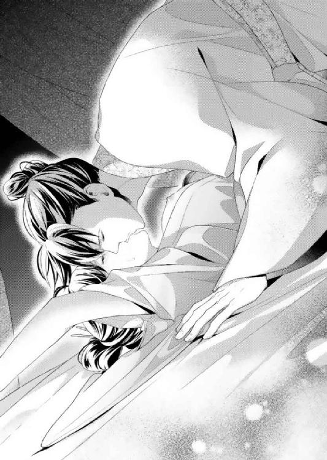
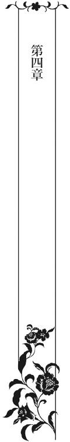
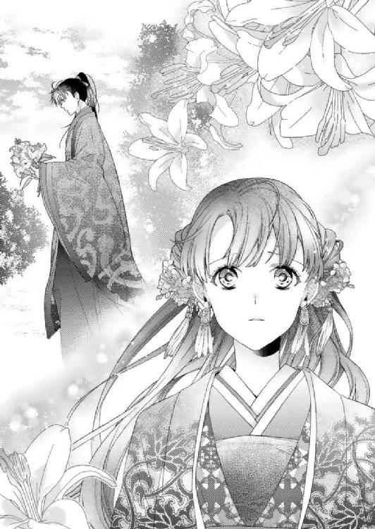
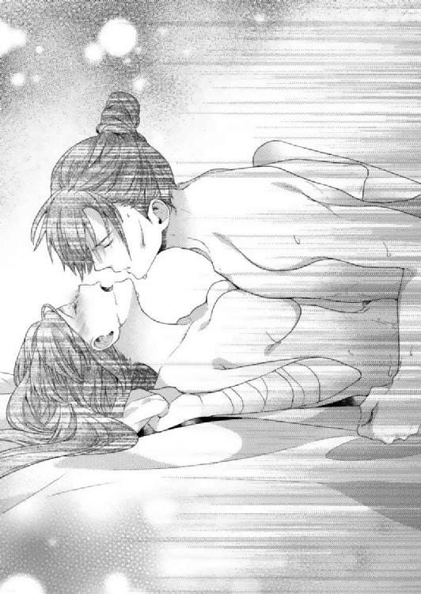

| 後宮寵妃【SS付】【イラスト付】 ～覇帝と恋知らずの姫君～ (ロイヤルキス文庫) | |
| 伊郷ルウ | |
| 株式会社ジュリアンパブリッシング (2016) | |
この物語はフィクションであり、実在の人物・団体・事件等とは、いっさい関係ありません。

イラスト・緒花
古びた重い木戸を開けて外に出た翠華は、抱えていた手桶を地面に下ろし、青々と晴れ渡った空を見上げた。
薄茶色の長衣に幅広の帯を巻き、丈の短い桃色の上着を羽織っている。上着の襟には小花の刺繍が施してあり、質素な装いながらも十八歳になる翠華をより可憐に見せていた。
「なんてよいお天気なのかしら」
空高く輝く太陽に愛くるしい大きな瞳を細め、無意識にほっそりとした手を翳す。
白布の頭巾をかぶり、長く艶やかな黒髪を下ろしている。その腰まである黒髪が、風に煽られて柔らかに舞い上がった。
「本当に外は明るくて気持ちがいいわ」
まもなく秋も終わろうというのに、日向はまだまだ暖かい。
ふと顔を綻ばせた翠華は、手桶を取り上げて村の水汲み場へと足を向ける。
倪国の若き皇帝が住まう都から遠く離れた、山の麓にある貧しい村には各々の家に井戸がない。面倒であっても、その都度、木桶を持って汲みにいかなければならないのだ。
翠華が都からこの村に移り住んで二年余り。かつてない不便な生活を強いられている。
ようやく見つけた住処は、長らく空き屋になっていたためかなり痛んでいた。隙間風が吹き抜け、屋根の瓦は幾つか割れていて雨漏りがひどい。
それでも、生きて暮らせることに感謝の気持ちしかなく、愚痴のひとつもこぼしたことがなかった。
「急がないと......」
桶を抱えて家を出てくる女性の姿を目にし、翠華はにわかに足を速める。
水汲み場には井戸がひとつしかない。食事の支度をする朝晩はとくに混み合い、運が悪いと長らく待たされてしまうのだ。
「魯さん、こんにちは」
村で親しくしている白髪の老女を見かけ、長い髪を靡かせながら駆け寄って行く。
「翠華ちゃんはいつも元気だね？」
「持ちますよ」
足を止めて待ってくれた老女が持つ手桶を取り上げ、並んで水汲み場へと歩き始める。
村で暮らし始めて、最初に声をかけてくれたのが彼女で、とても心根が優しい。
夫はすでに他界していて、息子夫婦とその子供たちと暮らしている。
高齢ながらも矍鑠としていて、朝晩の水汲みを嫁と手分けするほど気力に溢れていた。
「そうそう、翠華ちゃんが刺繍をしてくれた手巾を孫が喜んでくれてねぇ」
「本当に？ 嬉しいわ」
歩きながら老女に顔を向けた翠華は、満面に笑みを浮かべる。
幼いころから刺繍を習ってきた。外で遊ぶよりも刺繍をしているのが楽しく、めきめきと腕前は上がっていき、その美しい出来映えに見る者はみな唸る。
そうして村で暮らし始めてからも刺繍を続けてきたのだが、翠華が手がけた作品の数々を目にした村人たちが、自分の小物にも刺繍を施してほしいと言ってくるようになった。
刺繍の評判は近隣の村にまで広まり、今では金銭を得て請け負っている。それまではたんなる楽しみでしかなかった刺繍が、生活の足しになっているのだ。
「それでね、またひとつ頼みたいんだけどいいかね？」
「もちろんです！」
声を弾ませた翠華は水汲み場にまだ誰の姿もないとわかると、手桶を両手に提げたまま一気に駆け出した。
「転ばないように気をつけるんだよ」
「はーい」
声をかけてきた老女に元気よく返事をし、砂利道を駆けていく。
刺繍の話を詳しく訊きたいところだが、まずは水汲みをすませてしまいたかった。
「はぁ......」
石を積み上げて造った井戸の脇に手桶を置き、桶を結んだ釣瓶を下ろしていく。
「よいしょ、よいしょ......」
水が入った桶を引き上げるのは重労働だが、懸命に釣瓶を手繰っていった。
手桶に汲んだ水を移し、再び桶を井戸の中に下ろしていく。
「すまないねぇ」
のんびりとした足取りでやってきた老婆が、礼を言って手桶を両手で持ち上げる。
「並ばなくてすんだわ」
「よかった、よかった」
水を満たした手桶を取り上げた翠華は、嬉しそうに笑った老婆と並んで再び歩き出す。
「次も手巾に刺繍をすればいいのかしら？」
水をこぼさないよう慎重に運びながら訊ねると、老婆が大きくうなずき返してきた。
「離れて暮らす孫の誕生日祝いにしたいんだよ」
「お誕生日祝いなのね？ どんな柄がいいかしら？」
「おなごゆえ、花か鳥がいいかと思っているんだが」
「じゃあ、花鳥にしましょう」
「花鳥となると......」
老女の声に躊躇いが感じられるのは、駄賃を気にしてのことだろう。
村で暮らす人々はみな貧しく、女性は高価な装身具で身を飾る余裕などあるわけもない。
それでも、女性ならば誰もが美しくありたいと思うものだ。衣や手巾に刺繍を施したり、生花で髪を飾ったりして、ささやかながらも華やぎを加えている。
翠華が手がける刺繍の美しさに魅せられた村人たちは、駄賃を出してでも手に入れたいと思うからこそ依頼してくるのだ。
欲張って高値を付けているわけではないけれど、刺繍を施す範囲が広くなれば値も上がるのはしかたのないことだった。
「お誕生日祝いなのだから奮発して、お花と同じ駄賃でよくてよ」
「いいのかい？」
「お祝いだもの」
遠慮など無用だと、翠華は笑顔を向ける。
本当は駄賃はいらないと言いたかったけれど、それではかえって老女を困らせるだろうと考えてのことだ。
「すまないねぇ、じゃあ花鳥でお願いするよ」
「こちらこそ、ありがとう。お誕生日に遅れたのでは意味がないから急ぐわね」
「誕生日は来月だから、そんなに急がなくても大丈夫だよ」
「でも、早く出来上がっていたほうが安心でしょう？」
「確かにそうだねぇ」
手桶を提げて歩きながら話をしていると、後方から蹄の音が響いてきた。
「なにかしら？」
思わず老女と顔を見合わせる。
どんどん近づいてくる蹄の音がけたたましいのは、複数の馬が走っているからだろう。
馬を飼っている村人もいるが、荷車を引かせるためであって走らせることはない。
もとより、一頭しか飼っていないのだから、村人の馬ではないことは確かだ。
「急ぎましょう」
早く家に帰ったほうがよさそうに感じ、老女とともに足を速める。
けれど、人の足が馬に敵うわけもなく、瞬く間に蹄の音が迫ってきた。
「翠華ちゃん、気をつけて」
「はーい」
家の前で足を止めた老女から注意を促され、翠華は会釈をして家路を急ぐ。
いったい何頭の馬が走っているのだろうか。村の道は狭いから、群れで暴走しているとしたら身に危険が及びそうだ。
「あっ......」
気になって振り返った翠華に目に、馬の大群が映る。
先頭に立つ馬には、煌びやかな衣に身を包んだ男性が跨がっていた。その後方に見える何頭の馬にも人の姿が見て取れる。
先頭の男性の出で立ちから察するに、かなり位が高そうだ。どうやらたんなる馬の暴走ではなく、従者を連れて移動しているところなのだろう。
「早く帰らなければ......」
なにもこんな狭い村の道を通らなくてもといった思いはあったが、このまま歩いていたのでは馬に蹴られてしまうかもしれない。
家まではもう少し。走ればどうにか間に合いそうだ。水を満たした重い手桶を提げたまま、長衣の裾をたくし上げて駆け出す。
「はっ、はっ......」
せっかく汲んだ水をこぼしたくない思いが災いし、足に勢いがつかない。
「そこをどけ───」
すぐ後ろから聞こえてきた男性の怒鳴りにハッとして振り返ると、すぐ目の前まで先頭の馬が迫っていた。
一瞬にして恐怖に足が竦んだ翠華の横を、馬が土埃を舞い上げながら駆け抜けていく。
「きゃ──」
風に煽られて細い身体がくるりと一回転し、翠華は手桶の水をまき散らしながらその場に倒れ込む。
砂利混じりの道に膝をしたたかに打ちつけ、強烈な痛みを感じると同時に馬が激しく嘶き、
目の前で後ろ脚立ちになった。
そのまま踏みつけられるのではと恐れをなし、膝を抱え込んで身を縮めた翠華は身体を震わせる。
「大丈夫か？」
その声に恐る恐る顔を上げると、先頭の馬に跨がっていた男性が険しい顔つきで見下ろしていた。
歳の頃は三十といったところだろうか。たいそう背が高く、なんとも凜々しい顔立ちをしている。
無造作に束ねている長い黒髪は艶やかで、真っ直ぐに向けてくる瞳は黒曜石のように輝いていた。
立派な身体に纏っているのは、上等な藍色の絹地で仕立てられた丸衿の袍。色鮮やかな錦の太帯。そして、細工を施した革の長靴に白い袴の裾をたくし込み、立派な弓を携えている。
村は都への通り道になっているから、山の方角から馬を駆ってきた彼らは、狩りを終えて帰るところなのかもしれない。
「は、はい......」
身分の差は歴然としている。恐縮した翠華は急いで立ち上がろうとしたが、打ちつけた膝の痛みにそれもできず、桜色の唇をきゅっと噛みしめる。
「そなた、怪我をしたのか？」
表情を険しくした男性が馬の背から飛び降り、翠華の前に片膝をつてきた。
「血が滲んでいる......」
男性の言葉に、翠華は己の膝に目を向ける。
確かに長衣にうっすらと血が滲んでいた。
どれほどの傷なのか確かめたかったが、男性の前で長衣の裾を捲るわけにもいかない。
とにかく、高貴な生まれであろう男性の手を煩わせてはいけないと、翠華は痛みを堪えて自ら立ち上がろうとする。
「すまないことをした」
詫びの言葉を口にした男性にいきなり抱き上げられて、大きく瞳を瞠って息を呑む。
まるで幼子のように軽々と腕に抱かれている。このように男性と接するのは生まれて初めてのこと。
女性とは比べものにならない逞しさに驚くと同時に、衣越しとはいえ身体が密着していることに恥ずかしさを覚えた。
「そなたの家はどこだ？」
「あ......あの......」
翠華を抱き上げたまま、男性があたりを見回す。
いったいなどうするつもりなのだろうか。
「すぐに手当をしなければ膿んでしまう」
「大丈夫ですので......」
翠華はとんでもないと首を振った。
気遣いは有り難かったけれど、薄暗くて狭い家になどとうてい身分の高い男性を上げられるはずもない。
「あの......どうか......」
「遠慮をしている場合ではない。早く家を教えるのだ」
急いたように答えを求める男性は、思っている以上に強引だった。
都人はおうおうにして傲慢であり、怪我をさせた相手が貧しい村人であれば素知らぬ振りをしてもおかしくない。
けれど、男性は真摯に翠華のことを心配してくれている。せっかくの親切を無下にするのは忍びない。
それに、都人の機嫌を損ねるような真似をするのが愚かであることを、まだ若いながらも翠華は理解している。
「そ......そこです」
躊躇いがちにあばら家を指さすと、厳つい男性が馬を駆ってきた。
上等な衣に身を包み、弓を携えているが、華やかさには欠ける。
「李馴さま、どうなされました？」
翠華を抱き上げている男性に馬上から声をかけてきたが、敬称をつけたことと不動の姿勢を取っていることから、年長なのはあきらかでも彼らが上下関係にあることが窺える。
救いの手を差し伸べてくれた李馴が主で、厳つい男性を含む他の男性たちは従者だろう。
「怪我をさせてしまったのだ。誰か手当を」
「御意」
一礼して馬首を巡らせた厳つい男性が、隊列をなしている従者たちのもとへと戻って行く。
「そなたがいることにもっと早くに気づけば避けられたのだが......あまりにも急なことで避けきれなかったとはいえ、怪我をさせてしまって詫びようもない」
翠華が暮らす家へと足を進めながら、李馴が申し訳なさそうに小さく首を振った。
なんて優しい人なのだろうか。こちらにも多少なりとも非があるというのに、神妙な面持ちで詫びてくれるなど信じられなかった。
「そんな......膝を擦りむいただけですから」
「傷が残らなければいいのだが」
李馴が木戸の前に立つと、背後からヌッと伸びてきた手が取っ手を掴んだ。
人の気配を感じなかった翠華が驚いて振り向くと、木箱を提げた若者がすぐ後ろに立っていた。
「どうぞ」
木戸を開けた若者が、恭しく頭を下げる。
「入らせてもらうぞ」
短く言った李馴に家の中へと運び込まれ、すぐそこにある背もたれもない粗末な椅子にそっと下ろされた。
「どうしたの？」
厨にいた春慶が、顔色を変えて歩み寄ってくる。
かつては、母親と春慶の三人で暮らしていた。けれど、一年ほど前に母親が病に倒れて他界し、それからは春慶と二人で細々と暮らしている。
二十歳になる春慶は幼いころから仕えてくれていて、ひとり娘の翠華にとっては姉のような存在でもあった。
「私の馬と危うくあたりそうになり、転んでしまったのだ。すぐに手当をさせるゆえ、水を用意してくれないか」
「は、はい......」
頭を下げた春慶が、そそくさと厨に戻る。
艶やかな衣に身を包んだ李馴を見て、ただごとではないと即座に察したようだ。
「あとは頼んだぞ」
木戸を開けてくれた若者に声をかけた李馴が下がり、入れ替わりに若者が前に出てきた。
「水をお持ちしました」
「そこへ」
慌ただしく厨から戻ってきた春慶が若者の支持に従い、運んできた手桶を小さな円卓の上に下ろす。
「失礼します」
椅子に腰かけている翠華の前に跪いた若者が、躊躇うことなく長衣の裾を捲り上げていく。
咄嗟に若者の手を押さえそうになったけれど、それはいけないことだと思い直して恥ずかしさに耐える。
若者は医術の心得があるのか、思いのほか手慣れた手つきで傷口を水に濡らした布で拭い、練り薬を塗ってくれた。
さらには真新しい白い布で膝に巻きつけ、捲り挙げた翠華の長衣を下ろしてその場に立ち上がる。
「こちらを置いていきますので、朝晩、傷に塗ってください」
練り薬が入っている小さな陶器を、若者が翠華に差し出してきた。
村の娘に対して礼儀正しいのは、主の命を受けて手当をしてくれたからだろう。
捨て置かれてもおかしくなかっただけに、丁重な扱いに感謝の気持ちが込み上げてくる。
「ありがとうございました」
「座っていたほうがいい」
椅子から立ち上がって礼を言った翠華を制した李馴が、静かに歩み寄ってくる。
「痛まないか？」
「はい、おかげさまで」
心配そうな顔で見下ろしてきた彼に、柔らかに微笑んで見せた。
勧める椅子もないのが申し訳ない。きっと早く家から出たいと思っていることだろう。
「手当までしていただき、心より感謝いたします」
改めて礼を述べ、座ったまま深く頭を下げる。
「こちらが悪いのだから礼には及ばぬ。大事にするのだぞ」
「はい」
にこやかにうなずき返すと、ようやく李馴の顔に笑みが浮かんだ。
精悍だけれど優しげな笑顔に、翠華は思わず見入ってしまう。
「そなた、名はなんという？」
見とれていた翠華は恥じらいに頬を染めながらも、問われて無視することなどできるわけもなく真っ直ぐに李馴を見上げる。
目が合ってますます恥ずかしくなった。黒く輝く瞳はこれまで見たことがないほどに魅惑的で、恥ずかしいのに目を逸らすことができない。
「教えてくれぬのか？」
機嫌を損ねたというよりは、どこか残念そうな声音に、何故か翠華は胸の奥深いところが熱くなるのを感じた。
「あっ......失礼いたしました。翠華と申します」
「どのような字をあてるのだ？」
「翡翠の翠に蓮華の華の字でございます」
「なるほど、美しい名だ。覚えておこう」
李馴が満面の笑みで大きくうなずき、控えている若者に向き直る。
「戻るぞ」
「御意」
木箱を提げた若者が木戸を開け、李馴を先に送り出す。
「お気をつけて」
背中越しに声をかけたけれど、李馴から返事はなかった。
それでも、小さくうなずいてくれたように見え、翠華はなんだか嬉しくなる。
李馴に続いて家を出た若者が木戸を閉めて間もなくすると、馬の嘶きに続いてたくさんの蹄の音が聞こえてきた。
「都に帰るのね......」
遠ざかっていく蹄の音に耳を傾けながら、ふと李馴に思いを馳せる。
威風堂々とした立ち居振る舞いや、艶やかな身なりから、かなり高い位にあるように思えてならない。
理知的な顔立ちをしているから文官かもしれない。いや、あの逞しい身体は武官にこそ相応しい。そんなことを考えていると、春慶が茶を淹れてきてくれた。
「素敵な殿方だったわね？」
茶碗が載った盆を小さな円卓に下ろした春慶が、興味津々といった顔つきで翠華を見つめてくる。
「宮中にお仕えしているのかしら？」
「ええ、きっとそうよ」
春慶が大きくうなずいた。
以前は仕える身だった彼女も、村で暮らし始めてからは敬語を使うこともない。
都では使用人がいるのはあたりまえだが、村人たちにはそうした余裕などあるわけもなく、翠華と春慶は姉妹を装って過ごしているからだ。
彼女はずっと敬語を使ってきたこともあり、当初はかなりぎこちなかったものの、いまでは本当の姉妹のように気さくに言葉を交わせるようになっていた。
「そうよね......私にはご縁のない方よね......」
もう李馴と会う機会はないだろうと思うと酷く寂しく、小さなため息をもらして春慶が淹れてくれた茶を啜る。
「ここで暮らすほかないけれど、このままでは翠華も私もお嫁に行けそうにないわね」
春慶もまた小さなため息をもらした。
女性の幸せは結婚をして、子を産むことにある。
いたしかたない理由があって都を出たとはいえ、日々の暮らしに追われる貧しい村で暮らしていたのでは、結婚相手を見つけるのも難儀だ。
なにしろ、男性たちは若くしてみな都に出てしまう。いわゆる出稼ぎだ。
早い者は十五、六歳で嫁いでいくというのに、翠華と春慶はいまだ良縁に恵まれないでいるのだ。
「どちらもお嫁に行けなかったら、ともに老いるまで一緒に暮らしましょう」
「翠華ったら、寂しいこと言わないで」
春慶は呆れたように笑ったけれど、翠華は半ば結婚を諦めていた。
どこのものともしれない娘を嫁にもらってくれるような奇特な男性など、世の中にそういないだろう。
貧しいながらも、春慶との二人暮らしは楽しい。飢えることなく生きて行ければそれでいいと、母親を失って頼る者が春慶だけになったときから、そう考えるようになっていたのだ。
「そういえば、手桶はどうしたの？」
ふと思い出したように春慶から訊かれた翠華は、はっとした顔で片手を口元に添え、小さな声をもらした。
「あっ......」
「翠華？」
「転んだときにこぼしてしまって、木桶もそのままだわ」
木桶は生活に欠かせない道具であり、誰かに持ち去られたら大変だと思った翠華は、あたふたと椅子から立ち上がる。
「いたっ......」
擦りむいた膝に痛みが走り、咄嗟に片手を円卓について身体を支えた。
「怪我をしたところが痛むのでしょう？ 私が汲みに行ってくるから、座って休んでいて」
「ごめんなさい」
「無理をして傷が治るのが遅くなったら私が困るもの」
気を遣わせまいとそんなことを言って腰を上げた春慶が、木戸を開けて外に出て行く。
なにからなにまで、自分たちの手でしなければならない。非力な女性二人だけの生活ということもあって、ときに辛い思いもする。
互いに信頼し合い、協力をしなければ、とてもではないが暮らしていけないだろう。だからこそ、春慶の存在を有り難く思う。
「大丈夫......洗い物くらいなら......」
円卓に手をついたまま膝をそっとさすってみた翠華は、ひどい痛みを感じなかったことに胸を撫で下ろし、片足を引き摺るようにして厨に向かった。
怪我をして歩き難いとはいえ、自らの力で足を踏み出すことができるのだから、重傷とは言い難い。
自分の代わりに水を汲みに行ってくれた春慶のことを思えば、のんびり休んでなどいられなかった。
「二、三日もすれば、きっとよくなるわ」
まだ痛みを感じるのは怪我をしたばかりだからと自らに言い聞かせながら、翠華は少しずつ足を進めていた。
「まだ痛むの？」
椅子に腰かけて長衣の裾を捲り挙げている翠華の前に立つ春慶が、身を屈めて膝を覗き込んだまま訊ねてきた。
「ええ、少しだけ」
翠華が怪我をしたのは三日前のこと。与えられた練り薬を朝晩、欠かさず傷に塗ってきたけれど、痛みは完全に消えていなかった。
「かさぶたになりかけているようだけど、痛むのならもうしばらくお薬を塗ったほうがいいかもしれないわね」
「そうしてみるわ」
立ち上がった春慶を見上げてうなずき、円卓に載せてある陶器を手に取り、露わにした膝に練り薬を塗っていく。
『翠華殿、ご在宅でありますか？』
いきなり木戸越しに男性の大きな声が聞こえ、翠華は春慶と顔を見合わせる。
声に聞き覚えはない。村人でないことは確かだ。
「誰かしら？」
丁重な呼びかけに、翠華は不安を募らせる。
都から村へと移り住んでから、訪ねてくる者など誰ひとりとしていなかった。
「私が出るわ」
気を利かせてくれた春慶が木戸に向かい、翠華はそそくさと立ち上がって捲っていた長衣の裾を整える。
「どちらさまで？」
木戸をわずかに開けて外を窺い見た春慶が、驚きの顔で振り返ってきた。
「誰なの？」
「先日の殿方ですよ」
口元に手を添えた春慶の小声に、息を呑んで目を瞠る。
いったいどういうことだろうか。あまりにも突然のことに、なにも考えられない。
「失礼する」
春慶が木戸を大きく開けると、李馴が軽く会釈をして入ってきた。
この前以上に艶やかな衣装を身に纏い、弓に替えて長剣を携えている。
薄暗い家の中が、一瞬にして明るくなったような気がした。そうした錯覚を起こすほど、李馴には華やかさがあるのだ。
「あ......あの......」
もう会うこともないだろうと思っていた李馴との再会が嬉しく、翠華はなにも言葉が出てこない。
どうしてこんなにも胸がときめくのか自分でもわからなかったけれど、信じられないくらい鼓動が高鳴っている。
「見舞いの品を持ってきた」
笑顔でそう言った李馴が片手で合図を送ると、大きな盆を掲げた男性がぞろぞろと家に入ってきた。
盆は紫色の絹地で覆われていて、なにが載っているのか見て取ることはできない。ただ、どの盆も覆う絹地が大きく盛り上がっていた。
「置くところはあるか？」
李馴が家の中を見回し、翠華は困り顔で春慶と顔を見合わす。
板戸で仕切った奥に部屋はあるが、さしたる広さもないばかりか、畳んだ寝具が出しっ放しになっている。
女性二人の寝室でもあり、都で暮らす男性たちに見られるのが恥ずかしい思いがあった。
「こちらに......」
板戸を開けた春慶が、盆を掲げている男性たちを促す。
位が上である彼らを待たせてはいけないと彼女は考えたのだろう。
一段高くなっている板の間へ次々に盆を下ろした男性たちが、縦一列になって無言で家を出て行く。
「怪我の具合はどうだ？」
言葉もなく見守っていた翠華は、心配そうな顔をしている李馴の前に進み出て一礼する。
「おかげさまで、だいぶよくなりました」
「差し障りなく歩けるようで安心した」
安堵の笑みを浮かべた彼が、家の中を改めて見回す。
腰かけてもらって茶を出すべきなのだろうが、勧めるほどの椅子もない。どうしたものかと困っていると、李馴が板の間に歩み寄って行った。
「気に入るとよいのだが」
板の間の並べられた盆に手を伸ばした彼が、端から紫色の絹地を外していく。
「まあ......」
姿を現れた見舞いの品を目にした瞬間、春慶とほぼ同時に感嘆の声をもらした。
絹地の反物、陶器の壺や皿の数々、髪飾りや帯、それに幾種類もの菓子まである。
どれもが高価な品であり、とうてい手の届かないものばかりだった。
怪我は些細なものだというのに、これほどまで贅沢な見舞いの品を自ら届けてくれた李馴はなにを考えているのだろうか。
見舞いの品とはいっても、有り難く頂戴するには豪華すぎるゆえに翠華は戸惑いを覚える。
「李馴さま......」
受け取りがたい品々とはいえ、見舞いの品を断るのはあまりにも無礼であり、礼を言うつもりで歩み寄って行った翠華を、李馴が険しい顔で見返してきた。
「なぜ私の名を知っているのだ？」
「あっ......あの......先日、お連れの方が李馴さまと......」
李馴の厳しい声に恐れをなし、両手を握り閉めて目を伏せる。
「ああ、そうか。問い詰めたりしてすまなかった」
彼の声が和らぎ、翠華は小さく安堵の溜息をもらす。
「李馴さま、このように立派なお見舞いの品々、誠にありがとうございます」
「堅苦しい挨拶などいらぬ。それより、茶を一杯、もらえるか？」
気さくな笑みを浮かべた李馴が、盆のひとつを片手で押しやり、板の間の端に腰かける。
粗末な場所に躊躇いなく座った彼に驚きつつも、春慶に目配せをして茶の用意を頼む。
「そなたも腰かけたほうがいい」
李馴が脇の盆を押しやり、隣に座るよう促してくる。
「失礼いたします」
わずかに距離を取って座ったところに、春慶が茶を運んできた。
「粗茶でございます」
彼女が差し出した盆から、李馴が茶碗を取り上げる。
「なかなかよい茶器だ」
彼は感心した面持ちで、ひとしきり茶碗を眺めた。
都を去るにあたり、大きな荷物にならない食器や装身具を持ってきたが、生活の足しにするためにかなりのものを売ってしまっている。
李馴が手にしている茶碗は、まだ売らずに残っているもののひとつで、村人が使うには相応しくない高価な品だ。
入手先を訊かれたらどうしようかと不安を胸に抱きつつ、翠華は茶を啜る李馴をさりげなく見つめた。
「美味かった」
あごを大きく反らして茶を飲み干した彼が、春慶が持っている盆に茶碗を戻す。
彼女が盆を持って厨に下がり、李馴と二人きりになったことでわかに緊張を覚える。
「どれも美しい刺繍だ。どこで手に入れた？」
茶碗にではなく、部屋に飾っている刺繍について触れられ、膝の上で揃えた手に視線を落としていた翠華は、おずおずと顔を上げた。
「あれらはわたくしが刺したものです」
「なんと、そなたの手によるものとは......」
李馴が真顔で驚き、嬉しさと恥ずかしさが入り交じる。
殺風景な家の中が少しでも華やげばとの思いから、自らの刺繍を壁に飾っているのだ。
腕には自信があるけれど、男性が誉めることは珍しく、なんとも不思議な気分だった。
「名だたる刺繍工芸師に勝とも劣らぬ腕前だ。あの孔雀の出来映えなど、見事のひと言に尽きる」
数ある刺繍の中、自らが大好きな一点を絶賛され、お世辞とわかっていても喜びが込み上げてくる。
「刺繍がお好きなのですか？」
「ああ、美しいものを見ていると心が穏やかになるからな」
李馴の力強い瞳がふと和らぐ。
凜々しい姿と精悍な顔立ちゆえに、少なからず威圧感がある。それは身分の高さの表れでもあるが、優しげな微笑みを目にした翠華は彼を身近に感じた。
「わたくしも同じです。美しいものを見ていると、穏やかな気持ちになれるだけでなく、心が洗われるような気がしてなりません」
そっと胸元に手を添え、顔を綻ばせて李馴を見つめる。
すると、翠華の作品に目を向けてきた彼が、視線をこちらに移してきた。
意図せず目が合い、羞恥を覚えると同時に胸が弾んだ。
男性と見つめ合うのは初めてのこと。いつ目を逸らせばいいのかわからない翠華は、恥じらいにほんのりと頬を染めたまま大きな瞳で彼を見つめた。
「これほどの腕があるのならば、都で店を開いてはどうだ？」
「そんなだいそれたことは......」
あまりにも唐突な李馴の提案に、目を瞠ったまま首を小さく横に振る。
商売を勧めてきたのは、それだけ刺繍を気に入ってくれたからだろう。素直に嬉しく思うけれど、もう都には戻らない。そう心に決めているのだ。
「美しい工芸師が作り上げる美しい刺繍、瞬く間に都で話題になるだろう」
「李馴さまからお褒めの言葉を頂戴できただけで、わたくしは幸せです」
「都に移り、楽な暮らしをしたいとは思わないのか？」
解せないとばかりに、李馴が形のよい眉を引き上げる。
「わたくしは、このまま姉とここで暮らしていければよいと思っております」
「そなた、親はおらぬのか？」
彼がさらに表情を険しくした。
不躾な問いながらも、なぜか失礼に感じない。興味本位で訊ねているのではないと、李馴の表情から伝わってくるからだろう。
「はい、ともに他界しております」
「そうか、立ち入ったことを訊いてすまなかった」
「とんでもありません。どうかお気になさらず」
村の娘にすら礼儀を忘れない彼が、翠華はとても好ましく思えた。
怪我の手当をしてくれただけでなく、日を改めて見舞いにまで来てくれたのだ。それも、豪勢な見舞いの品を携えて。
贅沢な暮らしをしている都人は、薄汚れたあばら家になど二度と足を踏み入れたくないだろうと思うから、より有り難さが身に染みる。
「李馴さまは、都でなにをなさっていらっしゃるのですか？」
身分も年齢も上になる者にものを訊ねるのは、甚だ失礼な行為だ。それを理解していながらも翠華が問いを向けたのは、李馴のことを知りたくなってきたからだ。
「私のことより、そなたのことをもっと知りたい」
「えっ？」
はぐらかしてきただけでなく、これまでになく熱い眼差しを向けられ、翠華は驚きに何度も瞳を瞬かせた。
どうして自分のことを知りたいのだろうか。親もいない村娘のことを知ってどうするのだろうか。李馴の思いがけない言葉に、あれこれ考えを巡らせる。
「そなた、幾つになる？」
「十八になります」
「もう嫁いでもよい年齢だな？」
「そんな......まだわたくしは......」
独り身でいる理由を口にできない翠華は、困り顔で李馴を見返す。
「よい相手が見つからぬか？」
「姉もおりますし......」
「順番など気にしていたら行き遅れてしまうぞ」
真面目な顔をしていたかと思えば、子供のように悪戯っぽい笑みを浮かべる。
端整な顔立ちだから、刻々と変わる表情につい目を奪われた。
いくら身分が高いとはいえ、李馴はどこの誰かもわからない男性だ。
それなのに、表情を変えながらも瞳を逸らすことなく見つめてくる彼と、こうして言葉を交わしていることが楽しく感じられていた。
「それは理解しておりますが、私を気に留めてくださる方が現れないことには」
「誰も現れなかったらどうするのだ？」
李馴は心配しているようでもあり、また面白がっているようでもある。
彼には関係のないこと。そんなことを思いながらも、翠華は真顔で肩を竦めて見せた。
「それも運命かと」
「独り身のまま老婆になってもかまわないというのか？」
「ええ」
迷うことなくうなずき返し、真っ直ぐに李馴を見返す。
きっと彼は呆れたことだろう。結婚を望まない女性などいない。誰もが幸せな家庭を築きたいと願っているのだから。
「覚悟はあるようだが、案ずることはない」
「えっ？」
理解し難い言葉に、翠華は小首を傾げた。
彼は笑っているけれど、呆れたわけではなさそうだ。
ひとりで生きて行く覚悟があると知って、いったい彼はなにを思ったのだろう。
「そなたのように美しい女性を、世の男が放っておくわけがないからな」
そう言っておおらかに笑うと、彼は板の間から腰を上げた。
「長居をしたな」
笑顔を向けられ、翠華はあたふたと立ち上がる。
もう帰ってしまうのかと思うと、一抹の寂しさを覚えた。
もう少しともに過ごしたかったのにと、胸を過ぎった我が侭な気持ちを抑え込み、丁寧に頭を下げる。
「本日は遠いところ、ありがとうございました」
「また近いうちに会おう」
期待を持たせる言葉を残し、李馴が木戸へと足を向けた。
先日は膝の痛みがあって見送ることができなかった翠華は、急いで彼のあとを追う。
「開けろ」
李馴がひと声放つと、すぐさま木戸が開いた。
「お気をつけて」
声をかけた翠華に、彼が向き直ってくる。
先ほどの言葉は社交辞令に過ぎないだろう。二度ばかりか、三度までも都から足を運んでくるわけがないのだ。
これが最後と思うと、本当に寂しい。どうして、これほど彼に惹きつけられるのだろう。一緒にいた時間などほんの少しだというのに、引き留めたい思いにすら駆られていた。
「脚を大事に」
「お気遣いに感謝いたします」
柔らかに微笑んだ李馴に向け、改めて深く頭を下げる。
「馬の用意を」
背を向けた彼が、従者に声をかけて外へ出て行く。
翠華は片手で木戸を押さえ、戸口に立って李馴を見つめる。
待機している馬の数は、先日と同じくらいだろうか。これだけの従者を引き連れて見舞いに来たことに驚く。
李馴は素性を明かしてくれなかっただけに、都でなにをしているのだろうかと、よけい気になってしまう。
「行くぞ」
鞍に跨がるなり短く言い放った李馴が、巧みな手綱捌きで馬を駆り、そのあとを隊列を成して従者が追っていく。
馬が蹴り上げた土がもうもうと舞い上がり、衣の長い袖で口元を覆った翠華は、寂しい思いを胸に抱きながら、遠ざかっていく李馴の背を見つめる。
「帰られたの？」
すぐ近くから聞こえた春慶の声に、無心で見送っていた翠華はふと我に返った。
「なんだか久しぶりに緊張してしまったわ」
そんなことを言って、春慶が大袈裟に肩の力を抜いてみせる。
茶を下げたあと姿を見せなかった彼女は、そばにいることに躊躇いを感じて厨に身を潜めていたのだろう。
「最初はわたしも緊張したけれど、お話をしてみたら思いのほか気さくな方だったわよ」
「こんな田舎までお見舞いの品を持ってきてくださるなんて驚きね？」
「たいした傷でもないというのに、本当に律儀なこと」
同じように不思議な思いを抱いている春慶と顔を見合わせて笑い、木戸を閉めて部屋に戻っていく。
「あれ、どうしましょう？」
「私たちには無用のものばかりだから、とりあえずしまっておきましょうか？」
板の間に並んだ見舞いの品を前に、またしても春慶と顔を見合わせる。
絹地の反物はどれも美しい色合いで、長衣や上着を仕立てたらさぞかし素敵だろうが、身に着けて出向く場所もない。
金細工に真珠や珊瑚を施した髪飾りや、素晴らしい錦の帯にしても同じだ。そして、紋様を施した贅沢すぎる壺や皿は、今の生活には無用の長物といえる。
頂き物を金銭に換えるのは心苦しいが、いずれは売ることになるだろう。その時まで大事にしまっておくしかなさそうだ。
「片づける前にお菓子をいただかない？ 都のお菓子は久しぶりだわ」
「そうね」
声を弾ませた春慶に、すぐさま翠華は同意した。
菓子はしまっておくわけにいかないし、高価な都の菓子には春慶同様、久しぶりのことだけに惹かれるものがあった。
「お茶を淹れてくるわ」
「私はお菓子の用意を」
茶の時間を楽しむために、さっそく二手に分かれる。
翠華は菓子が盛られた脚つきの器を盆から取り上げ、円卓へと運んでいく。
このような菓子を口にするのは、都を出て以来のことだ。
村で食す甘味といえば、せいぜい蒸かした芋や干した柿くらのものだけに、都の菓子が楽しみでならない。
「わたしのために選んでくださったのかしら？」
円卓の中央に置いた菓子を見つつ、李馴に思いを馳せる。
「また会いに来てくださったら嬉しいけれど......」
彼が残した言葉は口だけのものと知りながらも、心のどこかで期待してしまう。
また会いたいくてしかたない。もう一度、言葉を交わしたい。
魅力的な笑顔や熱い瞳を思い浮かべただけで、不思議なくらい胸が苦しくなってくる。
「わたし......どうしてしまったの......」
かつて味わったことがない感情に戸惑う翠華は、重ねた両手を苦しくてならない胸にそっと引き寄せていた。

春慶と二人で厨に立ち、朝餉の片付けをしていた翠華は、いきなり鳴り響いた木戸を叩く音にびくりと肩を震わせた。
「なにごとかしら？」
同じように驚いて洗い物の手を止めた春慶が、強ばった顔で翠華を見てくる。
『翠華殿にお目通り願いたい』
続いて聞こえてきた男性の声に、濡れた手を素早く手巾で拭った翠華は、慌ただしく木戸に向かう。
「もしや......」
李馴が見舞ってくれてから半月ほどが過ぎていて、もう訪れる理由もなくなっている。
それでも、木戸越しに聞こえた慇懃無礼な男性の声は李馴の従者以外には考えられず、期待に胸が膨らんでいた。
「翠華殿で？」
木戸を開けるなり声をかけてきたのは老齢の男性で、地味な黒い衣に身を包んでいる。
その装いには覚えがあった。都でしか見かけることがない宦官だ。宮中に仕える宦官が訪ねてきたことに、翠華はただならない不安を覚える。
「は、はい......わたくしが翠華です」
翠華が一礼すると、ずいっと前に出てきた宦官が家の中を覗き込んだ。
「皇帝陛下の命により、これより宮城へご案内いたします」
「こ......皇......帝陛下......」
翠華は長衣の胸元をぎゅっと握り締める。
瞬く間に血の気が引いていき、立っているのがやっとの状態だ。
なぜ宮城に召されなければならないのか。
逃げるようにして都を離れ、村に辿り着いたのは二年以上も前のこと。村で暮らしていることを知る者は都にいないはずだというのに。
「さあ、こちらへ」
「いったいどういうことでしょうか？ なぜわたくしが宮城へ？」
「勅令でございます。さあ」
理由を説明するつもりはないようだ。
もとより、使いの宦官には理由など知らされていないのかもしれない。
宮城になど行きたくないけれど、皇帝の命令に背けば死罪は免れないだろう。
「春慶！ 春慶！」
恐怖すら覚えた翠華は、大きな声をあげて助けを求めた。
「どうしたの？」
「皇帝陛下のご命令で宮城に召されたの」
「宮城へ？」
春慶の顔が一瞬にして青ざめる。
「こちらは？」
翠華に並んで立つ春慶に、宦官が不躾な視線を向けた。
「あ......姉の春慶です」
「では、ご一緒に」
宦官のひと言に、翠華は春慶と顔を見合わせる。
ひとりで宮城に行くのは心細い。春慶がそばにいてくれたならば、少しは平静が保てそうな気がした。
「春慶......」
翠華はそっと春慶の手を握り、大丈夫と言い聞かせるように大きくうなずく。
皇帝の命に逆らえない以上、覚悟を決めるしかないと思ったのだろうか、彼女が大きくうなずき返してきた。
「馬車をご用意しておりますで、どうぞこちらに」
恭しく頭を下げた宦官が先に立ち、翠華たちを馬車へ導いていく。
村ではまず見かけることがない、四頭立ての豪奢な屋根つきの馬車に、春慶としっかり手を繋ぎ合ったまま乗り込む。
艶やかな緞子で設えた座席に並んで腰かけたところで、両脇の御簾が静かに下ろされ、周りがいっさい見えなくなる。
間もなくして馬車が動き出し、不安が大きくなるばかりの翠華は、震え始めた身体を春慶に寄り添わす。
「春慶、怖いわ......」
「蓮華さま、お気きを確かに」
翠華の実の名を口にした春慶が、震える身体をそっと抱き寄せてくれる。
安心させようとしてくれているのだろうけれど、彼女の身も小刻みに震えていた。
「打ち首になってしまうのかしら？」
怯えた瞳で春慶を見つめ、わななき出した唇をきつく噛んだ。
翠華は倪国の先の皇帝、黄化のひとり娘で、時の皇帝、宗賢は従兄にあたる。
皇女という身でありながらも、都を離れて村で暮らすようになったのは、皇位に固執した極悪非道な宗賢によって父帝が失脚させられたからだ。
父帝を失った翠華は、命からがら母親と女官であった春慶と三人で都から逃れ、皇后と皇女という身分を隠し、息を潜めるようにして村で暮らしてきた。
黄化の血筋を絶ちたいであろう宗賢皇帝に見つかれば、必ずや命を奪われる。だからこそ、都から遠く離れた村で名を変えて暮らすことにしたのだ。
この二年余り、穏やかな日々を過ごしてきたけれど、宗賢皇帝は血眼になって黄化一族の生き残りを探していたのかもしれない。
村娘を宮城に召すなどあり得ないことだけに、翠華はかつてない不安に苛まれていた。
「けれど蓮華さまを亡き者にするために、わざわざこのような贅沢な馬車で迎えに来るでしょうか？」
疑問を呈してきた春慶は、すっかり女官の立場に戻っている。そして、身体を震わせているものの、冷静さは失ってはいないようだ。
「そういえば......」
彼女の考えには一理あるような気がした。
命を奪いたいのであれば、その場で殺せばいいだけのこと。わざわざ宮城に連れてくるまでもない。
「それに、宦官の物腰がとても丁寧でしたでしょう？」
さらなる春慶の言葉に、そういえばと翠華も思う。
宦官の態度はまるで賓客を迎えるかのようだった。命を奪うのが目的であるならば、罪人のように捕らえてよさそうなものだ。
とはいえ、安心させておいて処刑するという魂胆から、そのようにしたとも考えられる。
「目の前で私を嬲り殺しにしたいのかも......」
脳裏にふと浮かんだ恐ろしい考えに、ぶるりと身を震わせた。
凶悪な手段によって皇位に即きながらも、宗賢皇帝は頭脳明晰な皇帝として名高く、民を苦しめる戦も行わないばかりか、国内の安定に努めている。
ただ、民からの信頼が厚い皇帝になったからといって、権力ほしさに父帝を亡き者にしたくらいなのだから、黄化の娘が生きていると知れば見逃すはずがない。
のうのうと暮らしてきた憎き黄化の娘を、自らの手で命を奪いたいと宗賢皇帝が考えてもおかしくなかった。
「春慶、どうしたらいいの......」
ただならない恐怖に襲われた翠華は、震えが止まらない指を握り締める。
「蓮華さま、なにがあって私がそばにおりますから、お気きを強く持たれてください」
春慶が震える手をそっと包み込んできた。
彼女が一緒でよかったと心から思う。
気持ちを強く持つことなど、とてもできそうになかったけれど、力づけてくれた彼女のためにも気丈に振る舞わなければと自ら鼓舞する。
「春慶......」
しっかりと手を握り合い、大丈夫とうなずいてみせた。
この先にあるのが死しか考えられないから、よけいに恐怖が募る。
すべては皇女として生まれた己の運命と受け入れるのは、そう容易いことではない。
都へと走る揺れる馬車の中で春慶と寄り添う翠華は、ただただ細い身を震わせていた。
＊＊＊＊＊
贅の極みを尽くした宮城を懐かしむ余裕もなく、見窄らしい衣を纏ったまま謁見の間に通された翠華は、壇上にある空の玉座を前に跪いて項垂れている。
翠華の懇願も虚しく春慶と引き離され、ひとりきりで皇帝の登場を待つのは本当に心細くてならない。
「陛下のおなーりー」
謁見の間に響いた声に、翠華は少しだけ目線を上げる。
姿を見せたのは、緑色の衣に身を包んだ宦官だ。その艶やかな出で立ちから御前太監だとわかる。
御前太監は皇帝に侍る宦官の長であり、宮中でかなりの権力を持つ侮れない存在だ。
続いて静かな足音が聞こえてきた。宗賢皇帝の足音であることは間違いない。
どのような人物か知りたかったけれど、皇帝の許しを得ずに面を上げるわけにもいかず、翠華は両手を前について平伏し、宗賢皇帝が玉座に着くのを待った。
「皇帝陛下に拝謁いたします」
「面を上げろ」
正面から聞こえてきた声に戦慄が走る。
（......!?）
息を呑んだまま、翠華はおずおずと頭を起こす。
「よく来た」
満面の笑みを浮かべて玉座から腰を上げたのは、忘れようにも忘れられないでいた李馴その人だった。
（なんてこと......）
受け入れ難い現実に、目を瞠って李馴を見つめる。
その身に纏う交領の襴衫は輝く黄金色で、皇帝の証である龍の刺繍が施されていた。
艶やかな髪は丁寧に結い上げてあり、端整な顔立ちが際だっている。
豪勢な黄金の玉座を背に立つ彼は、圧倒的な存在感があった。
父帝の命を奪った憎き宗賢皇帝が、あの優しい李馴であったとは──。
（いったいなぜ......）
李馴に寄せる思いが恋だと気づいたのは、つい先日のこと。
淡い初恋に胸を焦がしてきたというのに、なんという運命の悪戯か。
「もっと早くに迎えをやりたかったのだが、そなたの宮を整えるために時間を要してしまったのだ」
「わたくしの宮？」
唇から零れた声は震えていた。
真紅の織物が敷き詰められた段を下りてきた宗賢皇帝が、理解し難い表情を浮かべて見上げている翠華の前で足を止める。
「立ちなさい」
宗賢皇帝から片手で促され、翠華は一礼してその場に立ち上がった。
「翠華、そなたを妃として迎えたいと思っている」
「な......なんと？」
耳を疑う言葉に狼狽え、ふらりとよろめく。
「大丈夫か？」
咄嗟に手を伸ばしてきた宗賢皇帝に腰を支えられ、言葉もなく見返す。

先帝の娘と知ってのこととは思えない。彼はなにも気づいていないはずだ。とはいえ、胸を撫で下ろすことはできなかった。
「私は気立てのよいそなたが愛しくてたまらない。倪国皇帝の皇后として生涯をともにしたいのだ」
腰に添えられている手でぐいと抱き寄せられ、翠華の背がしなやかに反り返る。
「陛下......」
恋い焦がれてきた男性からの求婚を、喜ぶことができない悲しさに胸がひどく痛む。
宗賢皇帝は父帝を玉座から引き摺り下ろし、命を奪った張本人だ。まさに父の仇。妃になどなれるわけもない。
李馴が宗賢皇帝と知る由もなかったのだからしかたないこととはいえ、恋してしまったことを今さらながらに悔やむ。
「わ......わたくしは貧しい村の娘......陛下の妃として相応しくありません」
とにかく断らなければと、神妙な面持ちで訴えた。
「皇帝の妃になりたくないと？ そうした遠慮深いところもまた愛しい」
大きな手でそっと頬を包まれ、翠華はぴくりと肩を震わせる。
熱を帯びた瞳で見つめてくるのが宗賢皇帝でなければ、素直に喜びを噛みしめられただろう。
恋心はそう簡単に消えはしない。惹かれてしまったからこそ、悲しみが大きかった。
「陛下、お許しを......村娘のわたくしに皇帝陛下の妃など務まるわけもなく......」
「どのような生まれでも気にしない。私はそなたを妃として迎えると決めたのだ」
強い口調で言い放った宗賢皇帝を、翠華は困惑も露わに見返す。
どのように言えば、聞き入れてもらえるのかわからない。
「可直、翠華に青海宮を与えよ」
「御意」
宗賢皇帝から命じられた御前太監の可直が恭しく頭を下げ、翠華に歩み寄ってくる。
「陛下......」
「まずは妃に相応しい身仕舞いをするのだ、よいな？」
肩に手を置いて翠華に言い聞かせてきた宗賢皇帝は、可直に頼むぞとばかりにひとつうなずいて見せると、背を向けてその場をあとにした。
「翠華さま、どうぞこちらに」
頭を軽く垂れた可直が、先に立って歩き出す。
逃げたところですぐに捕らえられてしまうし、皇帝に逆らうような真似をすれば厳罰に処されかねない。
それに、春慶を残して宮城を出ることはできない。彼女はいったいどこにいるのだろうか。
まずは彼女の居所を探すのが先だ。
「可直殿、ともに来た姉はどこにおりますでしょうか？」
勇気を出して問いかけると、可直が足を止めてこちらに向き直る。
「青海宮におられます」
そう言ってにこやかに一礼した彼が、再び前を歩き出す。
すぐに春慶と会うことができる。姉妹だと思っている宗賢皇帝は、気を利かせてくれたのだ。些細なことに李馴の優しさが思い出されてなおさら辛い。
あの日、あの時刻に水汲み場へ行っていなければ、馬を駆る李馴と遭遇することもなかったのに、これも天から与えられた運命だというのか。
父の命を奪われて宮城を追われ、心労で倒れた母親を失い、すでに充分すぎるほど辛い思いをしてきた。
それでもまだ足りないと言わんばかりの酷い仕打ち。己の運命を呪わずにはいられない翠華は、白くなるほどに唇を噛みしめて青海宮へと歩を進めていた。
＊＊＊＊＊
青海宮に案内してくれた可直の命を受け、待機していた女官たちよって身仕舞いが始まり、翠華は瞬く間に美しい姿にその身を変えた。
用意されていたのは、色鮮やかに染めた上等な絹地をたっぷりと使って仕立てた長衣と、金糸をふんだんに織り込んだ眩いばかりの短い上着。
高く結い上げられた黒髪には、玉や花をあしらった黄金の釵や鈿が幾つも飾られ、唇には紅が差され、眉は形よく整えられた。
美しい衣を身に纏うのは久しぶりのことだが、あまり喜びを感じられないでいる。数刻後には宗賢皇帝が青海宮を訪ねてくるのだ。
それよりも前に春慶と逃げる算段をしたいのだが、どこにいるのかまだ会うことができないでいた。
「失礼いたします」
身仕舞いを終えた女官たちが静々と離れていき、翠華は慌てて声をかける。
「あ、あの......ちょっと待って......」
年長の女官が足を止めてこちらに向き直り、両手を前で重ねて頭を下げた。
「この宮に姉がいるはずなの、呼んでもらえるかしら？」
女官は返事をすること小さくなくうなずき、足早に姿を消す。
物心がついたときからそばに女官がいたこともあり、どう接すればよいかわかっている。
ただ、あくまでも村の娘で押し通さなければならないから、皇女であったときのように振る舞うわけにはいかなかった。
「蓮華さ......」
ようやく姿を見せた春慶が実の名を口にしようとしたので、翠華は慌てて人差し指を唇にあてて注意を促す。
すぐに察して口を閉ざした彼女は、あたりの様子を窺いながら翠華に歩み寄ってきた。
新たな衣を与えられた彼女もまた、見違えるように美しい姿になっている。
ただ、妃として迎えられた翠華ほどの豪華さはなく、あきらかな差がつけられていた。
「いつものように姉として振る舞ってちょうだい」
そばに来た彼女に耳打ちし、手を取って青海宮の中庭へと足を向ける。
宮城の後宮には数え切れないほどの宮がある。皇帝より宮を賜った妃たちは優雅な暮らしを送っていたが、宗賢皇帝が即位してからはどのようになっているのだろうか。
いきなり村の娘を皇后の座に就けたりしたら、皇帝の寵愛を得てきた妃たちは嫉妬に駆られて騒ぎを起こしそうだ。
妃嬪たちの争いごとを間近で見てきただけに、想像しただけで恐ろしさに身が震えた。
「いったいどういうことなの？」
静かな中庭に出たところで、さっそく春慶が訊ねてきた。
まるで狐にでもつままれたような顔をしている。
なにも聞かされることなく身仕舞いをされ、宮のどこかで待たされていたに違いない。
「陛下が私を妃にすると言うの」
春慶に説明をしながら、池の畔に置かれた大理石の長椅子に並んで腰かける。
手入れの行き届いた中庭には色とりどりの花が咲き誇り、清らかな水を湛える池には魚が泳いでいた。
乙女であれば誰もが憧れるであろう妃のために設けられた宮は、それぞれに趣向が凝らしてある。
数ある宮の中でも広さを誇るだけでなく、贅の限りが尽くされ豪華絢爛な青海宮は、まさに皇后のために造られた宮だった。
「なんてこと......」
言葉を続けられないほど驚きが大きかったようで、彼女はぽかんと唇を開いたまま翠華を見つめてきた。
「それだけではないの」
「他にもなにか？」
「宗賢皇帝が李馴さまだったのよ」
戸惑いや悲しさなど、さまざまな思いが交錯する翠華は、きゅっと唇を噛みしめる。
「えっ？」
「こんなことがあるなんて......本当に驚いて、卒倒しそうになってしまったわ」
目を瞠っている春慶を、やるせない思いで見つめた。
李馴がただの文官かなにかであったなら、求婚も素直に喜べただろう。それなのに、こともあろうに憎き皇帝だったのだから、胸が痛んでしかたがない。
「そ......それで、どうするつもり？」
春慶の声が上擦っている。
先の皇后に仕えてきた彼女もやはり、心中穏やかでないようだ。
「もちろん村の娘は皇后に相応しくないとお断りしたわ。けれど、陛下には聞き入れてもらえなくて......」
「李馴さまは、たいそう翠華をお気に召していたから」
救いを求める視線を向けた翠華を、春慶が難しい顔をして見返してきた。
見舞いの品を自ら届けに来てくれたときの李馴を思い起こせば、彼女がそう言いたくなるのも理解できる。
時の皇帝が村娘を訪ねてくるとは、誰も思うわけがない。身分が高そうなのに、優しくて人のよい男性だと単純に思っていた。
だからこそ、李馴と楽しいひとときを過ごした翠華は強く心が惹かれたのだ。李馴と引き合わせた運命を呪いたい気分だった。
「だからといって、妃になどなれるわけがないでしょう？」
「逃げ出すつもりでいるの？」
「他にどうしろと？」
「後宮から容易く逃れることはできなことくらい、翠華も知っているはずよ」
周りを気にしたようにより声を潜めた春慶が、そっと翠華の手を取ってくる。
彼女の細い指先が震えていた。
後宮は厳しい監視下に置かれている。彼女は宮女として仕えていたからこそ、逃れることの難しさを訴えてきたのだ。
「わかっているわ。それでも、ここにはいられない」
他に選択肢はないと考える翠華は、自らに言い聞かせるようにきっぱりと言い切った。
父親の敵である宗賢皇帝の妃になどなるのは、屈辱以外のなにものでもないからだ。
「ねえ、翠華......もう一度、陛下にお断りしてみてはどうかしら？」
春慶がぎゅっと手を握りしめてきた。
彼女にしてみれば、危険を冒すことなく宮城の外に出たいのだろう。
命からがら彼女とともに宮城から逃れ、貧しいながらも平穏に暮らしてきた翠華は、その気持ちがよく理解できた。
「そうね、できれば穏便にここを出たいもの」
安心させるように、柔らかに微笑んで見せる。
いくら皇帝であっても、一存で正妃を決定できるとは思えなかった。
倪国を統べる皇帝の妃は、素性の正しい高貴な生まれの女性でなければならないはずだ。
貧しい村で暮らしていた娘を正妃にすると言えば、周りが大反対するだろう。
まだ説得の余地はあるように感じられた。
「ところで、春慶とこの宮で一緒に過ごせるのかしら？」
ひとまず安堵して表情を和らげた春慶が、小さく首を横に振る。
「いいえ、私は如心宮で過ごすように言われたわ」
「そう......でも如心宮ならお隣ね？ 遠く離れた宮でなくてよかったわ」
いったんは落胆した翠華も、すぐに笑みを浮かべた。
できれば彼女と離ればなれになりたくなかったけれど、青海宮と並びの宮であればすぐに訪ねて行くことができ、最小限の不安で留まった。
「今日のうちに陛下のお目通りは叶うのかしら？」
「数刻後に宮を訪ねていらっしゃるとのことよ」
「願いを聞き入れてくださるとよいけれど......」
「大丈夫、きっと聞き入れてくださるわ」
力強くうなずいた翠華は、春慶の手を取ってしっかりと握り合う。
再び李馴と顔を合わせるのかと思うと気が重くなってくるが、今は彼女と二人で村に帰ることだけを考えなければならない。そう強く心に念じていた。
＊＊＊＊＊
「春慶さま、陛下のお越しです」
窓際に立って中庭をぼんやりと眺めていた翠華は、李馴の来宮を告げる女官の声にハッと我に返った。
（落ち着いて......）
両手で胸を押さえ、深く息を吐き出して気持ちを落ち着かせから、ゆっくりと向き直る。
「陛下に拝謁いたします」
手を前で揃えて頭を垂れ、軽く膝を折った。
「楽にするがいい」
許しを得た翠華は、おずおずと顔を起こす。
謁見の間で会ったときと同じ煌びやかな衣に身を包んだ李馴が、満面の笑みを湛えてこちらを見つめている。
彼の優しい微笑みに胸がざわつく。こんなにも穏やかな表情を浮かべる彼が、父親の敵とはとても思えない。
いや、宗賢皇帝は間違いなく極悪非道な男。玉座に就くがために謀反を起こし、父親の命を奪った憎い男なのだ。
「よく似合っている」
艶やかな衣装に身を包んだ翠華を、李馴がしみじみと眺めてくる。
「このようなものは、村で生まれ育ったわたくしには似つかわしくありません」
翠華は村娘であることを前面に押し出し、皇妃として相応しくないことを暗に訴えた。
どうすれば諦めてくれるだろうかと、ひとり待つあいだにあれこれ考えたけれど、他に思い浮かばなかったのだ。
「似つかわしいかどうかは私が決めることだ。そなたは充分すぎるほど美しい」
「そうでしょうか......」
真っ直ぐに向けられる李馴の熱い瞳にまたしても胸がざわつき、翠華はさりげなく視線を逸らした。
目の前にいるのは恋した李馴ではなく、父を殺した宗賢皇帝。恋心は断ち切らなければいけいないのに、彼に見つめられると憎しみが薄れそうになってしまう。
「恥ずかしいのか？」
目を逸らした理由を勘違いした李馴が、片手で翠華のあごを捕らえてくる。
そっと顔を上向かされ、目が合うことを恐れてしかたなく長い睫を伏せた。
「そうした初々しさにより惹かれる」
頬を撫でた指先が首筋を辿り、大きく衿が開いた胸元へと滑り落ちていく。
肌に伝わる温もりに鼓動が跳ね上がり、翠華は咄嗟に退いた。
「おやめください」
両手で胸元を覆い隠し、さっと背を向ける。
「怖がることはない」
優しく囁いた李馴が背中越しに抱きしめてきたが、その腕をするりとすり抜けた。
「翠華？」
背中越しにかけられた声が不機嫌そうで、にわかに慌た翠華は俯き加減で振り向く。
「陛下、お願いがあります」
「なんだ？」
李馴の厳しい口調に一瞬の躊躇いを覚える。
このような状況で願い事をするなど、厚かましいと思っているのかもしれなかった。
「先にも申しましたが、わたくしは学も取り柄もない貧しい村の娘です。宗賢皇帝陛下の妃として相応しい方は他におられるでしょう。どうかわたくしが村に帰ることをお許しください」
「そなた、まだそのようなことを言うのか？」
いきなりきつく腕を掴まれ、驚いた翠華は弾かれたように顔を上げる。
「わたくしは皇妃になることを望んでおりませんし、陛下のおそばにいらっしゃる方々もお許しにならないはずです」
「私がそなたを妃にすると決めたのだ。誰も異を唱えることなどできない」
「陛下？」
「そなたも同じだ」
声高に言い切った李馴に抱き上げられた翠華は、天蓋から垂れる真紅の幕に囲われた寝台へと運ばれていく。
「なにをなさるのですか？」
真紅の幕を掻き分けて中へと入った彼が、抗う翠華を寝台に下ろして身体を重ねてくる。
「なっ......なにを......」
「黙っていろ」
すぐさま逞しい身体で押さえつけられ、身動きが取れない驚きに息を呑む。
「そなたは私のものだ」
見据えてくるその瞳には、計り知れない怒りが宿っているようだ。
皇帝に刃向かった者はみな罰せられる。
翠華の細い身体が恐怖に震えた。
声を出せば女官が姿を見せるだろう。けれど、皇帝を前にして救いを求めることなどできるわけがない。
（どうすればいいの......）
美しい黒檀の円卓に載せた灯籠の明かりに浮かび上がる李馴を、翠華はただただ大きな瞳を瞠って見つめるばかりだ。
「怯えることはない」
ふと目元を和らげた李馴が身を起こし、自ら衣を脱ぎ始める。
押さえつけられていた身体は自由になったのに、あまりの動揺に指の一本も動かせない。
先ほどと違い、見つめてくる瞳は優しい。村を訪ねてきた李馴と同じ瞳。だから、悲しくてしかたなかった。
「この日をどれほど待ち焦がれたことか......」
褝一枚になった李馴が、再び身体を重ねてくる。
寝台がわずかに沈み、ただならない恐怖を覚えた。
「そなたは美しい」
微笑みを浮かべた彼が、そっと頬に触れてくる。
「あっ......」
細い肩が小さく跳ね上がり、一瞬にして触れられているそこが灼けるように熱くなった。
「ようやくそなたを私のものにできる」
李馴の顔に浮かぶのは嬉しそうな笑み。
彼が宗賢皇帝でなければ、恐れることもなかっただろう。
互いに同じ思いでいたことを、素直に喜べたはずだ。
それなのに、李馴は父親の命を奪った憎い男その人。このような運命はとうてい受け入れ難かった。
「さあ、私にすべてを見せてくれ」
李馴が頬から首へと手を滑らせ、さらには纏った衣の上から触れてくる。
「あっ......」
帯を解かれ、衣の合わせを開かれ、瞬く間に薄絹一枚の姿にさせられた。
「いやっ......」
これまで一度として男性の目に晒したことのない姿に、全身が羞恥に赤く染まる。
身を捩り、両手で顔を覆って啜り泣く。
「お願いです......どうかお許しを......」
「まだ出自を気にしているのか？ 愛しいそなた意外に私の妃は考えられぬのだ」
背中越しに抱きしめてきた李馴が甘く囁き、翠華の肩にあごを載せてくる。
「けれど......っ」
どうにか思いとどまってほしかったけれど、言葉を続けられなかった。
薄衣の上から大きな手で翠華の乳房を捕らえてきたのだ。
このままで大変なことになってしまうというのに、身が竦んで抗うこともできない。
「私の妃はそなたただひとり。生涯、そなただけを愛すると誓う」
耳をかすめた熱い吐息に身を震わせると、薄衣の衿から片手を差し入れてきた。
その手で直に乳房を鷲掴みにされ、翠華は声もなく目を瞠る。
どうしたらこの窮地から逃れられるのだろう。考えたいのに、驚きが大きすぎて思考もままならない。
「よい手触りだ」
乳房をやわやわと揉みながら組み敷いてきた李馴が、わななく翠華の唇を塞いできた。
「んっ......」
あまりにも急なくちづけに、心の臓が止まりそうになる。

生まれて初めて交わすくちづけがこれほど苦しいものになると、いったい誰に想像できただろうか。
唇を重ね合わせているのは恋しい李馴であり、憎き宗賢皇帝でもあるのだから、胸のうちは千々に乱れる。
「ぅう......」
音を立つほど幾度も唇を啄まれ、悪戯に舌でなぞられ、堪えがたいこそばゆさにきつく閉じていた唇がうっすらと開いて行く。
そのときを逃さず、李馴が舌を差し入れてきた。くちづけは唇を重ね合わせるものと思っていた翠華は、口の中で蠢く李馴の舌に慌てて顔を逸らす。
「ふっ......ん」
彼の唇から逃れ、詰めてきた息を吐き出した。
鼓動が信じられないほど速くなっている。
いったい李馴はなにをしようとしたのか。わけのわからない恐怖に目を瞠ったまま彼を見つめた。
「そのような顔をして、初めてのくちづけに驚いているのか？」
濡れた唇を無造作に手で拭った彼が、翠華の瞳を覗き込んでくる。
その顔はどこか楽しげで、村のあばら家で彼と過ごしたひとときが思い起こされた。
端整な顔に浮かぶ微笑み。真っ直ぐに見つめてくる瞳。穏やかな声音。どれもが恋しい人のものなのに、拒まなければならないのだ。
「陛下、わたくしは......」
「私が手ほどきしてやるから案ずるな」
翠華の言葉を遮って満面に笑みを浮かべた李馴が、再び唇を重ねてきた。
「っ......」
先ほどとは違う勢いのあるくちづけに、翠華の細く尖ったあごが上がる。
抗う間もなく侵入してきた舌で歯列の裏側を舐められ、口蓋を突かれた。さらには搦め捕られた舌をきつく吸い上げられ、胸の奥深いところが熱く疼く。
こんな感覚は味わったことがない。李馴を押し退けたいと思っているのに、なぜか脱力してしまう。
「んっ......ぁ」
唇を塞がれたまま乳房を掴んでいる手で、胸の小さな突起を撫で回され、そこから甘い痺れが駆け抜けていく。
それは紛れもなく心地よい感覚。だからこそ彼の意のままになっているのが恐ろしく、翠華はなけなしの力で抗う。
「やっ......」
顔を背け、乳房を弄ぶ李馴の手を押さえる。
「どうした？」
乳房を掴んだまま、彼が眉根を寄せて見下ろしてきた。
「わたくしは妃になどなりたくありません。貧しくとも村で平凡な暮らしがしたいのです」
「まだそのようなことを......いつまでも駄々を捏ねるようであれば、そなたの手を繋いでしまうぞ」
平然と恐ろしげな言葉を口にして翠華の手を取ってきた彼が、寝台の四隅に立つ金の柱のひとつに目を向ける。
おとなしく身を委ねなければ、強引に身体を奪うつもりなのだ。なにを言っても聞き入れてはもらえない。
いっそのこと舌を噛み切って自害してしまおうか。そうすれば、もう辛い思いをすることもない。
（いけないわ......）
春慶の笑顔が脳裏を過ぎり、自害を思いとどまる。
死ねば楽になれるが、彼女を残してはいけない。
かつては仕えてくれていた身であったけれど、村では姉妹のように暮らしてきた。
ともに後宮に連れてこられた彼女のこれからを思えば、自分だけが楽になってはいけない。
願いはただひとつ。春慶と二人で村に戻ること。ただそれだけだった。それでも、覚悟を決めるのは容易くなかった。
「わたくしは......」
「素直に身を委ねるか？」
躊躇いに瞳を揺るがす翠華を、柔らかに微笑んだ李馴が見つめてくる。
逃げ出したいけれど、それもできない。
ここで執拗に抗えば、手の自由を奪われてしまう。
今以上に辛く恐ろしい思いなどしたくはなかった。
「は......い」
小さな声で返事をした翠華を見て、李馴が満足そうにうなずく。
「はじめからそうしていればよいものを」
笑いながら言った彼が、翠華の薄衣に手をかけてくる。
胸元を大きく開かれ、乳房ばかりか下肢までが露わになった。
「やっ......」
生まれたままの姿にされた恥ずかしさに、両手で乳房を覆い隠して李馴に背を向ける。
素直に身を委ねる決心をしたばかりだけれど、じっとなどしていられなかった。
「陛下......」
「そなたは私の妃だ。李馴と呼ぶことを許す」
抗いを咎めるでもなく、彼が背後からやんわりと抱きしめてくる。
皇帝を名前で呼ぶことなど本来は許されない。それでも、父親の仇に身を委ねる苦しさや後ろめたさからは、名前で呼ぶことで少し逃れられるような気がした。
「李馴さま......」
「私をその名で呼ぶのはそなただけだ」
剥き出しの肩にあごを預けてきた李馴の声は、ひどく嬉しそうだった。
「翠華......愛しい翠華......」
甘く優しい声が耳をくすぐる。
自分の名を呼ぶのは宗賢皇帝ではなく、恋しい李馴。
身を委ねる相手が李馴だと思えば、これから始まる恐ろしい出来事にも堪えられる。
しっかりと目を閉じた翠華は、触れ合っているのは李馴なのだと、幾度となく自らに言い聞かせた。
「んんっ......」
翠華の首筋に唇を押しつけてきた李馴が、柔肌を軽く吸い上げてくる。
触れる唇の熱に感化されたかのように、そこが瞬時に燃え盛った。
「ふ......」
繰り返し柔肌を啄まれ、同時に胸の小さな突起を弄ばれ、こそばゆさとツンとした痛みに自然と肩が窄まる。
「そなたは感度がよさそうだ」
笑った彼の吐息に肌を嬲られ、露わにされた全身がざわついていく。
「あっ......」
乳首を弄んでいた手が下腹へと滑り落ち、腿をさわさわと撫で始めた。
触れるか触れないかといった絶妙な手の動きがもどかしく、つい抗ってしまいそうになるけれど、翠華はしっかりと目を閉じて堪える。
「あぁ......」
内腿に滑り込んできた大きな手が、柔らかな繁みを目指してゆるゆると這い上がってきた。
指先が腿の付け根あたりをからかうように動き回る。
それはときに繁みに触れ、あまりのくすぐったさに翠華はやめてほしさに身を捩った。
けれど指の動きは止まらない。そればかりか、大胆にも繁みを掻き分けてくる。
「っ......」
指先が秘所を捕らえ、鼓動が大きく跳ね上がると同時に細い身体も反り返った。
「やっ......そんな......」
李馴が触れているそこが、じんわりと甘く痺れている。
こんな感覚は知らない。己の身になにが起きたのかわからず戸惑う翠華は、李馴の手から逃れようとしたが、膝に片脚を絡められて身動きが取れなくなる。
褥における男女の営みについては、翠華も少なからず教育を受けてきた。とはいえ、互いの身体を繋げ合うということくらいしか習っていない。
男女の営みは子を儲けるために行われるものであり、男性にすべてを任せればよいと教わってきた翠華にとって、駆け抜けた甘い痺れは衝撃的だった。
「よい反応だ」
耳たぶを甘噛みしてきた李馴が、柔らかな繁みのすぐ下にある花芽のような突起を指の腹で撫で回してくる。
「ああぁ......」
甘い痺れが熱い疼きに変わり、しどけなく投げ出している足先が震えた。
「李馴さ......ま......」
秘所で渦巻く熱い疼きに狼狽えた翠華は、身を震わせながら咄嗟に李馴の腕を掴む。
「んっ......ん......」
秘所に加えて胸の突起まで優しく撫でられ、双方から湧き上がってくる心地よさに、あられもない声をもらして身をくねらせる。
「まだ始まったばかりだぞ」
赤く染まっている耳を舐めるようにして囁かれ、こそばゆさに肩を窄めた翠華は嫌がるように小さく首を振った。
李馴が触れてくるすべてが、淫らに疼いてしかたない。柔らかな耳たぶも、胸の小さな突起も、繁みに隠された秘所のすべてで感じている。
それはいけないこと。触れているのは自分を我が物にしようとしている宗賢皇帝。いくら恋しい李馴だと言い聞かせても、心はまだ冷静な部分を残していた。
やはりおとなしく身を任せることなど無理。そう思った矢先、乳首と花芽同時にきつく摘ままれ、痛みとも快感ともつかない感覚に身震いが起きる。
「やっ......」
淫らな姿を晒しているだけでも恥ずかしいのに、抗えない自分が情けない。
このままではいけないと思っているのに、李馴から与えられる愛撫に手脚は力なく震えるばかりで、己の意のままに動かすことができないでいるのだ。
「そなたの声は可愛らしい。もっと聞かせてくれ」
「や......んんっ......」
乳首と花芽を執拗に撫で回され、強烈な痺れが止め処なく双方から湧き上がってくる。
鼻にかかった甘い声が勝手にもれ、淫らな肢体が妖しくくねった。
「思った以上に豊かな乳房をしているな」
耳をかすめた熱い囁きに身を震わせたそのとき、鷲掴みにした乳房を荒々しく揺さぶられ、翠華のあごが大きく反り返る。
「はっ......あ、あぁ......」
痺れている乳首を掌で押しつぶされ、乳房に指を食い込まされても心地よく感じてしまう。
痛く思うどころか、彼に触れられているそこかしこが、甘く蕩けていくようだった。
「ん......ふ......っ」
耳たぶを舐められ、またしても鼻にかかった声がもれた。
なにをされても心地よくてたまらず、抗うことをすっかり忘れている。
「んんっ」
乳房を揺さぶりながら、指先で捕らえた花芽を執拗に弄られ、全身が溢れかえる快感に打ち震えた。
「やっ......ふんっ、あっあ......っ......」
「そのように啼かれてたまらない」
李馴が両の手を休めることなく、露わな翠華の尻に腰を押しつけてきた。
上等な薄絹で仕立てた褝越しに、恐ろしいほどの熱が伝わってくる。
灼熱の楔かと思えるそれが、まだ見ぬ李馴自身であるとわかった瞬間、翠華は我に返った。
「李馴......さま......」
必死に腰を捩って逃げ惑う。
男女が身体を繋げるというのは、肌に感じている灼熱の楔で貫かれるということ。
理解していたことではあるけれど、あまりの熱と硬さに恐れをなしたのだ。
「そなたを愛しく思うあまり、もうこのようになってしまった」
笑いながら言った李馴が、抱きかかえるようにして柔らかな乳房を揉みしだき、指先で花芽を撫で回し、逃げ惑う翠華の尻により強く腰を押しつけてくる。
李馴自身の脈動までが、薄絹越しにはっきりと伝わってきた。それはとてつもなく大きく感じられ、身体を繋げることへの不安が募ってくる。
「恐れることはない」
思いを察したのか彼の口調は穏やかだったけれど、そう言われたところで不安は薄れない。
無垢な身体を暴かれる恐怖は、どれほどの言葉も役に立ちそうになかった。
「そなたは私を信じていればいい」
唐突に動いた彼に仰向けにされ、避ける間もなく唇を塞がれた。
「ぅ......」
からかうように何度も唇を啄まれ、ときに軽く噛まれ、きつく閉じていた翠華の口元が次第に解けていく。
「ふ......んんっ」
すかさず差し入れられた舌で、口内をくまなく弄られる。
「はぁ......ああ......んんんっ......」
唇を重ねているあいだも、花芽を撫で回している指先の動きは止まることなく、身体の隅々にまで甘い痺れが広がっていった。
刺激を受け続けた花芽の疼きが、急に激しくなってくる。くちづけ合うのが苦しくなり、唇を逃れた翠華は息も荒く身を震わせた。
「ひゃっ......」
花芽を軽く弾いた指先が、さらなる奥へと滑り落ちてくる。
そこは不浄の場所。そして、まさに男性とひとつになる場所。
自然と身が強張る。
「このように濡らして......」
呆れているような、それでいて喜んでいるようなつぶやきを耳に吹き込んできた李馴が、二枚の花唇を指先で掻き分けて中を探り始める。
「んっ......」
未知の場所に触れられる恥ずかしさに唇を噛んだ瞬間、くちゅくちゅと嫌らしい音が響いてきた。
その音に、己のそこがぐっしょりと濡れているのだと気づかされる。どうして濡れているのかわからない。知らないことばかりで、ますます不安が募る。
「なんと、溢れてくるようだ」
李馴の指先を花唇に割り入れ、翠華は思わず身を強ばらせた。
痛みを覚えたわけではない。己の中に感じる指の生々しさに狼狽えたのだ。
「ここで私を受け入れることは知っているのか？」
「は......はい......」
こくりとうなずき返すと、彼が浅い位置で指を抜き差しし始めた。
「では、破瓜の際に痛みを伴うことも？」
さらなる問いに、長い睫を瞬かせる。
破瓜とはいったいなんだろうか。初めて耳にする言葉だった。
「知らぬか。初めて男と身体を繋げるとき、女は誰でも痛みを感じるものなのだ」
「痛み......」
「痛みはほんのいっときだ、我慢できるな？」
「いやっ......」
どれほどの痛みかわからない恐ろしさから、思わず口を突いて出た拒絶の声に、李馴の顔色がサッと変わる。
「いやか......」
寝台に片肘をついて身体を起こした彼が、怯える翠華を見つめてきた。
怒らせてしまったのだろうか。
どうせ抗えない身の上なのだから、素直にうなずいておけばよかったと後悔する。
「知らぬ痛みに恐れをなすそなたの気持ちも理解できる。ならば、しばしの猶予を与えよう」
意外な言葉に翠華は目を瞠った。
なにを言っても聞き入れてくれなかったというのに、いったいどうしたというのか。
玉座を手に入れるために父親を亡き者にした宗賢皇帝は、傲慢で卑劣な人間なのだから、こちらの気持ちを慮るなど信じられない。
けれど、村を訊ねてきてくれた李馴は、心優しく慈愛に満ちていた。本来の姿はどちらなのだろうか。ふと見せた優しさに翠華の心が揺れる。
「とはいえ、これで終いではない」
意味ありげな笑みを浮かべかと思うと、李馴が背中越しに抱きしめてきた。
猶予を与えてくれるというのは嘘だったのだ。安心させておいて、無理やり身体を繋げるなんて酷すぎる。
「快楽を得る方法は他にあるからな」
耳元で楽しげに囁いてきた李馴が、しっかりと閉じている翠華の脚のあいだになにかを押し込んできた。
「あっ......」
ただならない熱を持つ硬いそれは、紛れもない李馴の猛り。
どうしようというのだろうかと考える間もなく、彼がググッと腰を押し進めてきた。
硬く張り詰めた先端が濡れた花唇をなぞり、甘く疼く花芽にあたる。
「ああぁ......」
蜜に濡れた先端部分で花芽を刺激され、下腹のあたりがずくりと疼く。
指で撫でられていたときとはまったく違う感覚。
熱を帯びた猛りで押し上げられた花芽から広がる痺れはなんとも心地よく、一瞬にして意識がそこへと向かった。
「はっ、ああっ......あぁ......」
逞しい腕で細い身体を抱えてきた彼が、緩やかに腰を使い始める。
灼熱の楔で花唇を擦られ、先端部分で花芽を突き上げられ、湧き出してきたとてつもない快感に打ち震えた。
「そなたに気のやり方を教えてやろう？」
渦巻く快感に溺れ始めた翠華は、意味もわからないままコクコクとうなずく。
「ここにすべての意識を集めるのだ」
熱い猛りで刺激されて疼く花芽を、李馴が指先で捕らえてくる。
「はぅ......」
たまらないほど疼いている花芽をきつく摘ままれ、駆け抜けた強烈な快感に粗相してしまいそうになった。
慌てて下腹に力を入れて堪えたものの、彼はかまわず摘まんだ花芽を引っ張り上げてくる。
「ひっ......や、ぁ」
指だけでなく硬く張り詰めた先端でも花芽を刺激され、疼きがどんどん激しくなっていく。
彼の前で粗相などできないというのに、どうにも堪えようがなくなってきた。
「ゃ......あ......李馴......さま......やめて......」
叫びにも似た声をあげても、彼は花芽を刺激し続けてくる。
窮地に追い込まれてもなお、翠華は唇が白くなるほどに噛みしめ、疼く花芽から意識を遠ざけようと足掻く。
「はっ......あぁ......んん」
一刻を争う状況にあると知ってか知らずか、李馴は花芽を執拗に攻め立ててきた。
「翠華、ともに達するぞ」
熱っぽい声が耳をかすめていくと同時に、脚に挟まれている彼自身が驚くほど力を漲らせてくる。
花唇と花芽に伝わってくる激しい脈動に、甘い痺れと疼きが増幅していき、かつて味わったことがない不思議な感覚がそこを支配し始めた。
それは、なにかを解き放ちたい衝動。躊躇いなくそうすることができたら、どれほど気持ちいいことか。けれど、それは李馴の前で醜態を晒すも同じだった。
「李......馴さま......もっ......許して......わたくしは......」
「案ずるな、そのまま身を委ねていれば快楽を得られる」
許しを請う翠華にそんなことを言いながら、彼は疼いてしかたない花芽をより強く引っ張り上げ、さらには腰を激しく前後させてくる。
「ひっ......あっあっ......んっ......んん」
手脚の震えが止まらなくなり、ついには堪える力を失った翠華の瞳から、大粒の涙が溢れ出す。
「あああぁ......」
震える細い身をしなやかに反らし、白い喉が露わになるほど尖ったあごを突き出し、初めての高みへと昇り詰めていく。
「ああっ......あああぁ......」
「翠......華......」
間を置かずして腰を大きく突き出してきた彼が、硬直している翠華を骨が軋むほどきつく抱きしめてきた。
「ぅ......くっ」
短い呻き声をもらし、ググッと腰を押しつけてくる。
秘所に触れている彼自身が強く脈打ち、精が勢いよく迸った。
それは熱く疼いている花芽を濡らし、達した翠華の身をまたしても震わせる。
「はぁ、はぁ......」
翠華は己の身になにが起きたのかもわからないまま小さく身震いし、力なくその身を広い寝台に投げ出す。
間もなくして訪れたのは、指先までをも満たしていく解放感。翠華はその心地よさに我を忘れて浸った。
「上手く気をやれたようだな」
そっと抱きしめてきた李馴を、放心したまま見つめる。
すぐそこにあるのは、村で見たのと同じ穏やかで優しい瞳。その瞳にはやはり自分だけが映し出されている。
李馴が宗賢皇帝でなければ、無理やり与えられた快楽も素直に喜べた。もとより、身体を繋げることさえ厭わなかっただろう。
けれど、宗賢皇帝は身も心も許してはいけない相手。まだ身体を繋げ合っていないのが、せめてもの救いと言えよう。
まだしばらくは時間を稼げるかもしれない。どうあっても後宮から逃れなければならない翠華は、己を映す恋しい李馴の瞳を複雑な思いで見つめていた。

翠華が後宮入りをしてから、早くも五日が過ぎた。
李馴は早々に翠華を正妃の位を与えるとの勅令を出し、否応なく倪国の皇妃の座に就けられてしまった。
皇帝の命令とはいえ、村の娘を皇妃にすることに異を唱える者はいなかったのかと疑問に感じられたが、すでに婚礼の日取りまで決定している。
李馴が己の意見を押し通したか、もしくは重臣たちが問題ないと判断したかのどちらかだろうが、後宮から逃げ出すことがより困難になったのは確かだった。
「はぁ......」
「またため息などついて」
茶を啜ってはため息をもらしてばかりの翠華に、さすが春慶も呆れたように窘めてきた。
彼女は青海宮の宮女として、翠華の側仕えをしてくれている。
隣の宮とはいえ離れて暮らすことに不安を覚えた彼女は、自ら李馴に翠華の宮女として仕えたいと申し出たのだ。
翠華と春慶が姉妹であると信じて疑わない李馴は、皇妃の姉として不自由のない暮らしを与えたかったようだが、性に合わないと言って納得させたらしい。
皇帝に直訴するのはただならない勇気を必要とする。それでもあえて願い出たのは、ともに後宮を出たいという思いが強くあったからだろう。
務めを終えた春慶は如心宮に戻って就寝するとはいえ、朝から夕までそばにいてくれるのは心強い者だ。
彼女のただならない勇気に感服した翠華は、必ず二人で村に戻ると心に誓っていた。
「ここに来てもう五日になるのよ？ 逃げ出す算段もつかないのだから、ため息もつきたくなるわ」
翡翠の卓を前に座る翠華は、苦々しい思いで向かいにいる春慶を見つめる。
青海宮での暮らしは申し分ない。
宗賢皇帝の寵妃となった翠華は丁重な扱いを受けている。
日々、新たに仕立てられた華麗な衣装や宝飾品が李馴から贈られ、極上の料理が用意され、まさに贅沢三昧だ。
けれど、それは望んだものではない。どれほど美しく身を飾ろうと、美味な料理を卓いっぱいに並べられようと、少しも嬉しくはなかった。
李馴は夜毎、青海宮に足を運んでくるものの、いまだ身体を繋げていない。そればかりか、ともに朝を迎えることもない。たわいのない話をして青海宮を後にする。
猶予が与えられたのはあの夜だけのことと思ったけれど、彼が口にする言葉の端から察するに、どうやら婚礼の日まで待ってくれるつもりでいるらしい。
取り返しのつかない事態になる前に後宮から逃げ出さなければと、焦りばかりが募っているのだ。
「そういえば、後宮には他に妃嬪がいないようなの」
「えっ？」
ふと思い出したように言った春慶を、驚きの顔で見返す。
かつて皇女として後宮で過ごしていたころは、正妃であった母親以外に何人もの妃嬪が暮らしていた。
皇帝には大勢の妃がいる。それがあたりまえだと思っていただけに、春慶の言葉はにわかには信じ難かった。
「妃嬪の姿をまったく見かけないのが気になったものだから、親しくなった宮女にそれとなく訊ねてみたの。そうしたら、陛下が即位なさってから入宮した妃は翠華が初めてだと言われたわ」
「妃が私だけだなんて、そんなこと......」
翠華は不思議な思いで手元の茶器を見つめる。
李馴が即位してから二年が過ぎたが、ひとりも妃嬪がいないなどあり得るだろうか。
妃嬪は世継ぎを設けるために欠かせない存在だ。妃がいない状態を重臣たちがよしとするとは思えない。どう考えても納得がいかなかった。
「翠華にはじめから正妃の位を与えることができたのは、他に妃嬪がいないからかもしれないわね」
「それにしても......」
翠華はわからないと小さく首を振り、香り高い茶を啜る。
妃嬪には位があり、皇帝の寵愛を得ることで上位に昇り詰めていくのがしきたりだ。
それをないがしろにすれば、妃嬪の怒りを買うことになる。
李馴がいきなり正妃の位を与える勅令を出したことを考えると、後宮にいる妃が自分だけである可能性はあった。
いったいどのような理由があって、これまで妃嬪を後宮に召し入れることなく来たのかは気になるところだ。
「でも、他に妃嬪がいないというのは、ここから逃げ出すには都合がよいことだと思うの」
声を潜めた春慶が、卓に身を乗り出してくる。
「どうして？」
茶器を卓に下ろした翠華もまた、わずかに身を乗り出した。
人払いをしているとはいえ、大きな声で話すことは危険であり、彼女との会話はいつも小声だ。
逃げ出す算段ともなるとより慎重になるのもしかたなく、小さな卓を挟んで顔をつきあわせることとなった。
「本来、妃嬪にとって正妃となった翠華は許し難い存在なのだから、失墜させようと躍起になるはずでしょう？」
口元に手を添えて声を潜める彼女に、翠華は小さくうなずき返す。
「あれこれ探りを入れてきてもおかしくないのだから、ここから逃げ出す算段をするどころではないわ」
「確かに、気にしなければならない人の目が少ないのはよいことね」
「あとは手引きをしてくれる者をどうやって見つけたものか......」
問題はそこにあるとばかりに、春慶が小難しい顔で見つめてきた。
後宮には幾つかの門があるが、どこも武装した宦官が夜を徹して警備にあたっていて、容易く抜けることはできない。
知る者など誰もいない後宮で、手助けを求める相手を探すのは難しく、それがいまだ逃亡の算段がつかない大きな理由になっていた。
「春慶、きっとなにか方法があるはずよ。もう少し考えましょう」
名案が浮かぶわけもなく、かといって諦めるわけにいかないのだ。
「でも、あまり時間が......」
春慶が心配そうに見返してきた。
婚礼の日はそう遠くない。
宗賢皇帝の正妃として公になってしまったら、もう逃れることはできないから焦る。
じっくり考える必要はあるものの、さほど時間はかけられないのが辛いところだ。
「大丈夫、きっと大丈夫......」
今はそう答えるしかない翠華は、自らに強く言い聞かせるように大きくうなずいていた。
＊＊＊＊＊
夕餉も終わり、春慶は如心宮に戻って行った。
床に就くにはまだ早い時刻だが、李馴が宮を訪ねてくるとの伝があり、彼女は早々に引き上げていったのだ。
女官たちに酒の用意をさせてから下がらせた翠華は、中庭に出て夜空を眺めながらひとり李馴の訪れを待っている。
「満ちた月はなんて美しいのかしら......」
大理石の椅子に浅く腰かけ、柔らかな絹の衣を意味もなく指先で弄ぶ。
李馴と過ごすのはほんの数刻。
そのあいだ酒を飲んでいる彼は、たわいのない話に終始する。
そんな彼を前にしていると、村を訪ねてきたときのことを思い出し、言葉を交わすほどに翠華の心は千々に乱れた。
彼は父親の命を奪った憎むべき相手なのに、愛しさを覚えてしまう己が許せない。憎しみしか湧いてこなければ、よほど楽に思えてならなかった。
「翠華、また空を眺めているのか？」
ふと聞こえた李馴の声に、ぼんやりしていた翠華はハッとした顔で振り返る。
いつもと変わらない艶やかな姿と穏やかな微笑みに、つい目が奪われてしまう。
彼は恋した李馴ではない。父親を亡き者にして玉座に就いた宗賢皇帝。頭ではわかっていても、恋しい気持ちを消すことができないでいる。
「秋の夜空は美しいが、身体が冷えるだろうに」
「陛下に拝謁いたします」
静かに歩み寄ってきた彼に、慌ただしく椅子から腰を上げて礼を尽くす。
「挨拶などせずともよいと言っているだろう」
「けれど......」
「律儀なものだ」
呆れ気味に笑った李馴に腰を抱き寄せられ、宮の中へと導かれていく。
黒檀の大きな円卓には酒器と、さまざまな料理が並べられていた。
皇帝が口にするものは、すべて御膳房から運ばれてくる。
宦官によって毒味がすまされているのだ。
「今宵も飲まぬか？」
高い背もたれのついた椅子に腰かけた李馴が、自ら酒器を手に取り盃を満たしてく。
世話をする女官も宦官もいないのだから翠華が酌をすべきなのだが、妃がすることではないと窘められてから手を出さなくなった。
「ひと口くらいつきあったらどうだ？」
「では、ひと口だけ」
翠華は素直にうなずき、一礼して席に着く。
酒を嗜む習慣がなかったために、どれほど勧められても断ってきた。
けれど、見上げてきた彼の瞳が今夜はどこか寂しげに感じられ、断り切れなくなってしまったのだ。
「ありがとうございます」
長い衣の袖で手先を覆い、差し出された盃を恭しく受け取る。
「飲み干さずともよいぞ」
無理をするなと笑った彼が、手にした盃の酒を一気に呷った。
なんとも豪快な飲み方だ。酒に強いと自負している彼らしい。
翠華は片手で盃を隠しながら、ほんの少しの酒を口に含む。
生まれて初めて味わう酒は、想像していたより遙かに甘くて美味で、思わず顔が綻ぶ。
「美味いか？」
「はい、とても」
にこやかに答えて盃をそっと円卓に下ろす。
もう飲まないのかと言いたげな顔で、李馴が見つめてくる。
初めて酒を口にしたからか、それとも熱い眼差しを向けられているからか、仄かに頬が熱くなってきた。
顔を赤くしているのが恥ずかしく感じられた翠華は、さりげなく彼から視線を逸らす。
新たに酒を満たした盃を、再び勢いよく煽る姿が目の端に映る。
寛いで酒を飲んでいるのは恋した李馴その人なのに、楽しむことができない。
なぜ彼は宗賢皇帝なのだろう。
なぜ彼は父親を殺してまで皇帝になりたかったのだろう。
李馴の優しさに直に触れているからこそ、さまざまな疑問が湧いてくる。
人を殺めるのは容易いことではないはずだ。彼はそこまでして玉座を手に入れたいと思うような人間だろうか。
とてもそんなふうには見えない。けれど、父帝は彼の手にによって命を奪われた。わからないことばかりだ。
「どうした？」
急に黙り込んだのを不思議に思ったのだろうか、李馴に目を向けると眉根を寄せている。
「李馴さまは先の皇帝の甥にあたられるとか？」
翠華はさりげなく問いかけてみた。
己の身分を明かせない以上は、言葉に気をつけなければならない。
都から遠く離れた村で暮らす者であっても知っていることだけしか、口にしてはいけないようにしなくては。
「ああ、そうだ。私は正当な跡継ぎではない」
躊躇うことなく答えた彼が、くいっと盃の酒を呷る。
これといって表情に変わりはない。真っ直ぐに向けられる力強い瞳には、少しの揺らぎもなかった。
「私が皇位に即いたのが納得いかないようだな」
「いえ......わたくしは......」
不満そうな顔をしたつもりはなかったけれど、李馴の瞳にはそう映ったのだろう。
慌てて否定した翠華は、伏し目がちに彼を見返す。
「確かに私は先の皇帝、黄化の甥だが、先々帝の第一子であり、黄化が謀反を起こしさえしなければ、皇太子である私が父帝亡きあと皇位に即いていた」
「謀反？ いったいどういうことでしょう？」
父帝・黄化の仇と思っていた李馴から知らされた思いもよらない事実に、息が詰まりそうになった翠華は細い指で襟元をきゅっと掴んだ。
皇帝の娘として生まれ、なに不自由なく育ってきた。父親がどうして皇帝になったかなど、これっぽっちも考えたことがなく、周りも語ることがなかった。
あまりにも衝撃的な出来事に言葉を失った翠華は、唖然と李馴を見つめるばかりだ。
「私が十歳のときのことだ。叔父の黄化が謀反を企て、実の兄である父帝を殺害した」
「そんな......」
ほんのり色づいている唇が、わなわなと震え出す。
「倪国の安泰が続いているのをいいことに、酒と色欲に溺れていた父帝に隙があったのは確かだ。なれど、国の安泰は父帝の手腕によるものであり、皇帝である父の命を奪った黄化の罪は重い」
「李......馴さま......まさか......」
「残された私が玉座奪還を誓うのはおかしなことではあるまい？」
「それは復讐......」
なんということだろうか。
翠華の父帝の手によって命を奪われた父親の仇を、李馴は自らの手で討ったのだ。
卑劣な男と決めてかかっていたけれど、彼にはそうするだけの明確な理由があった。
同じく時の皇帝を手にかけた父帝には、どんな理由があったというのか。
いまとなっては知りようもないけれど、実の兄を殺害した事実は消えない。そして、自分が罪深い男の子であるという事実も。
「そうだ。九死に一生を得た倪国の兵を募り、長い時を経て力を蓄えてきた。必ずや黄化を玉座から引き摺り下ろす、それだけが心の支えだった」
「皇妃陛下は......李馴さまの母君はどうされたのですか？」
知るのが恐ろしかったけれど、訊かずにはいられなかった。
実の兄である皇帝を殺したのであれば、皇妃の命を奪っていてもおかしくない。
父帝はいったいどれだけの人を殺めたのだろうか。
「母上は早くに自ら命を絶っている」
「自ら？」
李馴がふと浮かべた苦渋の面持ちは、見ているこちらを不安にさせる。
襟元に手を添えている翠華の鼓動は、恐ろしいほど速くなっていた。
「父帝の寵愛を得ていた母上も、私を産んでからはひどい有様だった。父帝は若い妃を寵愛するようになり、見捨てられたも同然の母上は心を病んでしまったのだ」
彼の瞳に後悔の念が滲む。
きっと心から母親を慕っていたのだろう。
父親以上に母親は身近な存在。だからこそ、より悲しみが大きい。
母親を亡くして間もない翠華は、彼の無念が手に取るようにわかった。
「そうした中で黄化の謀反は起こった」
「なんと......」
激しくわななき始めた唇にそっと手を添える。
彼は相次いで親を亡くしているのだ。
父帝の命を奪った憎しみはいまも消えない。それでも、彼もまた同じ苦しみを味わったのかと思うと、一方的に憎むのは間違っているような気がした。
「翠華、私がそなたひとりを愛すると誓ったことを覚えているか？」
「はい」
ふと穏やかな笑みを浮かべた李馴を、なぜいまここでそのような話をするのだろうかと、解せない気持ちで見返す。
「私は父帝の二の舞を演じるつもりはない。どれほどの権力を得ようとも、酒と色欲に溺れることなく、ただひとりの妃を愛し、倪国を統べる皇帝らしくありたいと思っているのだ」
微笑みながらも毅然と言い切った彼が、酒器を手に取り盃を満たしてく。
多大な権力は誰もが欲しがるものだ。皇帝という地位に胡座をかいていれば、父帝と同じ末路を迎えかねない。それを身をもって知っているからこその言葉なのだろう。
「もしや、わたくしの他に妃嬪がいないのは......」
「妃はそなたひとりでよいのだから、後宮に他の妃嬪などいらぬ」
「李馴さま......」
熱い眼差しを向けられ、胸が熱くなる。
李馴の愛は確かなものだ。彼は本気で愛してくれている。
けれど、憎き黄化の娘だと知ったら、愛はいとも容易く冷めてしまうに違いない。
生涯、出自を隠し通すことは難しい。もとより、嘘を付き続けられる自信がない。
恋心が募るほど辛くなる。いまならまだ李馴を諦めることができる。一刻も早くここから去らなければ。
「翠華」
「は、はい......」
静かな声の呼びかけに、苦渋の思いに胸を痛めていた翠華はおずおずと視線を上げた。
「そろそろ婚礼衣裳の見立てを始めねば間に合わぬと、昨日から佳准にせっつかれている」
「婚礼衣裳......」
「一両日中に反物が届くゆえ、春慶の手を借りて選ぶといい」
「はい」
なにも知らない李馴を素知らぬ顔で欺くことに、胸の痛みがますます強くなる。
正妃となって添い遂げられるものならそうしたいけれど、彼はけっして結ばれてはいけない相手。これも運命と諦めるしかないのだ。
「愛するそなたの晴れ姿をみなに披露するのだから、贅を尽くした婚礼衣裳にするのだぞ」
「ありがとうございます」
「もう少しくらい飲めるだろう？」
小さくうなずいて盃を手に取った翠華は、酒を勧めてくる李馴の笑顔に胸が張り裂けそうになっていた。
驚愕の事実を知った翌日、翠華は朝から黙々と刺繍をしている。
いつものように女官たちが身仕舞いをしてくれた。
金糸をふんだんに織り込んだ上質な絹地で仕立てた衣は、まさに皇帝の妃として相応しい。
高く結い上げた黒髪に飾られた真紅の珊瑚をあしらった釵と鈿は、昨日、青海宮に届けられたものだ。繊細な黄金と赤々とした珊瑚が、黒髪によく映えている。
無言で身仕舞いをする女官たちは手慣れたもので、完璧な姿になるまでに一刻も要しなかった。
衣を纏うときはただ立っているだけ。髪を結ってもらっているあいだは座っているだけ。
それは皇女のころと変わらない日常であるけれど、かつては女官たちと楽しく言葉を交わしたものだ。
入宮して間もないのだから、そうそう親しくなれるはずもない。わかっていることではあっても、およそ返事しかしない女官たちを相手にしていると、身仕舞いの時間がひどく長く感じられた。
ひとりでは寂しい。それなのに、黙りこくっている女官がそばにいるくらいなら、ひとりのほうが気楽だ。
人払いをして刺繍に専念しているほうが、よほど幸せに感じられた。
村からはなにも持ってくることができなかったけれど、刺繍が得意なことを知っている李馴が、刺繍に必要な道具に加え、上等な絹糸を揃えてくれたので不自由はない。
刺繍をしているときは無心になれる。暖かな陽差しに包まれた宮の窓辺に置かれた椅子に腰かけ、ひと針、またひと針と刺していくうちに、時を忘れていった。
「翠華、お茶にしましょう」
夢中になっていた翠華は、春慶の声にふと顔を上げる。
「なにかしら？」
「いやだわ、聞こえなかったの？ お茶にしましょう」
彼女が運んできた盆を、これ見よがしに掲げてみせた。
盆には彩り豊かな茶器と、好物の菓子が載っている。
「ごめんなさい、すっかり刺繍に夢中になってしまって......」
小さく肩をすくめて笑った翠華は、やりかけの刺繍を脇に置いて椅子から腰を上げ、部屋の歩み寄って行く。
部屋に他の女官はいないけれど、つい声を潜めがちになってしまう。物陰で聞き耳を立てる者がいるかもしれないといった不安が常にあるからだった。
「ちょっと小耳に挟んだのだけど、明晩、お披露目の宴が催されるそうよ」
円卓に盆を下ろした春慶が、向かい側に腰かける。
彼女にはまだ李馴から聞いた話を伝えていない。
母妃に仕えていただけでなく、歳上の彼女はとうに知っていることかもしれないし、いまさら知ったところでどうなるものでもない。
ましてや、彼女は宮女なのだから、皇帝同士の争いも、それによる恨みつらみなどまったく無縁のものであり、あえて真実を話す必要はないように感じられていた。
「お披露目の宴とは？」
「重臣を集めて、翠華を正妃として紹介するということではないかしら」
春慶が差し出してきた茶器を受け取った翠華は、茶を啜りながら思案顔で遠くを見つめる。
父帝が失脚した時点で、時の重臣たちはすべて死罪になった。
皇女であった翠華の顔を知るものは誰もいないはずだが、わけもなく胸が騒ぐのはどうしてだろうか。
嫌な予感がするだけでなく、できることならあまり多くの者に顔を知られる前に、後宮から逃げ出したかったのだが、皇帝が催す宴を辞退するのは難しい。
このままでは、逃げる機会をどんどん逸してしてまいそうだ。早く手を打たなければと焦りが募る。
「ねえ、春慶......」
視線を前の戻すと、菓子を頬張っていた春慶が瞳を瞬かせて見返してきた。
「親しくなった宦官はいないかしら？」
「急にどうしたの？」
「高価な品を与えれば、こっそり門を抜ける手引きをしてもらえるのでは？」
極力、声を潜めてもなお、翠華はあたりを気にして目を向ける。
後宮に仕える宦官の中でも、下級宦官は貧しい生まれの者が多い。
玉をあしらった黄金の装飾品のひとつでも掴ませれば、便宜を図ってくれるかもしれない。
この数日、ずっと考えてきたことだが、大きな危険が伴うことでもあり、なかなか口に出せないでいた。
それなのにこの場で提案したのは、わずかな可能性に賭けるしかなほど、切羽詰まった状態になってきたからだ。
「袖の下を渡すということ？」
「ええ」
「門を警備している宦官はひとりではないのよ？ それに、親しく言葉を交わすようになった宦官もいるけれど、数日のことでは信用できるかどうかなどわからないし、あまりにも危険すぎるわ」
とうてい受け入れ難い案だと言いたげに、春慶は厳しい表情で首を横に振る。
「そうね......」
はなから無理とわかっていたことなのだから、おとなしく引き下がるしかないだろう。
互いの事情をよく知るほど親しくなっているならまだしも、胸のうちすらわからない相手に命を委ねられるわけがない。
「門の警備が手薄になるような騒ぎでもあればよいのだけど......」
そんなことをつぶやきながらも、春慶はあり得ないと理解しているのか、苦々しく笑って茶を啜った。
「陛下のおなーりー」
宮の外から聞こえてきた佳准の声に、ハッとした翠華は春慶と顔を見合わせる。
まだ陽が高いというのに、李馴が宮を訪ねてくるなど珍しい。
なにかあったのだろうかと一抹の不安を感じながらも急いで立ち上がり、衣の袖や裾を整えて背筋を伸ばす。
間もなくして李馴の足音が聞こえてくる。ひどく足取りがゆったりとしているのは、急を要しているからではなさそうだ。
「陛下に拝謁いたします」
部屋に姿を現した李馴に、いつもどおり挨拶をする。
「宮にこもってばかりで陽にあたっていないのだろう？ 私と花園をひと巡りしよう」
驚きに顔を上げた翠華に、彼が片手を差し伸べてきた。
「お気遣いありがとうございます」
素直に手を取って隣に並んだ翠華の腰に、李馴がさりげなく腕を回してくる。
自然と寄り添うこととなり、にわかに羞恥を覚えた。
「花園は美しいところだ、きっとそなたも気に入る」
身を寄せ合い宮を出て行こうとする彼を躊躇いがちに見上げ、取り繕った笑みを浮かべた。
後宮の花園は、幼いころからよく訪れていた場所だ。
季節によって彩りが変わっていくさまを、宮女たちと一緒によく眺めたものだった。
花園を賑わす花々の名前はすべて覚えている。どこになにが植えられているいるかも、鮮明に記憶していた。
秋も終わりに近いこの時期ならば、山茶花と椿が色艶やかに、咲き誇っていることだろう。
けれど、そのことを李馴にはけっして知られてはならない。花園では初めて目にしたように振る舞う必要があった。
「明晩、そなたのために宴を催すことにした」
広々とした石畳をのんびりと歩きながら、李馴が反応を窺うように翠華の顔を覗き込んでくる。
「わたくしのための宴でございますか？」
あえて驚きに目を瞠って見せると、彼が嬉しそうに目元を和らげた。
「婚姻を急かしてきた重臣たちに、美しいそなたを早く披露したくなったのだ」
「けれど、わたくしは宴など一度も......」
「そなたは私の隣で微笑んでいればいい。そうだ、赤い薔薇の衣を纏ってきてくれ。そなたの美しさが格段に輝くだろう」
「はい」
うなずいた翠華は、そのまま俯き加減で歩を進める。
宴を拒む術はなさそうだ。
今日のうちに後宮から逃げ出せるわけもなく、覚悟を決めるしかない。
「花園は橋の向こうだ」
李馴が指さす前方に、赤い太鼓橋が見える。
欄干に黄金の細工が贅沢に施されていてる橋の下を、清らかな水を湛える川が流れていた。
かつて幾度となく渡った橋へ、李馴とともに足を向ける。
そのまま橋をわたるかに思われたが、なぜか彼は袂でふと足を止めて後方を見やった。
宮を出てからずっと、李馴に仕える宦官と、翠華に仕える女官が従ってきている。
宦官たちの先頭にいるのは御前太監の佳准だ。
李馴が足を止めたことで立ち止まった彼らは、いちように両手を前で揃えて項垂れている。
「そこで待て」
李馴が短く命じると、佳准が深くうなずき、宦官たちの後方に控える春慶に伝達した。
花園を巡るのに、従者は不要と考えたのだろう。
再び歩き出した李馴に足並みを揃え、大きな太鼓橋を渡っていく。
柔らかに吹き抜けていく風が、頬をかすめる。
降り注ぐ暖かな陽差し。
足を進めるほどに花々が香ってくる。
いっときだけでいいから、寄り添うのが宗賢皇帝であることを忘れたい。
どこの誰とも知らないまま恋した、李馴その人だと思いたい。
恨みや憎しみを抱くことなく、ただ寄り添っていられたら、どれほど幸せだろうか。
「よい香りがするな」
「山茶花の香りですね」
「よくわかるな？」
驚きの顔で見返され、にわかに慌てる。
橋を渡りきった先にあるのは山茶花を植えた一画で、それを知っているからつい口にしてしまった。
「村には山茶花の木がたくさんありましたので」
咄嗟に思いついたのはささやかな嘘。
それを李馴は疑いもせず、にこやかにうなずいていた。
橋を渡り、手入れが行き届いた花園を眺めながら、ゆっくりと小道を歩いていく。
いまが盛りの山茶花が香り高く、衣に匂いが纏わりつてくるような錯覚を起こす。
李馴は言葉少なだ。二人きりの散歩を楽しんでいるようでもある。
彼に身を寄せていることを素直に喜べない翠華は、複雑な思いで美しく花開いた山茶花を見つめた。
「そこで休むか」
山茶花の一画を抜けたところで、李馴が向こうに見える四阿を指さす。
そこは幼いころから女官たちと茶を飲み、菓子を食べたところ。
ほどほどの広さがあり、大理石が敷き詰められている。
四阿とはいえ、朱塗りの太い柱に四方を支えられた立派なものだ。
李馴に導かれるまま四阿に足を踏み入れた翠華は、大きな背もたれがついた横に長い椅子に並んで腰かけた。
すべての柱と椅子の背には、皇帝の象徴である龍が踊っている。そして、天井には色鮮やかに龍が描かれていた。
「そなた、私の妃になる覚悟を決めたようだな？」
ゆったりと背もたれに寄りかかった李馴を、背筋を伸ばして浅く腰かけている翠華は不思議な思いで見つめる。
いったいなにが言いたいのだろうか。皇妃になる覚悟など決まるわけがないというのに。
「あれきり村に帰してくれと口にしなくなったのは、覚悟が決まったからではないのか？」
思い違いなのかと言いたげに眉根を寄せ、翠華の瞳を凝視してくる。
どうせ聞き入れてはもらえないのだから、言うだけ無駄なのだと諦めたにすぎない。
村に帰してもらえないのであれば、春慶と二人で後宮から逃れるだけのこと。
とはいえ、それを李馴に知られてはならない翠華は、機嫌を損ねない答えを考える。
「覚悟など......いまでもわたくしは皇妃に相応しくないと......」
翠華の言葉半ばで身を乗り出してきた李馴に、両の手できつく抱きすくめられた。
「あっ......」
あまりにも急なことに、息を呑んで目を瞠る。
「そのように思うな。そなたこそ私の妃に相応しい」
耳元で熱く囁いてきた李馴が、首筋にくちづけてきた。
柔らかに肌を啄まれ、翠華の細い肩がふるっと震える。
「翠華......私はそなた以外の女には、触れたいという気すら起こらないのだ」
揺るぎない瞳で見つめられ、心のうちを見透かされるのではと恐れを抱いて目を逸らす。
愛を訴えてくるのは恋しい李馴であり、憎い宗賢皇帝でもある。
愛されれば愛されるほど、心は千々に乱れていく。
「あっ......」
耳たぶを甘噛みした彼が翠華の上着の中に手を忍ばせ、衣越しに乳房を掴んできた。
「おやめください」
咄嗟に彼の手を押さえたけれど、彼は聞く耳を持たない。
きつく抱きしめ、首筋にくちづけたまま、指先で乳首を撫で回してきた。
「ああぁ......」
駆け抜けていく甘い痺れに意図せず声がもれ、肩が小さく震える。
「陛下......このようなところで......」
従者はみな橋の向こうに控えていて、誰の目を憚ることもない。もとより、李馴を拒む事などできないことは承知している。
それでも、明るい陽差しの中、咲き誇る花々に囲まれて淫らな行為に及ぶのは、あまりにも不謹慎な気がした。
「誰も見てなどいないから気にするな」
端整な顔に浮かんでいるのは、少年のような悪戯っぽい笑み。
強引で、言うことなどひとつも聞いてくれない。
そんな李馴を愛しく思う気持ちは募るばかりで、もうどうにも止めようがなかった。
「李馴さま......」
自ら両の手でしがみつき、吸い寄せられるように唇を重ねる。
「んふ......っ」
優しく唇を貪られ、自然と口元が緩み出す。
父帝の仇に身を委ねるのは愚かなこと───囁きかけてくるもうひとりの自分を追いやり、李馴とくちづけを交わし続ける。
鷲掴みにされた乳房を激しく揺さぶられ、さらには硬く凝った乳首を指先で転がされ、
湧き上がってきた快感にくちづけどころではなくなった。
「ああぁ......」
思わずこぼれた甘声に慌てて彼の肩口に顔を埋め、溢れかえる快感に身を震わせる。
「遠慮なく声をあげるといい」
我慢するなと笑った彼が恨めしい。
従者からは見えない場所にいるとはいっても、静まり返った花園に響く淫らな声は届くに違いない。
皇帝と妃の戯れ事など彼らは気にせず、知らぬ振りをしてくれるだろう。
ただ、昼間からはしたない振る舞いをしたことを知られていると思えば、顔を合わせるたびに恥ずかしくなるにきまっている。
「んん......っ」
必死に声を抑えようとしているのに、執拗に乳首を責め立ててくる彼は面白がっているとしか思えない。
「李馴さま、どうかもう......」
肩口に顔を埋めたまま懇願しても、意地悪な彼はまるで耳を貸してくれなかった。
衣の裾をたくし上げられ、露わになった膝頭に触れてくる。
「やっ......」
大きな手が内腿に滑り落ち、びくっと肩を震わせて顔を起こした。
「李馴さま？」
大きく目を瞠った翠華は、まさかといった思いで彼を見つめる。
「くちづけだけ濡れたのではないのか？」
「そんなことはありません」
「では確かめてやろう」
にやりとした李馴が、大胆にも内腿に触れている手を奥へと進めてきた。
指先が花芽に触れ、つきんとした疼きを覚えて仰け反る。
「はっ......ぁ」
「これでも濡れていないと？」
花唇へと滑らせた指先を、淫らに動かしてきた。
その途端、じわりと奥から蜜が溢れてくるのを感じ、ただならない羞恥に身を強張らせる。「このまま終わりにはできそうにないな」
楽しそうな声が耳をかすめていくと同時に、指先で溢れた蜜をすくい取り、花芽に塗り込めてきた。
「ああぁ......あっ」
花芽から湧き上がってきたたまらない心地よさに、我を忘れて李馴にしがみつく。
抗う気持ちも、羞恥も、一気にどこかへ消え失せるほどの快感に、自然と力の抜けた膝が開いて行く。
「よい声だ」
彼のひと言に慌てて口に手を添え、人差し指を噛みしめる。
ひとたび花芽に触れられてしまったら、どうあっても声を抑えることはできない。
従者に聞かれて恥ずかしい思いをするくらいであれば、指を噛む痛みに耐えたほうがよほどましだった。
「ふっ......」
絶え間なく花芽を擦られ、甘い痺れが駆け抜けていく。
それは下腹の奥の疼きを誘発し、さらなる蜜を溢れさせた。
「遠慮なく気をやるといい」
甘い声音で唆してきた李馴が、すでに硬く凝っている花芽を摘まんでくる。
いきなり弾けたとてつもない快感に、指を噛んだままあごを大きく反らす。
「くっ......うぅ......」
唇の隙間からもれるのは、苦しげな呻き声。
快楽に溺れたいのに、それができないのがもどかしい。
「指が噛み切れてしまうぞ」
必死の形相を目にしてさすがに李馴は心配になったのか、翠華が噛んでいる手を掴み取ると唇を塞いできた。
「ふっ......」
唐突なくちづけに驚きながらも、声をもらさずにすむ安堵感を覚える。
花芽を擦られるほどに身体は淫らに疼き、下腹のあたりがひくひくと痙攣を始めた。
「んんっ......」
絡め合う舌をきつく吸われて背を反らし、花芽を執拗に嬲られて身を震わせる。
剥き出しにされた膝はさらにしどけなく広がり、淫ら極まりない姿を晒しながらも、翠華は全身をくまなく満たしていく甘美な痺れに溺れていく。
「っ......」
不意に訪れたのは、覚えのある感覚。
けれど、その理由を知っているから恐れることなく身を任す。
無我夢中で意識のすべてを花芽へと向かわせる。
頂点は近い。もう間もなく、天にも昇るような心地を味わえるのだ。
「ああぁ......李馴さま......」
淫靡な熱が高まってくる。
腰が淫らに揺れ動き、手脚の震えが止まらない。
「ああぁ......あっ......くるわ......ああぁ......」
身を捩って両の手でしっかりと李馴の首を絡め取り、下腹の奥から押し寄せてくる奔流に身を任す。
「んっ」
間もなくして熱を帯びた花芽が弾けた。
しがみついたまま身を硬くした翠華は、じんわりと広がっていく甘酸っぱい痺れに浸る。
「達したか？」
優しく背を擦ってくれる李馴が、熱に潤んだ大きな瞳を覗き込んできた。
「李馴さま......」
間近に迫った力強い瞳にハッと我に返った翠華は、背けた顔を両手で覆い隠す。
羞恥に全身が赤く染まっていく。
頬も耳も、手脚までもが灼けるように熱い。
「そのように恥ずかしがるな」
そっと抱き寄せてくれたけれど、彼を見ることができない。
ただ、いつまでも顔を覆っているのも失礼に思え、俯いたまま両の手を下ろす。
「あっ......」
だらしなく膝が開いたままの、露わな下肢が目に飛び込んできた。
さらなる羞恥に襲われ、慌ただしく捲り上げられた衣の裾を下ろしていく。
襟元の乱れにも気づき、指先で整える。
「釵も緩んでいるぞ」
手を伸ばしてきた李馴が、結い髪を飾る釵を差し直してくれた。
強引なのに、どんなときも優しい。
父帝の仇だからといって、李馴を諦めることなどできるのだろうか。
「どうした？」
微笑む彼を見つめていた翠華は、なんでもないと小さく首を振る。
彼のそばにいたい。許されないことなのに、願わずにはいられない。
（李馴さまの妃になったりしたら、父上も母上も悲しむわ......）
先に謀反を起こしたのは父帝であり、そのことが死をもたらした。それでも、若くして命を奪われた父帝の無念を思えば、李馴との婚姻はあってはならないことだ。
「早くそなたを抱きたい」
肩を抱き寄せてきた彼のつぶやきに、心が大きく揺らぐ。
恋しい気持ちと憎しみを天秤にかけてはいけない。それは重々承知しているのに、李馴に寄り添うことに心地よさを覚えてしまう。
（どうしたら......）
彼が愛しくてたまらないけれど、そばにいれば苦しみ続けることになる。
どれだけの時が経たとしても、李馴が父帝を手にかけた事実は動かないのだから。
そして、自分が李馴にとって憎き黄化の娘であることも。
知れば必ずや彼は翠華を妃に選んだことを後悔するだろう。その瞬間、愛は憎しみに取って変わる。
愛する人から憎しみを向けられ、堪えられるわけがない。やはり、李馴と結ばれてはいけない運命にあるのだ。
「婚礼の日が待ち遠しいものだ」
なにも知らず愛してくれる李馴の腕に抱かれる翠華は、甘い余韻に浸るどころか深い悲しみに暮れていた。
宗賢皇帝の正妃のために催された宴の夜、李馴の望み通り翠華は赤い薔薇の衣を纏った。
彼から贈られた衣装の中で、もっとも豪華で優美な仕上がりになっている一着だ。
艶やかな白の絹地に、豊かに花びらを広げた薔薇の刺繍が衣全体に施され、衿、袖、裾には赤い縁取りがあしらわれている。
高く華やかに結い上げた黒髪を彩るのは、透き通るほどに磨かれた大粒の赤い玉を鏤めた黄金の釵と鈿。
それらは翠華の美しさをよりいっそう際だたせ、李馴に伴われて宴の席に姿を見せたときには、集まった重臣たちから感嘆の声があがったほどだった。
宴は宮城の中心にある楽心殿の、板張りの広々とした舞台で行われていた。
上階であることから、張り出すように設けられた舞台は驚くほど眺めがよく、満天の星が手に届きそうなほど近くに見える。
舞台の中ほどに細長い卓が並べられ、夜空を正面から見ることができる別席に、翠華は李馴と並んで座っていた。
今夜の李馴はいつになく艶やかだ。黄金色の絹地で仕立てた袍の衿と袖口には、色合いの異なる金糸と銀糸を交え、見事な龍の刺繍が施されている。
たっぷりとした袴の裾は、金糸の刺繍で幅広く縁取られ、煌びやかさが増していた。
長い髪を高い位置でまとめ、錦の太い帯を巻いた姿は、凜々しいだけでなく美しくもある。
宴に招かれたのは、将軍や参謀といった軍に属する武官と、文事に携わる文官で、みな思いのほか若い。
李馴から紹介があったのち、集まった臣下たちがひとりずつ祝いの言葉を述べるため席に訪れ、そのたびに酒を勧められた翠華は早くもほんのりと頬が染まってきている。
「無理に酒を飲まずともよいのだぞ」
見かねた李馴に耳打ちされ、途中から舐める程度に留めたものの、すでにかなりの量を飲んでしまっていた。
宴の最後まで正気を保っていられるだろうかと心配になってきた矢先、ようやく最後のひとりとなり、若い文官から勧められた盃を翠華はにこやかに口へと運ぶ。
「さあ、今宵は無礼講だ。存分に飲むがいい」
翠華が盃を卓に下ろし、文官が席に戻ったところで李馴が声を響かせると、どこからともなく琵琶と笙の音が聞こえてきた。
続いて舞台の袖から華麗な衣に身を包んだ七名の宮女が小走りで現れる。どうやら舞が始まるようだ。
舞を嗜む翠華は楽曲に耳を傾けるも、聞き覚えがない。新たに作られた曲だろうかと思っていると、宮女たちの舞が始まった。
七名の宮女が同じ舞を揃えるする群舞で、動きは宴の席に相応しく軽やかで優雅なものだ。
集まった臣下たちは、それぞれに舞を眺めながら酒を呷り、宴は和やかに進んでいく。
「そなたも舞を習うといい。そなたの舞う姿はさぞかし美しいだろう」
杯を手にした李馴が、わずかに身を寄せて声をかけてきた。
彼は翠華を村の娘と信じきっているのだから、舞と無縁の生活を送ってきたと思うのは当然のことだ。
「舞などとてもわたくしには......」
身分を隠すためには嘘をつかなければならないのは心苦しくもあるけれど、それもしかたのないことと割り切るしかない。
「おおぉ......」
不意に臣下たちがどよめき、なにごとかと前に目を向けると、舞い手の宮女がひとりしかおらず、楽曲も変わっている。
七人いた舞い手の中でもひときわ目立っていた宮女で、先ほどとは打って変わって妖艶な舞を披露していた。
酔い始めている臣下たちは宮女の舞に見惚れ、酒を飲むのも忘れている。ふと気になって隣に目を向けると、李馴もまた食い入るように舞を披露する宮女を見つめていた。
まるで他のものなど目が入らないかのような、一心な彼の瞳に胸がざわつく。
妖しく舞う美しい宮女に、心を奪われてしまったのだろうか。
すぐ隣にいるというのに、存在を忘れられたように感じられ、翠華は寂しさを募らせる。
（なんてこと......）
舞いながら李馴に寄ってきた宮女が、ことさら淫らに腰を揺らす。
透けるほどに薄い絹地を重ねて仕立てた衣が、動きに合わせてすんなりとした脚に纏わりつき、艶めかしさを際だたせる。
媚びを売るような微笑み。扇情的な腰や手の動き。李馴を惑わそうとしているようにしか見えなかった。
見るのも汚らわしく思えた翠華は舞い手から目を逸らし、盃を手にして飲みたくもない酒を口に含んだ。
早く舞など終わればいい。その願いが通じたのか、ふと楽曲が途切れ、目の端に映る宮女が床に跪いた。
「よい舞だった」
「お褒めの言葉、大変、嬉しく存じます」
李馴から言葉を授かった宮女が、平伏すように深く頭を下げる。
「そなた、名はなんという」
「琳玲と申します」
「琳玲、覚えておこう」
「ありがとうございます」
礼を述べて頭を起こした琳玲が、軽やかな衣を優雅に捌いて立ち上がり、李馴に向けて会釈をする。
（なにかしら......）
李馴から自分へと移された琳玲の視線に、わけもなく身を震わせた翠華は、舞台の袖へと向かう彼女の後ろ姿を、不安な面持ちで見つめた。
琳玲と視線が合ったのはほんの一瞬にすぎない。それなのに、背筋がぞくりとしたのだ。
「どうした？」
顔を強張らせて舞台の袖を凝視している翠華を、李馴が不思議そうに見てくる。
彼はなにも気づいていないようだ。たんなる錯覚だったのかもしれない。
「少し酔ってしまったようで......」
宴を楽しめるわけもない翠華は、早く宮に戻りたい思いから新たな嘘をついた。
臣下たちは好き好きに酒を呷り、話しに興じている。
祝いの言葉は述べたのだから、宴の目的は果たしたといったところだろうか。
中座をしても、誰も気がつきそうになかった。
「酒だけでなく、男たちの熱気に当てられたのかもしれないな。先に宮に戻って休むといい」
労るような眼差しを向けられ、申し訳なさに胸が痛む。
彼のそばにいる時間が長くなるほど、辛さは増すことだろう。
「佳准」
宴の席に加わることなく、後方に控えていた佳准を李馴が呼び寄せた。
「翠華を宮へ」
「御意」
李馴から命を受けた佳准が、身を屈めて翠華に寄ってくる。
「こちらへ」
彼から片手で出口へと促され、目立たないようそっと立ち上がった。
中座をする翠華に目を留めるもいたけれど、とくに言葉をかけてくるでもない。
無礼講の宴では、目上の者が席を立っても誰も気にすることなく、挨拶も無用なのだろう。
彼らとあまり言葉を交わしたくなかった翠華は、救われた思いで佳准のあとに続き廊下へと出て行った。
＊＊＊＊＊
煌びやかな衣を脱ぎ捨て、結い髪を解き、薄い絹地の夜着を纏った翠華は、もう長いこと火照る身体を寝台に横たえている。
李馴に嘘をついて宴を中座したけれど、思っていた以上に酒が回っているようだ。
口にした酒はたいした量でなくても、身体が慣れないせいだろう。
夜ともなれば冷える季節になってきたというのに、肌が熱くてしかたなかった。
「私のようなものを、みな皇妃として認めているのかしら......」
揺らぐ行燈の明かりをぼんやりと見つめながら、宴の席に姿を見せた重臣たちの顔を思い起こす。
誰もが翠華に対して賛辞の言葉を口にし、李馴との婚姻を祝ってくれた。ひとりとしてその表情には偽りが見て取れず、心からの言葉に思えた。
皇家の血を受け継いではいるが、それは誰も知らないこと。彼らは貧しい村に生まれた娘と思っている。
それでもなお、翠華が皇妃となることに反対の声をあげないのが解せない。
「そういえば......」
先日の李馴の言葉をふと思い出す。
彼は黄化を倒すために長い時をかけて力を蓄えたと話してくれた。
集った兵士たちは李馴を頭とし、政権奪還のために尽力してきたのだ。
皇帝の座に就いた李馴と臣下たちは、想像を遙かに超える深い絆で結ばれているのかもしれない。
ならば、李馴に絶大なる信頼を寄せている彼らは、皇帝自ら選んだ妃ならば間違いないと考えてもおかしくなかった。
「それにしても、誰も私を疑う者がいなくて救われたわ......」
寝台に片手を付いて気怠い身体を起こし、窓辺に足を向ける。
まだ誰にも出自は知られていないけれど、安心はできない。村の娘のまま早く後宮から逃げ出さなければ。
「よい風......」
窓を開け放したとたん、冷たい風が流れ込んできた。
下ろした長い黒髪が、風に攫われていく。
薄絹で仕立てた夜着の裾が風を孕み、柔らかになびいた。
火照った肌に、夜風がなんとも心地いい。
「どのように後宮から......」
ここにいてはいけないとわかっているのに、いまだ李馴への思いを断ち切れないでいた。
彼とは結ばれない運命にある。どれほど恋しくても、諦めなければいけない。
幾度も己に言い聞かせてきたけれど、李馴と離れがたい思いに囚われてしまうのだ。
「私は......」
心が決まらないまま、夜空にぽっかりと浮かんだ満月を見つめる。
李馴が父帝の命を奪ったのはわけあってのこと。傲慢で卑劣な男だと思い込んでいただけ。 彼は思いやりと優しさに満ちている。すべての愛を自分に注いでくれている。生涯、愛するという誓いは破られることがないだろう。
李馴に触れられるほどに愛しさは増し、父帝を亡き者にされた憎しすら忘れてしまいそうなほど強く惹かれている。
「けれど......」
李馴の愛を受け入れて皇妃になるということは、己の出自がいつばれやしないかと怯えながら、生涯、偽り続けなければならないとうこと。
そのように恐ろしくて罪深いことができるだろうかと、夜空を見つめながら自問自答する。
「翠華、もう休んでいるのか？」
ふと聞こえてきた李馴の声に、翠華はハッと息を呑んで振り返った。
「窓など開け放して寒くないのか？」
部屋に入ってきた彼が、呆れたような顔をして歩み寄ってくる。
宴を終えてそのまま宮にやってきたのだろうか。煌びやかな衣を纏ったままだ。
「陛下に拝謁いたします」
翠華がいつものように膝を折って恭しく頭を下げると、堅苦しい挨拶を嫌う彼が小さな笑い声をもらした。
「楽にしろ」
「ありがとございます」
顔を起こした翠華は、伏し目がちに彼の前に立つ。
「まだ酔いが残っているのか？」
「はい、少し肌の火照りが......」
「どれ」
手を伸ばしてきた李馴が、ほんのりと赤く染まっている頬に触れてくる。
たったそれだけのことに、鼓動が驚くほど速くなった。
「確かに熱い......そなたに酒は合わないのかもしれない。しばらく口にしないほうがいいだろう」
「はい......」
頬から離れた手が肩に回され、またしても鼓動が跳ね上がる。
「そなた、昼間はすることがないと言っていたな？ 舞を習ってはどうだ？」
肩を抱き寄せてき李馴に寝台へと導かれ、並んで腰かけた。
「舞を？」
「琳玲ほどの舞い手になるには時間を要するだろが、身体を動かすのはよいことだと思うぞ」
翠華の肩を抱き寄せている李馴が、所在なげに膝に載せている小さな手を握り取ってくる。
彼はよほど琳玲の舞が気に入ったのだろう。彼女の舞は確かに素晴らしかったけれど、同じくらいに舞うことはできる。
それを伝えられないのが残念であるとともに、彼が琳玲を持て囃したことにちょっとした悔しさ覚えた。
「聞けば琳玲は後宮一の舞い手ということだ」
「琳玲の舞がお好きなのですね？」
翠華はちらりと隣を見やる。
尖った声をあげてしまったのは、わけもなく苛立ったからだ。
李馴が彼女の名前を口にすると平静でいられなくなるのはどうしてなのだろう。
「うん？ そなた嫉妬しているのか？」
「嫉妬？」
おかしそうに肩を揺らして笑った彼を、小首を傾げて見返す。
「私が他の女の名を口にするのが嫌なのだろう？」
「それは......」
いとも容易く言い当てられ、翠華はきゅっと唇を噛みしめて睫を伏せる。
「案ずることはない。私が愛しているのはそなただけだ。他の女など目に入らぬ」
「けれど......」
「そのように嫉妬深くては、女官の芸を誉めることもできないではないか」
そう言って笑った李馴が、指先で翠華のあごを捕らえてきた。
くいっと顔を上向かされ、戸惑いが色濃く宿る瞳で彼を見つめる。
すぐそこにあるのは、いつもと変わらない揺るぎない強い瞳。
李馴の愛はすべて己に向けられていると実感する。その愛をすべて受け止めたい。
名前を訊ねただけの女官に嫉妬してしまうほど、もう翠華の心は完全に彼に奪われてしまっているのだ。
「李馴さま......」
「そなたは余計なことを考えることなく、私だけを信じていればいい」
柔らかに微笑む李馴にそっと抱きしめられ、唇を塞がれる。
「んっ......」
酒が仄かに香る甘いくちづけ。
酔いにほんのりと火照っていた肌が、一気に燃え盛り出す。
触れ合う唇、絡め合う舌、零れる吐息が心地よくてたまらない。
「李馴さま......」
くちづけの合間に、自然と恋しい人の名が零れ出る。
いっそこのまま、皇妃になってしまおうか。
己と春慶さえ口を閉ざしていれば、きっと誰も黄化の娘だとは気づかない。
蕩けるほど甘いくちづけに溺れる翠華の脳裏を、そんな思いが過ぎっていく。
「んんっ......」
深く唇を重ねてきた李馴に寝台に押し倒され、下ろしている艶やかな黒髪が波うつように広がる。
咄嗟に彼の腕を掴んだけれど、抵抗などできるわけもない。薄絹越しに伝わってくる彼の温もりに、ただただ胸を弾ませる。
逞しい腕に抱かれ、唇を重ね合っていると、胸のうちで渦巻く不安が薄れていく。憎しみさえも忘れた。
「......っ」
搦め捕られた舌をきつく吸われ、いっそう肌の熱が高まる。
どこもかしこも灼けるように熱い。
「ぅうん......」
夜着の中に手を忍ばせて李馴が、大きな手で乳房を鷲掴みにしてくる。
食い込む指の痛みすら快感となり、細い背がしなやかに反り返った。
差し入れられたままの舌が、口内を縦横無尽に動き回る。
搦め捕られた舌を幾度となく吸い上げられ、柔らかな乳房を力任せに揺さぶられ、翠華の身体から力が抜けていく。
「ふっ......んん......」
甘い吐息がひっきりなしに零れる。
しどけなく投げ出している手脚が、小刻みに震えた。
「翠華、そなただけを愛している」
息を触れ合わせるようにして囁いた李馴が、ゆっくりと頭を起こす。
熱に潤んだ瞳に、彼の顔が揺らいで見える。
「愛しい翠華......」
投げ出している翠華の腰を跨いで胸に顔を埋めてきた彼に、すでに硬く凝った乳首を舐められ、甘酸っぱい痺れが駆け抜けていく。
「ああっ......」
小さな塊を口に含み、舌先で弄んでくる。
こそばゆい感覚から逃れたい一心で、押さえつけられている身体をくねらせる。
「んんっ」
過敏になっている乳首を甘噛みされ、湧き上がったちょっとした痛みに、思わず李馴の腕を掴んだ。
「痛いか？」
視線を上げた彼に訊かれ、翠華は素直にうなずき返す。
「すまなかった、次からは気をつけよう」
申し訳なさそうに笑ったのは、優しさの表れ。
そうした些細なことに、喜びを覚えて愛しさが募る。
すべてを捧げてもいいと、そこまで思えるほどに心は李馴に支配されていた。
「翠華......」
おもむろに身体を起こした彼が、翠華の細帯を解き始める。
衣擦れの音とともに細帯が引き抜かれ、夜着の前が大きく開かれた。
露わになった肢体を隠すのも忘れ、熱い眼差しを向けてくる彼を潤んだ瞳で見つめる。
「そなたの肌は絹より滑らかだ」
そっと肌に触れられ、全身が細波立つ。
大きな手は乳房から脇腹へ、さらには下腹を通って薄い繁みに辿り着く。
「ああぁ......」
指は花芽に届いていないのに、そこが熱く疼いた。
まるで早く触れてほしくてたまらないかのように。
けれど、彼は容易く望みを叶えてくれない。
繁みを越えた手を内腿へと滑り落としていく。
「んふっ......」
腿の付け根と膝とのあいだをさわさわと撫でられ、ひくん、ひくんと身体が震える。
花芽に触れそうで触れない指がもどかしくてたまらない。
ほったらかしにされている花芽は、焦れったそうに疼いている。
「李馴さま......」
痺れを切らして名を呼んだ翠華を、李馴がどうしたと言いたげに見下ろしてきた。
望みを言葉にできるわけもなく、ただ彼を見つめる。
「言えぬようだが、そなたの願いは顔に表れている」
李馴はそう言って笑うと、内腿を撫で上げてきた手で秘所を覆った。
「ひっ」
熱く疼いていた花芽ばかりか、すでにしっとりと濡れ始めている花唇をも同時に刺激され、なだらかな下腹が淫らに波うつ。
「早く気をやりたくてしかたないのだろう？」
秘所を捕らえている手を、ゆっくりと回し始めた。
「あっ、ああぁ......」
花芽と花唇の双方から、快感が湧き上がってくる。
「そなたの可愛い声が聞きたい」
花唇から溢れる蜜をすくった指先で、甘く痺れる花芽に撫で回してきた。
待ち望んだ刺激に、花芽がとくとくと脈打つ。
「ああっ......やっ......んん、ぁ......」
喉元も露わにあごを反らし、溢れかえる快感にあられもない声をあげる。
意識のすべてが、濡れた指先で嬲られる花芽に向かった。
「よい声だ」
隣に身体を横たえてきた李馴が、肘枕をついて翠華の顔を覗き込んでくる。
「うっとりしたそのたの顔は艶っぽい」
楽しそうな声をもらし、感じてしかたない花芽を執拗に撫で回す。
熱い疼きと心地よい痺れが入り交じり、投げ出している足先がいやらしく収縮する。
「ぅん......ふ......っ」
恐ろしいほどに感じている。
恥ずかしげもなく淫らな姿を晒し、喘いでいる己が信じられなかった。
「好きなときに達してよいぞ」
片腕に抱きしめられ、花芽をよりいっそう強く刺激され、たまらない快感に全身が激しくわななきはじめる。
「あぁ......やっ......ん......」
下腹の奥から、覚えのある熱が迫り上がってきた。
それは花芽を弄られるほどに熱を増し、荒々しく渦巻き始める。
李馴に教えられた快楽に、すでに虜になっている翠華は、一心不乱に頂点を目指す。
「ああぁ......李馴さま......もう......」
早く渦巻く熱の塊が弾けそうになり、震える両手で彼にしがみつく。
「もう達してしまいそうか？」
「はい......」
切羽詰まった顔でこくりとうなずくと、彼はなぜか無言で見つめてきた。
手の動きまで止まってしまっている。好きなときに達していいと言ってくれたはずなのに、どうしたのだろうか。
「しばし待てるか？」
思いがけない言葉に、長い睫を瞬かせる。
「そなたとともに達したくなったのだ」
耳をかすめた彼の声に昂揚が感じられた。
ついに待ちきれなくなって身体を繋げるつもりなのだろうか。
「李馴さま？」
快楽に溺れきっていた翠華も、ふと正気に戻った。
やはり、まだ皇妃になる覚悟は決まっていないのだ。
「案ずるな、破瓜は婚礼の日と決めている」
心配させまいと笑って身体を起こした李馴が、急いたように自らの帯を解き始める。
男性の身仕舞いには人の手も時間も要するけれど、脱ぎ捨てるのはひとりでもさほど難しくない。
上等な衣を床に放り出すのはどうかと思えたけれど、彼はそれを気にする余裕もなくなっているようだった。
（あれが......）
達せないもどかしさに焦れながら李馴を見ていた翠華は、初めて目にした男性の象徴に思わず息を呑む。
彼が肌を晒すのは初めてのことだ。初めて抱かれたときに、彼自身を肌に感じたけれど、実際に目にすることはなかった。
力を漲らせ、隆々と天を仰いでいるそれを見て、肌に触れて感じた熱と硬さを思い出す。
想像していた以上に逞しく、はしたなくも目が釘付けになった。
「興味を持ったか？」
一糸纏わぬ姿になった李馴からからかわれ、羞恥に顔が赤く染まる。
「そんな......」
両手で顔を覆った翠華が寝返りを打って背を向けると、彼は小さな笑い声をもらして肩をとんと押してきた。
俯せになった瞬間、両手で腰を持ち上げられ、さらには纏わり付く夜着を捲り上げられる。
獣と同じ格好をさせられたうえに、尻を丸出しにされた翠華は羞恥の極みに達する。
「やっ......」
「おとなしくしていろ」
逃げようとしたけれど、すかさず腰を掴んできた彼に抗いを阻止された。
「さあ、始めるぞ」
「ひゃっ」
いきなり背後から腿のあいだになにかを突きつけられ、思わず身を硬くする。
けれど、驚きは一瞬のこと。内腿に挟んでいるのが李馴の猛りとわかり、すぐさま翠華は脱力した。
「ずいぶんな濡れようだ」
片手で腹を抱え込んできた彼が、怒張の先で花唇を擦ってくる。
ぬちゃぬちゃと淫らな音が聞こえてくるのは、それだけ己が蜜を溢れさせているからだ。
触れられ、くちづけられ、花芽を弄られただけで、こんなにも蜜を滴らせてしまうのは、李馴を愛しく思うからなのか。
日ごと敏感に反応するようになっていく身体が、恐ろしくすらある。このまま李馴と触れ合う日が続いたら、いったいどうなってしまうのだろうかと。
「ああっ......」
蜜に濡れた先端で花芽を押し上げられ、すっかり遠のいてた快感が舞い戻ってくる。
さらには伸ばしてきた手で乳房を揺さぶられ、全身が甘くわなないた。
「しっかり脚を閉じていてくれ」
命じられるまま内腿を引き締めると、挟んでいる彼自身の熱と硬さがはっきりと伝わり、体温が一気に跳ね上がる。
「さあ、ともに達するぞ」
李馴が緩やかに腰を使い始めた。
怒張の先端が、熱く疼く花芽を何度も突き上げてくる。
「あっ、あっ、ああぁ......」
溢れ出した快感に、自然と突き出している尻が揺れ動く。
花芽ばかりか、灼熱の楔で擦られる花唇までもが心地いい。
「やっ......あふ......んん......ぁあ」
乳首をきつく捏ねられ、長い黒髪を振り乱して悶える。
花芽、花唇、乳首の三方から、止め処なく快感が湧き上がってきた。
李馴の動きに合わせて寝台が軋む。
開け放した窓から吹き込む風に行燈の炎が揺れ、壁に映し出された二人の影が形を変える。
普段は聞こえない音、いつもとは異なる光景に、羞恥が煽られていく。
けれど、なぜかその羞恥が快感が増幅させた。
花芽はもう蕩けてしまいそうだ。挟んでいる李馴のそれも、ただならない熱を帯びている。
「ああぁ......くる......くるわ......」
間もなくして、花芽が弾けそうなほど疼き始めた。
「李馴さま......ともに......」
「ああ、そなたとともに......」
李馴が腰の動きを一気に速めてきた。
ともに達することの意味など初めは理解できなかったけれど、今になってそれが悦びなのだと気づいた。
身体を繋げなければいいというものではない。李馴の腕に抱かれ快楽を貪ること自体が罪。
そうと頭でわかっていても、恋する気持ちを抑えることはできない。
「あぁ......」
怒濤のごとく迫り上がってきた抗いようのない快感に、しなやかな背を反らして身を震わせる。
「李馴さ......ま......もう......」
細い指で絹地の敷き布を手繰り、極まりの時を迎えた。
「くっ......」
翠華が身を硬くすると同時に、短く呻いた李馴が精を迸らせる。
花芽を濡らしていく精に痺れが走り、ぶるりと身を震わせた。
「ああぁ......」
脱力した翠華の細い身体が頽れる。
すぐさま隣に身を横たえてきた李馴が、両の腕で優しく抱き込んできた。
まるで抜け殻のように放心している。
身体を満たしているのは、どこまでも甘い痺れ。
「翠華、そなただけだ」
耳元で囁いてきた彼が、しっとりと汗に濡れた肩にあごをあずけてくる。
重なり合う互いの鼓動は、まだ乱れたままだ。
「李馴さま、今宵はこのまま......」
「ああ、そうしよう」
「ありがとうございます」
ともに朝を迎えられる嬉しさに頬を緩める。
いつまでも後宮には留まれない。
後宮から逃れたあと、春慶と二人で新たな暮らしを初めても、恋しい李馴と一夜を明かしたことはきっとよい思い出となるはず。
それを糧に生きていける。逞しい腕に抱かれる翠華は、そう心に刻みながら静かに目を閉じていた。
翠華を披露するための宴が催された翌日、琳玲が青海宮に姿を見せた。
訊けば、青海宮の宮女を務めるよう、李馴から直々に命を賜ったという。
なぜ琳玲が抜擢されたのか、その理由は定かではなかったけれど、皇帝の命は絶対であり受け入れるしかなかった。
琳玲にはよい印象を持っていなかったこともあり、最初は警戒していた。ところが、彼女は思いのほか気立てがよく、働き者だった。
琳玲が青海宮に務めるようになって三日になるが、徐々に警戒心も解け始めていた。
「翠華妃、お茶をどうぞ」
陽当たりのいい窓辺で刺繍をしている翠華のもとに、琳玲が茶を運んできた。
「春慶はどうしたの？」
茶を運ぶのは側仕えの春慶の役目であり、翠華は訝しげに琳玲を見上げる。
「春慶さまは佳准殿に呼ばれ、大豊殿に向かわれました」
「そう......」
いったいなにごとだろうかと、わずかな不安を感じて黙り込む。
御前太監である佳准が、勝手に春慶を呼び出すはずがない。
皇帝の命を受けてのことだと思われるが、春慶だけというのが解せなかった。
「こちらで召し上がりますか？」
「ええ、そこに置いてちょうだい」
琳玲の問いかけにふと我に返り、すぐそばにある小さな円卓を指さした。
にこやかに会釈をした彼女が、運んできた茶器を円卓へと静かに下ろす。
「ありがとう」
「拝見してよろしいですか？」
礼を言った翠華の手元に、琳玲が興味深げな視線を向けてきた。
どうやら手がけている刺繍が気になったらしい。
「ええ、どうぞ」
針を布に縫い差し、枠留めしたまま制作途中の刺繍を円卓に載せる。
どうして宴の席で、琳玲の視線に違和感を覚えたのだろうか。愛想がいい彼女を見ていると不思議でならない。
第一印象などあてにならないのだと、つくづく思う。と同時に、警戒したことを申し訳なく思う。
「なんて素敵なんでしょう」
持っていた盆を円卓に下ろした琳玲が、弾んだ声を上げて刺繍を手に取る。
誰であっても、自分が手がけた刺繍を誉められるのは嬉しいものだ。
茶を啜っている翠華は、顔を綻ばせて刺繍を見惚れているような彼女を見つめた。
「翠華妃はとても刺繍がお上手なのですね、どちらで習われたのですか？」
刺繍を静かに円卓へと下ろした彼女からの問いに、翠華は笑みを浮かべたまま動じることなく答える。
「近所に刺繍の腕が立つ高齢の女性がいらして、幼いころから教わっていたの」
「都の外にもそのような方がいらっしゃるのですね」
「ええ、とても親切に教えてもらったのよ」
まるで本当のことのように嘘が口を突いて出た。
入宮してから、いったい幾つの嘘をついただろうか。
慣れてしまうのはよくないことだけれど、李馴に嘘をついたときほどは心も痛まなかった。
「翠華妃はずっと村でお育ちに？」
円卓から取り上げた盆を胸に抱いて新たに訊ねてきた琳礼を、翠華は笑みを絶やすことなく見上げる。
女官と妃という立場にあり、身分の差は歴然としているけれど、年齢が同じこともあって琳玲は親近感を覚えているのだろう。
それは、翠華も同じこと。春慶は歳が近いけれど、姉的存在だ。気兼ねなく言葉が交わせるとはいえ、やはり同年齢の女性とあれこれ話がしたい。
「そうよ、貧しい村だったけれど、よい人ばかりで楽しく暮らしていたわ」
「翠華妃が皇妃になられるのですから、ご両親はさぞかしお喜びでしょう？」
「とうに両親は亡くしているの」
刺繍を手に取った翠華は小さく肩をすくめ、布に縫い止めていた針を抜く。
「あっ......お許しを......大変、失礼いたしました」
ひどく恐縮した琳玲が、跪いて詫びてきた。
女官として立ち入りすぎたと後悔したのだろう。
過ちに気づき、すぐに詫びてくる。そうした彼女の素直さも好ましかった。
「気にしないでちょうだい。陛下が姉の春慶とともに入宮させてくださったので、少しも寂しくないのよ」
「春慶さまは姉上でいらっしゃるのですか？」
跪いている琳玲が、驚きの顔で見上げてきた。
「ええ」
翠華はうなずきながら、片手で立つようにと彼女を促す。
一礼して立ち上がったものの、彼女は不思議そうな顔をしていた。
なにか気になることでもあるのだろうか。
「どうかしたの？」
「あの......翠華妃の姉上がなぜ側仕えに？」
迷い顔で訊ねてきたのは、先ほどの問いで過ちを犯したからだろう。
遠慮がちな視線を向けてくる彼女に、翠華は悪戯っぽい笑みを向ける。
「村では朝から晩まで働いていたから、じっとしているのが辛いと言って陛下に直訴したの」
「そうでしたか」
翠華の笑みに誘われたかのように、琳玲が口元を緩めた。
多くの嘘と、ほんのわずかな事実。
心の底から会話を楽しめないのが残念ではあるけれど、宮で退屈な時間を過ごしていることを思えば、かなり気晴らしになっていた。
「翠華......」
パタパタと足音を立てて戻ってきた春慶が、琳玲の姿を見てふと口を噤んだ。
彼女に聞かれたくない重要な話があるのだろうか。
「下がっていいわ」
「失礼いたします」
命じた翠華に一礼してきた琳玲が、静々と部屋をあとにする。
彼女を目で追っていた春慶を、翠華は急いたように手招いた。
「佳准殿に呼び出されたと聞いたわ。どのような用件だったの？」
「遅れていた婚礼衣裳の反物がようやく明日、届くそうよ。それで、明日のうちに見立てを終わらせてほしいと」
琳玲を下がらせるほどの内容でもないというのに、どうして春慶は人払いをしてほしそうな顔をしたのだろうかと思いつつも、翠華は困惑した声をもらす。
「明日のうちにとは、また急なことね？」
「急がないと仕立てが間に合わないらしくて、佳准殿はかなり焦ったご様子だったわ」
「そう......」
翠華は小さなため息をもらし、手にしていた刺繍を膝に下ろした。
婚礼衣裳は女性にとって特別なもの。
生涯にたった一度の晴の姿を誰もが夢見て育つ。
翠華も幼いころから幾度となく、婚礼衣裳を纏った己の姿を思い描いてきた。
その夢がようやく叶いそうだというのに、ひとつも喜べない。それどころか、婚礼の日が近づくことを恐れている。
いったい、どうすれば後宮から逃げ出すことができるのか。ぐずぐずしてたのでは、婚礼の日を迎えてしまうというのに、よい案が浮かばないのがもどかしくてならなかった。
「そうだわ、間もなく陛下がお見えになるそうよ」
「こちらへ？」
ふと思い出したように言った春慶を、眉根を寄せて見返す。
自ら宮を訪ねてくるのであれば、佳准に春慶を呼び出させることもなかったのにと思う。
そもそも日中は政務に追われているのではないのか。先日、散歩に誘われたばかりだから、李馴が政務をないがしろにしているように感じられてしまう。
「今日は特別な日だそうよ」
「特別な日？」
首を傾げた翠華に、春慶はなんとも言い難い顔で肩をすくめた。
特別な日に宮へ足を運んでくるともなると、やはり気になってしまう。
自分にも関係のあることなのだろうか。
考えても無駄だとわかっているのに、翠華はあれこれ思いを巡らせる。
「翠華さま......」
小走りでやってきた琳玲が、入口で足を止めて深く項垂れた。
「陛下がお見えでございます」
翠華は小さくうなずき、刺繍を脇に置いて椅子から立ち上がる。
間もなくして満面に笑みを浮かべた李馴が姿を現した。
「陛下に拝謁いたします」
翠華を筆頭に、春慶、琳玲も李馴に礼を尽くす。
「楽にするがいい」
李馴のひと言に翠華は顔を起こしたが、女官の二人は軽く項垂れている。
よほどのことがないかぎり、皇帝と目を合わせることは許されないからだ。
「琳玲、面を上げろ」
李馴が琳玲に呼びかけたことに、翠華は驚きを隠せない。
皇帝が直接、女官に声をかけることはない。
琳玲を青海宮の女官にしただけでなく、わざわざ声をかけたりするのは、よほど気にかけているからなのだろうか。心なしか胸がざわつく。
「きちんと務めを果たしているか？」
どこか怯えたように頬を引き攣らせていた琳玲も、李馴から言葉を向けられたとたんに表情を和らげた。
「僭越ながら申し上げます。わたくしは陛下の命にお応えできるよう、翠華妃に誠心誠意、尽くしております」
「それはよい心がけだ。そなたの働きによっては、近いうちに位が上がるだろう」
満面の笑みを浮かべた李馴の言葉に、琳玲が呆気に取られて大きく目を瞠る。
彼女は青海宮の女官になってから、まだ幾日も経っていない。
それなのに、もう位を上げようというのだから特例といえよう。
翠華ですら驚いたのだから、とうの琳玲が呆気に取られるのも無理のない話だ。
「陛下、心より感謝を申し上げます。皇妃となられる翠華妃には、これまで以上の誠意を尽くすことを、ここにお約束いたします」
「翠華は私のだいじな妃だ。そなたのように勤勉な女官がそばにおれば安心していられる」
「恐れ多いお言葉......よりいっそう精進いたします」
琳玲は感極まったように、唇を震わせている。
李馴が彼女を青海宮の女官に抜擢したのは、気立てのよさや働き者であることを、宴の席で見抜いていたからかもしれない。
舞を誉めてくらいで嫉妬の念を抱いたことを、翠華はいまさらながらに恥ずかしく思った。
「翠華、一緒に来てくれ」
「はい」
一礼して李馴に並び、静かな足取りで宮を出て行く。
外には佳准以下、皇帝に仕える宦官がずらりと整列している。
いつもの見慣れた光景であるけれど、なぜか佳准は花の束を抱えていた。
それも清楚な白い百合の花を幾本も束ねたものだ。
（今日は特別な日と......）
春慶の言葉が思い出された。
なにか関係があるのだろうか。
「今日はどちらへ？」
暖かな陽差しの中に出たところでさりげなく訊ねた翠華を、李馴がいつになく神妙な面持ちで見つめてくる。
「母上の命日ゆえ墓参りをする」
「ご命日でしたか......で、墓はどちらに？」
思いがけない答えに驚きながらも、素朴な問いを投げかけた。
歴代皇帝の墓は、宮城の外に建立されるのが習わしだ。
散歩がてら訪ねられるような場所にはないはず。
皇帝の輿、もしくは馬車の用意があってようさそうなものだけに解せなかった。
「自害した母上は墓に入ることを許されなかった」
苦々しい表情を浮かべる李馴を、言葉もなく見つめる。
親の墓がないというのは、子としてひどく悲しいものだ。
殺害された父帝の墓はもちろんのこと、後宮を追われ、心労の末に命を落とした母妃もまた墓がない。
李馴が政権奪還を企てなければ、父帝と母妃は墓で安らかに眠れたはずなのだ。
父帝の最後を見届けることができなかっただけでなく、貧しい村の一画に母妃の亡骸を埋めるしかなかった無念さに、李馴への憎しみを募らせてきた。
けれど、李馴もまた似たような境遇にあるのだ。自ら命を絶った彼の母妃は墓がなく、黄化に討ち取られた父帝の亡骸も行方知らずになっていることだろう。
互いに悲しみを味わい、親を亡き者にした相手を恨んでいる。李馴を恋しく思うあまり、憎しみを忘れそうになっていたけれど、やはり許せることではない。
そして、翠華が黄化の娘と知ったら、李馴もまた新たな憎しみに苦しむこととなる。
どれほど惹かれ合っていても、やはり結ばれてはいけないのだと改めて思い知らされた翠華は、唇を噛みしめて項垂れる。
「墓がないのが忍びなく、私が母上のための碑をあちらに建てたのだ」
翠華の胸のうちなど知る由もない李馴が、ゆったりとした足取りで歩きながら前方を指し示す。
その先にあるのは、泉を擁する広々とした庭園だ。
花園とは異なり、花をつけない木々で形成されている。春は目にも鮮やかな新緑に、秋には黄金や橙色に染まった光景を楽しむことができた。
「そなたを母上に紹介したい」
指さした手を下ろして翠華の腰に回してきた李馴が、底辺へと足を進める。
妃として彼の母妃に紹介されることに躊躇いがあり、翠華は足取りが重い。
いつまで従順な振りを続けられるだろうか。
恋しいのに添い遂げることが許されない李馴のそばにこのままいたら、心が壊れそうな気がしてならなかった。
「佳准、そこで待て」
庭園の入口で足を止めて振り返った李馴に、佳准が恭しく花束を掲げて歩み寄ってくる。
彼の手から花束を受け取りった李馴が、美しく花開いた百合をひとしきり見つめて小さなため息をもらした。
どのような思いが脳裏を過ぎっているのだろう。その顔がいつになく寂しげで、翠華は胸が痛む。

「さあ」
李馴に促され、泉に沿って設けられた庭園の小径を並んで歩く。
澄んだ水面に、色を変え始めた木々の葉が映っている。
ときおり葉擦れが聞こえるだけの静かな庭園を、口を閉ざした李馴とともに進む。
まもなくして、彼が小径を逸れた。
その先には砂利が混ざる地面が続いている。
彼は母妃の碑を人の目につかないところに建てたのだ。
安らかに眠ってほしい。そんな思いがあってのことだろう。
木々のあいだを抜けてしばらくすると、ようやく碑が現れた。
「あれだ」
短く言った李馴が、碑に歩み寄って行く。
妃として紹介されることに躊躇いがありながらも、この場を逃れる術もなく彼に従い、並んで碑の前に立つ。
碑にはなにも文字が刻まれていない。積み上げられた石の形から碑であろうことはわかるけれど、皇妃を悼むものと気づく者はいないだろう。
百合の花束を碑に捧げた李馴が深く項垂れ、彼に倣って黙礼した翠華は己の母妃を思い起こし、心から彼の母妃の安らかな眠りを願う。
「翠華」
静かに呼ばれて顔を起こすと、李馴が腰を抱き寄せてきた。
「母上、私の妃となる翠華です。ようやく私も生涯の伴侶と出会うことができました」
碑に向けて話しかける彼は、穏やかな笑みを浮かべている。
母妃に婚姻を報告できることを嬉しく思っているに違いない。
（ああ......）
翠華を運命の悪戯を呪う。
どうしてあの日、李馴と出会ってしまったのか。
急いで家に戻ろうとせずに物陰で馬群をやり過ごしていたら、倒れて怪我をするようなこともなく、彼らはあっという間に駆け抜けていったのだ。
先頭の馬を駆るのが誰とも知ぬまま、時とともに村を通過していった馬群のことも忘れていたというのに。
いまになって悔やんだところで、どうにもならないとわかっている。それでも、李馴と出会いが悔やまれてならなかった。
「父上の愛を失った母上は残念な死を遂げましたが、私は父上のようにはならぬと誓います。私の妃は翠華ただひとり、翠華と添い遂げます」
きっぱりと言い切った彼が、真っ直ぐに見つめてくる。
力強いけれど優しさに満ちた瞳。この身を寄せれば、大きな愛とともに逞しい腕で抱いてくれるだろう。
「李馴さま......」
言葉を続けることができない。
この場ですべてを打ち明けたら、彼はどうするだろうか。
愛する者に裏切られた彼の怒りは計り知れない。
彼に嫌われたくないと思うのは、己の身勝手と承知している。それでも、愛されたままでいたいと思ってしまう。
両親を奪った憎しみよりも、とうに李馴への思いが深くなっているから、彼の愛を失いたくなかった。
「さあ、戻ろう」
促してきた彼に、黙ってうなずき返す。
胸が痛んでしかたない。
いつになったらこの苦しみから解放されるのか。
きつく唇を結んで歩く翠華は、千々に心を乱していた。
「そなた、子は好きか？」
「は、はい......」
あまりにも唐突な問いかけに顔が強ばり、上目遣いで彼を見返す。
「母上の子は私だけで、腹違いの兄弟は五人ほどいたが、黄化が謀反を起こした際にみな殺された」
「そうでしたか......」
声が震えそうになるのを必死で堪えた。
李馴が生涯の伴侶に選んだのは、親ばかりか義兄弟の命まで奪った黄化の娘。
翠華の出自を知れば、けっして許してくれないはずだ。
「それゆえ、たくさんの子がほしいのだ。健康なそなたなら五人は産めるに違いない」
「五人も......」
「多ければ寂しい思いをしなくてすむからな」
「はい」
言葉を交わすほどに辛さが増していく。
できることなら、愛しい李馴の子を望むままたくさん産みたい。
たくさんの子に囲まれ、和やかに彼と暮らせたらどれだけ幸せだろうか。
愛する男性の妻となり、子を産むこともできない。
運命を呪わず、なにを呪えばいいというのか。
「せっかく宮を出たのだから、もう少し歩くか」
微笑む李馴に誘われるまま静かな庭園を歩き出した翠華の胸は、深い悲しみに押し潰されそうになっていた。
「春慶は大丈夫かしら......」
翠華は落ち着かない様子で、宮の中を行ったり来たりしている。
婚礼衣裳を見立てている途中で、いきなり春慶が倒れたのだ。
見立ては中止となり、すぐさま彼女は如心宮に運ばれ、太医が呼ばれた。
太医の診断によると、症状は風邪とのこと。加え、身体の冷えによって血の巡りが悪くなっているので、しばらく休養することになった。
思い当たる節はあった。村では日々、陽に当たって過ごしていたのに、入宮してからの彼女はほぼ室内で過ごしている。冬が近いことも影響しているのかもしれない。
「早く元気になってもらわなければ......」
太医はさほど心配することはないとの見解だったけれど、婚礼の日が迫る中での出来事だけに、翠華の不安は募るばかりだ。
春慶の病や、婚礼衣裳の見立ての遅れを理由に、婚礼の日を先延ばしにできないだろうか。
無理だとわかっているのに、そんなことを考えてしまう。
「琳玲、春慶はどんな様子？ 変わったところはない？」
部屋に入ってきた琳玲に気づくなり、足早に駆け寄って行く。
感染の恐れがあるということで、翠華が如心宮への出入りを禁じられてしまったため、代わりに春慶の様子を見に行ってくれたのだ。
「はい、薬を飲まれたせいか落ち着いていらっしゃいます」
「そう......」
彼女は安心させるように微笑んだけれど、春慶の元気な姿をこの目で見るまでは不安は消えそうにない。
「太医さまがつききりで看てくださっていますから、あまりご心配なさらないほうがよろしいかと」
「そうね......太医さまも心配ないとおっしゃっていたし......」
あまり不安がっていたのでは琳玲に気を遣わせてしまうと思い直し、翠華は円卓を囲む椅子のひとつに腰を下ろす。
「茶をお持ちいたしましょうか？」
「ええ、お願い」
にこやかにうなずくと、琳玲は一礼して部屋をあとにした。
彼女は本当に気が利く。
春慶が養生しているあいだも、彼女がそばにいてくれれば安心だ。
とはいえ、まだ大きな問題が残されている。
「婚礼まであと少し......どうしたらいいの......」
円卓に小さな手を載せ、やるせない思いで遠くを見つめた。
李馴との婚姻はどうあっても避けなければならないけれど、後宮を逃げ出す伝手がなにひとつない。
迫り来る婚礼の日が恐ろしくてたまらなかった。この状況で床に伏した春慶も、気が気でないことだろう。
「失礼いたします」
「ありがとう」
茶を運んできた琳玲を見上げて礼を言ったものの、浮かべた笑みはどこか寂しいものになってしまった。
「ご婚礼の日が迫ってまいりましたね？」
「ええ......」
微笑む琳玲に、小さく答えて茶器に手を伸ばす。
誰もが宗賢皇帝との婚姻を喜んでくれている。
栄華を極める倪国にようやく皇妃が誕生するのだから、国を挙げての祝い事となるだろう。
そうなってしまったら、もう逃れる術はない。
その日が来るのを想像しただけで、身震いが起こる。
「あの......このようなことを口にするのは失礼かと思いますが......」
盆を胸に抱え込んだ琳玲が、神妙な面持ちで見下ろしてきた。
先ほどまで笑みを浮かべていたというのに、いったいどうしたのだろうかと、茶を啜っていた翠華は茶器を円卓に戻して首を傾げる。
「なにかしら？」
「翠華妃が陛下とのご婚姻をあまりお喜びではないように感じられて......」
恐縮したように目を伏せたのは、言い難いことをあえて口にしたからだろう。
春慶以外の者には、胸のうちを悟られないよう心がけてきたつもりだった。それでも、切羽詰まった状況に陥ったことで、取り繕えなくなってしまったようだ。
「自信がないの......宮中のことなどなにも知らない村の娘に、陛下の妃などつとまるわけがないわ」
皇帝との婚姻を戸惑う本当の理由を言えなくても、辛い胸のうちを少しでも吐露できればといった思いから、琳玲に愚痴をこぼしてしまった。
「翠華妃の振る舞いはとても麗しくて、村娘とは思えないほどです」
「お世辞など無用よ」
「お世辞などではありません」
「琳玲？」
慎ましい彼女らしからぬ物言いに、翠華は思わず目を瞠る。
「翠華妃......」
盆を円卓に下ろした琳玲が、つつっと前に出てきた。
その可憐な顔に浮かぶのは、いつになく硬い表情。
翠華はわけのわからない不安を覚え、両の手をきつく握りしめる。
「村娘などというのは偽りで、黄化皇帝のご皇女、蓮華さまでいらっしゃいますよね？」
真っ直ぐに見下ろしてくる琳玲の口から飛び出した、予想だにもしなかった言葉に血の気が引く思いで息を呑む。
なぜ彼女が出自を知っているのか。春慶の他には知る者などいるはずがないというのに。
「琳玲、なにを言っているの？」
上手く演じ切れてない自覚はあったけれど、このことばかりは認めるわけにはいかない。
彼女がなにを根拠として蓮華と言い出したのか、それすらわからないのだから。
「わたくしは黄化皇帝の存命中に入宮し、宮女として仕えてきました」
琳玲の口調は揺るぎない。
表情はまだ少しばかり硬いとはいえ、作り話をしているようには感じられなかった。
だからこそ不安が募る。
「蓮華さまが女官とお遊びになられている姿を、何度か拝見したことがあるのです」
「それで私がその蓮華さまだというの？」
翠華が素知らぬ振りをしてみせると、なぜか彼女は表情を和らげた。
「はい、よくお顔を覚えております。それに、翠華妃の刺繍は宮中に代々伝わる技法を用いられていて、村娘が刺せるようなものではありません」
「私に刺繍を教えてくださった方が、宮中にいたのかもしれなくてよ？」
「宮中で刺繍の腕を磨いた方が貧しい村に？ そのような戯れ言は無意味でございますよ。翠華妃......いえ、蓮華さま、わたくしは蓮華さまの心中をお察ししております」
ついと足を踏み出して目の前に跪いた琳玲が、膝の上できつく握り閉めている翠華の手に触れてくる。
言葉もなく、ただただ呆然と彼女を見返す。その目で皇女であった蓮華を見ている彼女を欺くことは、もう無理かもしれない。
「宴の席で陛下の隣におられるのが蓮華さまと知ったあのとき、どれほどわたくしは驚いたことか......」
翠華の手をそっと包み込んできた琳玲が、大きな瞳で見上げてくる。
先の皇女が宗賢皇帝の妃と知った彼女の驚きは、想像を絶するものがあったに違いない。
あの夜、彼女が向けてきた妙な視線は、見てはならぬものを見てしまったゆえのものだったのか。
「蓮華さまは黄化皇帝のご皇女、陛下とのご婚姻を躊躇っていらっしゃるのですよね？」
「たとえそうだとしても、もうどうにもできないことだわ。あなたはこのことをどうするつもりでいるの？ 陛下に事実を申し上げるつもり？」
琳玲の思惑が読めない。
味方なのか敵なのか。まずそれを確かめなければ。
「とんでもございません。わたくしは蓮華さまをお助けしたいと......」
「助ける？」
「後宮から逃れたいとお考えになったことは？」
「入宮したときからずっと考えてきたわ。けれど、後宮から逃れるのが容易くないことはあなたも知っているでしょう？」
「だからこそ、わたくしがお手伝いいたします」
「琳玲？」
驚愕の面持ちで琳玲を見つめる。
彼女は一介の宮女にすぎない。そのような立場にある彼女が、なぜそこまでしてくれるのかといった疑念はある。
それでも、後宮から逃れることができるのならば、藁にでも縋る。願いはただひとつ、李馴への思いを断ち切り、遠く離れた場所で生きていくことだから。
「わたくしは入宮して五年になりますので、融通を利かせてくれる宦官も知っております」
「信頼できる者なの？」
「安心してわたくしにお任せください。蓮華さまがこれ以上の苦しみを味わわずにすむよう、わたくしが必ずや後宮の外に」
「ああぁ......琳玲......」
琳玲の力強い言葉に、翠華の瞳から大粒の涙がこぼれ落ちる。
あってはならない婚姻を迫られ、今日までずっと苦しんできた。
事情を知る彼女は、同じ女性として見かねたのだろう。
逃亡に手を貸すことは危険を伴うというのに、それすら厭わない彼女に胸が熱くなった。
「ありがとう......心から感謝するわ」
琳玲としっかり手を握り合い、言葉に尽くせぬ感謝の気持ちを伝える。
これほど身近に救いの手を差し伸べてくれる者がいたことに驚く。
「そういえば......」
ふと浮かんだ疑問に眉根を寄せた翠華を、琳玲が訝しげに見返してくる。
「なにか気がかりことでも？」
「あなたは宗賢皇帝が即位されたあとも、どうして後宮に残ることができたの？」
「身寄りのない者にかぎり後宮に残ってもよいと、陛下がご配慮くださったのです」
「では、かなり多くの宮女が残っているということ？」
翠華は新たな不安に囚われた。
琳玲の他にも黄化皇帝の代から後宮にいた宮女いるのであれば、皇女であった蓮華を目にしている可能性は否めないからだ。
「残ってはいますが、皇家に近しい立場にあった宮女はみな廃されました」
「あなたは？ 皇女の私を目にしているのでしょう？」
「それは......」
琳玲が言い難そうに睫を伏せる。
なにか事情がありそうだ。
「お恥ずかしながら、皇家に仕えていた宦官の中に親しくしていた者がおりまして......」
睫を震わせながら見上げてきた琳玲の頬が、恥じらいにほんのりと赤く染まっている。
どうやら彼女は宦官と情を通わせていたようだ。
後宮では珍しいことではない。
彼女は皇家が住まう宮の近くで、宦官と逢瀬を重ねていたのだろう。
「ごめんなさい、立ち入ったことを訊いてしまって......」
翠華が詫びたのは、琳玲にとって辛い過去であることに思いあたったからだ。
彼女と恋仲にあった宦官は、皇家に仕えていたという。
ならば、李馴が謀反を起こした際に、間違いなく殺害されているはず。
知らぬこととはいえ、よけいなことを訊ねてしまったと後悔した。
「では、ご婚礼の日が近づいておりますので、急ぎ手配をいたします」
気にしていないというように小さく首を振った彼女が、握り合う手をそっと離して立ち上がる。
「ありがとう琳玲......恩に着るわ」
「わたくしこそ、優しくしていただいた恩返しができること、とても嬉しく思っています。あまり日がありませんので、春慶さまが早く快方に向かわれるようお祈りください」
「もちろんよ」
しっかりと答えた翠華は、ようやく笑みを浮かべることができた。
「下がってもよろしいでしょうか」
「ええ」
にこやかにうなずいた翠華に恭しく頭を下げた琳玲が、静々と部屋をあとにする。
「ようやくここを出ることができる......」
感慨深げにつぶやいて席を立った翠華は、ゆったりとした足取りで窓辺へと向かう。
李馴との別れは辛い。けれど、そばにいればもっと辛くなる。
春慶が快復するまでには、最低でも三日はかかると太医は言った。
病み上がりの彼女に無理はさせたくない。婚礼の日がもっと先なら、充分に養生させてあげられるのに。
「この機会を逃すわけにはいかないわ」
手助けをしてくれる琳玲とて、何度も危険を冒すような真似はしないだろう。
ただ一度の機会に賭けるしかないのだ。
「大丈夫......琳玲を信じるのよ......」
まだ迷いが残る己に言い聞かせながら窓辺に立った翠華は、西の空に傾きかけた陽をひとり見つめていた。
＊＊＊＊＊
「李馴さま......」
一糸纏わぬ姿で寝台にその身を横たえている翠華は、自ら衣を脱ぎ捨てていく李馴を見つめている。
翠華が夕餉を終えて間もなく、彼が青海宮を訪ねてきた。彼のために酒は用意してあったけれど、なぜかひと口も呑むことなく翠華は寝台へと導かれた。
いつもと異なる行いに、不安が過ぎる。琳玲とのことがあったその夜だけに、胸がざわついてしかたない。
「翠華、婚礼衣裳はひとりで見立てられぬのか？」
薄絹の衣一枚になった李馴が、寝台の端に腰かける。
春慶が倒れてしまったため、婚礼衣裳の反物はまだ決まっていない。彼はそれを気にしているようだ。
婚礼衣裳の仕立てが間に合わなければ、婚礼の儀を執り行うことができない。少しでも時間が稼げるならばと、翠華は艶やかな絹の上掛けを纏って起き上がる。
「生涯に一度のことですから、この世に二人きりの姉ととも反物を見立てたいと思っているのですが......」
許しを請うように上目遣いで李馴を見つめた。
重ねに重ねてきた嘘は、いったいどれほどになっただろうか。
しかたのないこととはいえ、恋しい李馴に嘘をつくたびに胸がちりりと痛んだ。
「そうだな、そなたにとって春慶は唯一の身内なのだから二人で見立てたほうがいいだろう」
「ありがとうございます」
どちらも裸のような姿でいるのに、礼を言うのも妙に思えたけれど、翠華は寝台の上で丁寧に頭を下げた。
「そなた、春慶が心配だからといって看病などしておらぬだろうな？」
薄絹の衣を纏ったまま寝台に横たわった李馴が、しどけなく座っている翠華に疑いの目を向けてくる。
「太医さまのご指示を受け、宮でおとなしくしておりました」
「婚礼を控えているのだから、けっして無理をしてはならぬぞ」
「はい」
素直にうなずき、差し出された彼の手を取った。
「あっ......」
手を軽く引かれて身体が大きく揺らぎ、持ち堪えられないまま彼の隣に倒れ込む。
「これは邪魔だな」
仰向けになった翠華をひとしきり見つめてくると、結い髪を飾る釵や鈿をひとつ、またひとつと外し始めた。
「このようなもので飾らずとも、そなたは存分に美しい」
すべての髪飾りを外し終えた李馴が、改めて翠華を見つめてくる。
己の顔が映り込む黒い瞳を、目を逸らすことなく真っ直ぐに見つめた。
こうして見つめ合えるのもあと少しと思うと、名残惜しくてならない。
揺らぐことがない彼の瞳に宿っているのは、疑いようのない深い愛。
どうして添い遂げることができないのだろうかと、抑えようがない恨みがましい気持ちが胸に渦巻く。
琳礼の手を借りて後宮から逃れると決めたのに、いまだぐずぐずと李馴のことを思っている己が情けなくてしかたなかった。
「翠華......」
「んっ」
柔らかに微笑んだ李馴にくちづけられ、にわかに肌の熱が高まっていく。
憎しみはいつか失せても、愛は失せることがないような気がしている。
ならば、このまま皇妃となり、李馴と添い遂げればいいではないか。
けれど、出自を知られたときには、彼の愛が失せてしまうだろう。
逞しい腕に身を抱かれ、唇を貪り合いながらも、翠華の思いはいつもと同じで堂々巡りを繰り返す。
「ふっ......んん......」
心は果てしなく彷徨っているのに、身体は勝手に彼を求める。
熱を帯びた肌は細波立ち、そこかしこが甘く疼いていた。
唇を貪られ、搦め捕られた舌を吸われるほどに身体は燃え盛り、花芽までもが淫らに疼く。
「ああぁ......」
乳首をきつく摘ままれ、唇から逃れて身悶える。
最初に感じたのは紛れもない痛み。けれど、それはすぐに甘酸っぱい痺れに変わる。
「あ......んっ」
胸に顔を埋めてきた李馴が、無防備な乳首を口に含み、舌先で先端を転がしてきた。
摘ままれている乳首と、ねっとりと舌で弄ばれている乳首の双方から、蕩けるほどの快感が湧き上がってくる。
「李馴さま......」
たまらない刺激に妖しく身をくねらせながら、両の手で李馴にしがみつく。
乳首を弄られるほどに、花芽の疼きが大きくなってくる。
まるで早く触ってほしいと、そこがせがんでいるかのようだ。
「そなたに名を呼ばれると我を忘れそうになる」
小さく笑った彼が薄絹に覆われた猛りを、翠華の太腿に押しつけてきた。
灼けるように熱くて硬いそれを肌に感じ、鼓動が跳ね上がる。と同時に、彼とひとつになることが許されない悲しみに胸が痛んだ。
「あっ」
下腹へと滑り落ちた彼の手が柔らかな繁みを捕らえ、やわやわと撫で始める。
「あふっ......」
もどかしいほどのこそばゆさに、彼の背に爪を立てて喘ぎながら、腰を揺らして逃げ惑う。
「そのように動いたのでは、そなたが望む場所に触れることができないではないか」
からかうように言いながら、繁みを指に絡めて弄んでくる。
花芽に触れそうで触れない指先に、焦れったさばかりが募っていく。
「李馴さま、もう......」
我慢できずに腰を揺らめかすと、繁みで戯れていた指先が熱く疼く花芽に滑り落ちてきた。
「はっ......あぁ......」
待ちかねていた場所に、ようやく感じた彼の指。
わななく唇から零れた甘い喘ぎが静かな部屋に響き、翠華は羞恥を煽られる。
唇を噛みしめて声を堪えていると、李馴が指先で花芽の皮を捲り上げ、どこよりも敏感な場所が剥き出しにしてきた。
「やっ......」
さらなる羞恥に声をあげ、赤く染まった顔を背ける。
「いやなのであれば、止めてもよいのだぞ？」
意地悪な言い方をした彼は花芽から手を離し、その手で翠華のあごを掴み、無理やり顔を前に戻してきた。
「さあ、どうするのだ？」
熱に潤んだ瞳を覗き込んでくる。
やめてほしいとはこれっぽっちも思っていない。けれど、それを言葉にするのが酷く恥ずかしく、きゅっと唇を結んで彼を見つめた。
「続けてよいのだな？」
こくりとうなずき返した瞬間、剥き出しにされた花芽を指の腹で擦られ、駆け抜けた強烈な快感に目眩が起こる。
下腹が激しく波打ち、しがみついている手や、寝台に投げ出している足の先までが甘く痺れていく。
愛撫を待ち兼ねていた花芽は早くも硬く凝り、そこから湧き上がる快感が脳天を貫いた。
「あああぁ......あっ、あっ......」
次第に喘ぎ声が大きくなっていく。
快楽に溺れ始めた翠華は、とうに悲しみも羞恥も忘れている。
すべての意識が触れられている花芽に集まり、快感のことしか考えられなくなっていた。
「ああぁ────っ、ああっ」
憚ることなく淫らな声を響かせ、ぶるぶると身を震わせる。
どうしようもなく疼く花芽の奥から、熱い奔流が押し寄せてきた。
それは、紛れもなく絶頂の前触れ。
「もう達してしまいそうか？」
あまりの身悶えように頂点が近いと察したのか、李馴が耳元で甘く囁いてきた。
もう待てないほどに花芽が疼いている翠華は、躊躇うことなくうなずき返す。
「素直なそなたが愛しくてたまらない」
耳元で嬉しそう笑ったかと思うと、李馴が突如として起き上がった。
早く達したいのに、急にどうしたのだろうかと潤む瞳を向ける。
「李馴さま？」
しどけなく投げ出していた脚を左右に大きく割られ、驚きに目を瞠った。
あられもない姿にされて羞恥が舞い戻ってくる。
慌てふためいて脚を閉じようとしたら、彼が力任せに広げてあいだに入ってきた。
「今宵は新たな楽しみをそなたに教えてやろう」
膝立ちでこちらを見下ろしていた彼が、露わな秘所へと顔を近づけていく。
信じ難い光景を息を呑み、咄嗟に彼の頭を掴んで押し戻す。
けれど、力ではとうていかなわなかった。
「あ─────っ」
些細な抗いなどものともせず秘所に顔を埋めた李馴が、あろうことか花芽に舌を這わせてきたのだ。
「やっ......あふっ、んっ......ふ......」
汚れた場所を舐められるのは恥ずかしくてしかたないのに、花芽から広がる蕩けてしまいそうなほどの快感には抗えず、翠華は羞恥も忘れて身悶える。
こんなにもすごい快感は味わったことがない。知っている快感とはまったく別のものだ。
「はっ......あんんっ......んっ......」
口に含んだ花芽を吸われ、舌先でちろちろと舐められ、快感に支配された全身が熱の塊と化していく。
「あっ......んんふっ......ああぁ」
ひっきりなしに喘ぎ声がもれる。
秘所から聞こえてくる淫らな音に煽られ、身体の熱がさらに高まった。
頂点はもうすぐそこに見えている。
「李馴さ......ま......」
膝裏を捕らえてきた彼が足を持ち上げ、全開となった秘所により深く顔を埋めてきた。
花芽ばかりか花唇にまで舌を這わされ、翠華は浮いている腰を揺らめかせる。
「ああ......もう......」
押し寄せてくる官能の嵐に身を任せようとしたそのとき、李馴がしとどに濡れた花唇を指でさぐり始めた。
「んんっ」
いつもであれば好きなときに達することを許してくれた。
それなのに、今夜にかぎってどうしたのだろうか。昇り詰めることができなくて辛い。
「李馴さま？」
蜜に濡れた花唇に指をゆるゆると押し進められ、初めてのことに身を強張らせる。
彼はそこに触れるに留めてきた。
まさか婚礼の日まで待てなくなってしまったのか。勢いで彼は身を繋げるつもりかもしれないと怯える。
「恐れるな」
短く言った李馴が、さらなる奥へと指を進めてきた。
「やっ......お願いです......」
なにをしようとしているのかわからなから怖い。
恐れるなと言われても、身体は勝手に震え出していた。
「んっ」
翠華の訴えを無視した彼が、花唇に収めた指を抜き差しし始める。
それに加えて花芽を強く吸い上げられると、なぜか指で擦られる花唇が甘く疼き出した。
「んふっ......んんっ......」
双方で弾ける快感に、またしても夢中になる。
恐怖はすでにどこかに消え去り、身を仰け反らせて喘いだ。
「やぁ......」
思いきり花芽を強く吸い上げられたとたん、これまで味わったことがない強烈な痺れが下肢を走り抜け、翠華は呆気なく昇り詰める。
「あぁ────」
静まり返った部屋に嬌声を響かせながら、細い身をかぐがくと震わせた。
待ち受けていたのは官能の海。
甘やかな快感に満ちた身体を、その海へと投げ出す。
ゆらゆらと漂うように心地いい。
「よい声が聞けた」
耳元をかすめていく李馴の声が遠くに聞こえる。
達したあとに感じるのは気怠い解放感のはずなのに、今夜はすべての力が失せてしまっているようだ。
やんわりと抱きしめてきた彼の背に手を回すこともできないまま、頭が真っ白になっている翠華は瞬く間に深い眠りへと落ちていた。
「明るいうちからこのような姿で外に出るのは危険ではなくて？」
青海宮で女官の衣装に着替えた翠華は、不安を色濃く宿した瞳を琳玲に向ける。
小さく纏めた黒髪に小花の髪飾りをつけているだけで、他はなにも身を飾るものは着けていない。
後宮に仕える他の女官たちとなんら変わりなく、翠華の顔を知らなければ誰も妃と気づかないだろう。
「翠華......」
揃いの衣装を纏っている春慶も、解せない顔をしている。
春慶の風邪が治って食事も取れるようになったことから、急遽、琳玲が後宮から逃れる手はずを整えてくれたのだが、まだ陽も暮れていない。
翠華と春慶は暗闇に身を隠して城外に出るものとばかり思っていたから、誰かに咎められやしないかと心配でしかたないのだ。
「この時刻であれば、女官長さまから買い物を頼まれたと言えば信じてもらえます」
「でも......」
「ご安心ください。わたくしは何度もそうして外に出ているのです」
琳玲は自信たっぷりに言ってのけた。
頼れるのは彼女の他にない。
まだ不安は残っていたけれど、翠華は春慶と顔を見合わせてうなずいた。
「琳玲、あなたの言葉を信じるわ」
「では、こちらを被って口元をお隠しください」
琳玲から渡されたのは、濃い紺色に染めた厚手の布地。
防寒用の巻き布だ。
朝晩はだいぶ冷え込むようになってきているから、頭と顔を覆っていても不自然に思う者はいないだろう。
布を広げた翠華は、目深に被って余った部分を緩く首に巻き、鼻の上まで引き上げる。
「どうかしら？」
「よろしいかと」
翠華をひとしきり眺めた琳玲が、笑顔でうなずき返してきた。
それを目にした春慶が、同じように布を被って首に巻いていく。
彼女はもともと女官として働いていたこともあり、顔見知りの宮女や宦官と出会っても怪しまれない。
問題は翠華なのだ。顔を知る者がかぎられているとはいえ、いつどこで誰と出くわすかわからないのだから、慎重にならざるを得なかった。
「門を通るときは伏し目がちで足早にお願いします。なにか訊ねられてもわたくしが答えますので、絶対に声を出さないようお気をつけください」
「わかったわ」
「では参りましょう」
一礼した琳玲が両手を前で組み、先に立って宮を出て行く。
もう二度と李馴と会うことはできない。
心残りがないと言えば嘘になる。
それでも、こうする他にない。黄化の娘である以上、後宮には留まれないのだから。
「翠華？」
宮を眺めていた翠華を、春慶が促してくる。
「行きましょう」
小さくうなずいた翠華は、後ろ髪を引かれる思いで宮をあとにした。
前を行く琳玲に、春慶と並んでついていく。
李馴はまだ政務堂にいるころだろうか。
なにも知らない彼は、日々、皇帝のもとに届く奏上文書に目を通しているはずだ。
いつものように、夕餉を終えたころに青海宮を訪れ、そして翠華がいないことを知る。
もぬけの殻となった宮で、彼はなにを思うのか。
忽然と姿を消した理由に思い当たるわけもなく、きっと悩むに違いない。
愛しい李馴が動揺している姿を想像するだけで、胸が張り裂けそうになる。
「翠華」
隣から軽く肘で突かれ、物思いに耽っていた翠華はハッとした顔で春慶を見返す。
「宦官よ、挨拶をして」
耳打ちされてようやく、前方に数名の宦官がいることに気づく。
言葉を交わす必要はない。ただ会釈をすればいいだけのこと。
ただ、それだけのことに鼓動が速まる。
宦官たちとすれ違いざま、まずは琳玲が軽く項垂れた。
彼女に倣い、翠華と春慶は揃って一礼する。
もちろん目は合わせていないから、知った顔かどうかもわからなかった。
無事に宦官たちをやり過ごし、ひたすら門を目指す。
鼓動は早鐘のごとく激しくなっているけれど、琳玲がいてくれるから大丈夫と言い聞かせて歩いた。
いったい、どれくらいの距離を歩いただろうか。村の暮らしで歩くことには慣れているというのに、ようやく門が見えたときには少し息が乱れていた。
「どこへ行く？」
剣を腰に携えた宦官のひとりが、門を塞ぐように立って声をかけてきたけれど、琳玲は慌てた気配もない。
彼女がよく知る宦官があの者なのだろうか。少し離れたところで春慶とともに足を止め、成り行きを見守る。
「丁女官長さまのご用命で、街へ買い物に参ります」
「通行証を」
宦官が急かすように、片手を動かす。
「あらどうしましょう......急いでいたので置いてきてしまいましたわ」
「後ろの二人は持っていないのか？」
宦官から声をかけられ、春慶と顔を見合わせる。
「三名分の通行証をわたくしが預かったのですが、まとめて置いてきてしまって......」
「どうした？」
門の向こうで警護にあたっていた宦官が、訝しんだ様子で歩み寄ってきた。
「ああ、琳玲ではないか」
「あら、交可さま。実は丁女官長のご用命で街へ出るところなのですが、わたくし急いでいたものですから、通行書を部屋に置いてきてしまったようで......」
「この者たちはみなよく知っている。通行証は確かに発行されているはずだから通してやってくれ」
琳玲の知り合いと思われる宦官の言葉に、最初に声をかけてきた宦官がそれならしかたないと言いたげに肩をすくめる。
「ありがとうございます」
城外への道が開かれ、にこやかに礼を言った琳礼に続き、軽く項垂れた翠華と春慶は足早に門を抜けていく。
こんなにもあっさりと門の外に出られるとは思ってもいなかった。あれほど悩んでいたのが嘘のようだ。琳玲がいてくれて本当によかったと、改めて彼女に感謝する。
「さあ、急ぎましょう」
できるだけ早く門から遠く離れなければと、急ぎ足で高い塀沿いに歩いて行く。
琳玲の計画によると、街の外れにある家で一夜を明かし、翌朝、彼女の知り合いの男性が馬車で村まで送ってくれるとのことだ。
もちろん、これまで暮らしてきた村ではない。あの家に戻れば、李馴に掴まるのは目に見えている。
見知らぬ村で、春慶と新たな暮らしを始めるのだ。懐に黄金の装飾品を幾つか収めてきたから、当面は金に困ることもない。
持ち出してきたのはすべて李馴から贈られたものだけに、やはり心苦しさもあった。
それでも生きて行かなければならないのだから、背に腹は替えられないと割り切ったのだ。
三人でひたすら街を目指し、一夜を明かす家に着いたときには、すっかり陽も暮れていた。
「こちらで朝まで過ごしていただきます」
木戸を開けた琳玲が、翠華たちを中に通してくれる。
家の中は薄暗く、古びた臭いがした。
しばらく使われていない家のような気がする。
案の定、暗さに目が慣れてくると、いたるところに埃が見て取れた。
「空き屋ですので、ご安心ください」
琳玲が蝋燭に火を灯してくれ、翠華はようやく安堵する。
「お食事と床の用意をいたしますので、しばらくこちらでお待ちください」
「琳玲、なにからなにまで本当にありがとう」
「都を離れるまで油断は禁物ですよ」
喜ぶのはまだ早いと言い残し、彼女は隣室に姿を消した。
「座りましょうか」
春慶に声をかけ、巻き布を外す。
部屋には粗末な四角い卓と四つの椅子が置かれている。
どれも埃を被っていて、座るのを躊躇う。
とはいえ歩き詰めで足を休めたい思いがある翠華は、片手で口元を覆いながら、外した巻き布で卓と椅子の埃を払っていく。
春慶も同様に外した巻き布で他の椅子の埃を払い始め、どうにか座れる状態になった。
「はぁ......」
油断は禁物と言われても、後宮から逃げ出せたことで安堵感を覚えてしまう。
本当ならば、今日のうちに新たな暮らしを始める村まで行きたいところだが、琳玲は夜間に動くのは危険だと言って譲らなかった。
朝になれば街も馬車で賑わう。そこに紛れてしまえば、追っ手も翠華たちを見つけにくいというのが理由だった。
もぬけの殻になっている宮を見た李馴は、すぐさま追っ手を放ちそうだ。そうなれば、夜道を走る馬車は目立ち過ぎる。
琳玲の言うことがもっともに思えた翠華は、街で一夜を明かすことに同意していた。
「春慶、身体の具合はどう？」
「もうすっかりよくなっているから心配しないで」
「馬車での旅に堪えられるかしら？」
長い距離を歩いてきたのに、彼女に疲れは見えない。
ただ、病み上がりであることを思うと、埃にまみれたこの家で一夜を明かすことにも、早朝から馬車で旅立つことにも不安は残った。
「失礼いたします」
盆を持って戻ってきた琳玲が、卓に歩み寄ってくる。
「粗末な食事で申し訳ありませんが、どうぞお召し上がりください」
卓に下ろされた盆には、具のない粥と茶が二つずつ載っていた。
「奥の部屋に床を用意いたしましたので、夜はそちらでお休みください」
「あなたはこれからどうするの？」
「わたくしは後宮に戻ります。明日の朝、李各という者が訪ねてきます」
「李各殿ね？」
「はい。その者が蓮華さまを村までご案内いたします。どうぞご無事で」
丁寧に説明をしてくれた琳玲が、涙を溜めて翠華を見つめてきた。
「琳玲......」
感謝の気持ちしかなく、席を立って彼女の手を取る。
「ありがとう......本当に......」
そっと琳玲を抱きしめ、最後の別れに互いに涙する。
「春慶さまもお気をつけて」
「ありがとう、琳玲」
琳玲と春慶がしっかりと手を取り合う。
「それでは、わたくしはこれで失礼いたします。朝まではどのようなことがあっても家から出ないようお願いいたします」
深く頭を下げた琳玲が、木戸を開けて家を出て行く。
見送りたかったけれど、彼女の言葉に従い家の中で見届ける。
「さあ、食事をして今夜は早めに休みましょう」
「そうね」
向かい合わせで卓に着き、温かな粥を食べ始める。
琳玲は粗末な食事と言ったけれど、村で暮らしていたときと変わらない。
後宮で出された食事が贅沢すぎたのだ。
「懐かしい味だわ」
「本当に」
春慶と顔を見合わせて笑った翠華は、李馴のことを考えないですむようにと、新たな村での生活に思いを馳せていた。
＊＊＊＊＊
「ぅん......」
すっかり寝入っていた翠華は、ぱちぱちという音にふと目を覚ます。
「あら、やだ」
向かい側で春慶が卓に突っ伏して眠っている。
どうやら食事をすませたあとに、そのまま椅子で眠ってしまったようだ。
「春慶、春慶」
肩を軽く揺すって彼女を起こす。
卓で寝てしまったのは、よほど疲れていたからだろう。
初めてのことに呆れながらも、よく眠っている春慶の肩を揺すっていると、不意に部屋の中が煙たくなってきた。
「こほっ......こほっ......」
どうしたことだろうとあたりに目を向けた翠華は、隣室とを仕切る引き戸の隙間が赤くなっていることに気づいて息を呑む。
「春慶、起きてちょうだい！ 春慶！」
隙間を抜けてくる煙の量が一気に増え、瞬く間に引き戸がめらめらと燃え上がる。
「翠華......」
ようやく目を開けた春慶は、まだ火事に気づいていないようだ。
「火事よ、早く逃げなければ」
大きな声をあげた拍子に煙を吸い込んでしまい、翠華は衣の袖で口元を覆いながら激しく咳き込む。
隣室では蝋燭の火を灯していなかったというのに、火が点いたのが解せなかったけれど、それどころではない。
「きゃあ────っ」
春慶のすぐ後ろで引き戸が焼け落ち、彼女が悲鳴を上げる。
「こちらへ」
翠華は卓越しに手を差し伸べるが、慌てふためいてる彼女の衣の裾が、焼け落ちてきた引き戸に引っかかってしまう。
「きゃあ、きゃあ」
衣に燃え移った炎を消そうと、春慶が手をばたばたとさせる。
薄い絹地が見る間に燃えていく。
「春慶！」
あたふたと駆け寄った翠華は、彼女が纏っている衣を力任せに引きちぎり、手を掴んで木戸を目指す。
彼女はあられもない姿になってしまったけれど、そんなことにかまっていられない。
早く外へ逃げ出さなければ、二人とも炎に包まれてしまう。
「ごほっ......」
息が苦しくたまらない。喉が焼けるように熱い。
炎も煙も勢いを増していくばかりで、なかなか前に進めなかった。
「きゃ────っ」
燃え盛る柱が倒れると同時に大きな音を立てて家が軋み、翠華と春慶はともに叫び声をあげてひしと抱き合う。
彼女はぶるぶると身を震わせている。翠華も震えが止まらなかったけれど、ここで焼け死ぬようなことがあってはいけないと自らを鼓舞した。
「春慶、走って」
しっかりと身を寄せ合ったまま、二人で木戸を目指す。
ひらひらしている衣に、いまにも炎が燃え移りそうで怖い。
もう声を出すのも辛いほど、家の中に煙が満ちている。
迫り来る炎から逃げながら木戸まできた翠華は手探りで取っ手を掴む。
これで外に出ることができると思ったのも束の間、身を寄せ合っていた春慶が突如、その場に頽れた。
「ううっ......」
急いで目を向けると、倒れてきた壁の下敷きになっている。
幸い壁は燃えていないけれど、とうてい翠華に持ち上げられるものではない。
どうにかして引っ張り出そうと、春慶の手を掴んで引っ張ってみる。
「ごほっ......」
彼女を救いたいのに、息が苦しくて力が入らない。
「翠......華......ごほごほっ......」
春慶が咳き込みながら、恐怖に怯えた瞳を向けてくる。
外に出るまであと一歩のところというのに、身動きが取れない。
ここで春慶とともに命を落とすのだろうか。
（李馴さま......）
結ばれることが許されないから、遠く離れた土地に逃げようと思った。
それなのに、死に直面して後悔の念に囚われる。
せめてもう一度、李馴の腕に抱かれたかった。
いまでも彼が愛しくてたまらない。
（声？ 人の声が......）
外がやけに騒がしい。
火事に気づいた街の人々が、家から出てきたのかもしれない。
「助けを......呼んでくる......」
痛む喉から声を振り絞り、安心させるように優しく春慶の手を叩いて立ち上がる。
春慶を残していくのは忍びなかったけれど、このままではともに命を落としてしまう。それだけはどうあっても避けたかった。
衣の袖で口を覆い隠い、改めて手探りで取っ手を掴んだ翠華は、木戸に体当たりする。
「人がいるぞー！」
「早く水を持ってこーい！」
よろよろと外に出ていった翠華が倒れ込むと、街の人々がにわかに騒然とした。
「そこをどけ、邪魔だ」
ひときわ大きな声を響かせながら、厳つい男性が集まった街の人々を掻き分けてくる。
煙が染みて痛む目を必死に凝らす翠華の前で彼が跪き、力強い腕で抱き起こしてくれた。
「やはり、翠華さま......」
愕然とした面持ちで見つめてくる男性には、確かに見覚えがある。
意識が遠のきそうな中、翠華は記憶の糸を手繰った。
（ああ......あのとき......）
李馴が催した宴の席で、真っ先に祝いの言葉を述べてくれた宗将軍。
名将として知られる彼は、李馴の側近だ。
彼ならきっと春慶を救い出してくれる。
「中に......まだ家の中に......」
懸命に声を絞り出した翠華は、燃え上がる家を力なく指さしながら、宗将軍の腕に抱かれたまま意識を失っていた。
「翠華妃、お目覚めですか？」
わけのわからない痛みを感じて目を閉じたまま顔をしかめた翠華は、耳に届いてきた聞き覚えのある声にゆっくりと瞼を上げる。
「......っ」
そばにいるのが琳玲とわかり、呼びかけようとしたのに声が出ない。
（いったい......）
喉ばかりか腕までがやけに痛む。
青海宮の寝台に横たわっているようだが、どうしてしまったのだろうか。
痛む喉に手をあて、ただ唇をぱくぱくと動かす。
「お声が出せないのですか？」
寝台の脇からこちらを見下ろしている琳玲に、翠華はこくこくとうなずいてみせた。
「火事に巻き込まれたせいですよ」
そう言いながら跪いた彼女が、翠華の耳に顔を寄せてくる。
「せっかく後宮の外に出られたというのに、一夜を明かす予定の家が火事になり、陛下が追っ手として放った宗将軍に翠華妃は助けられたのです」
声を潜めた彼女の説明に、記憶がまざまざと蘇ってきた。
自分は生きてここにいる。では、春慶はどうなったのだろうか。すぐさま訊ねたいのに、声が出せない。
「翠華妃は煙を吸って喉を痛め、左腕に軽い火傷を負っており、丸二日、眠っていらっしゃいました」
琳玲の口調はいつもと変わらないが、どこか冷めた瞳をしている。
命があったことを喜んでくれてもよさそうなだけに、不思議でならなかった。
「陛下より事情を訊ねられましたので、どうしても街に出てみたいと翠華妃に頼まれ、しかたなく女官の衣装をお貸ししたとお伝えしてあります。わたくしの手引きで後宮の外に出たことはどうか内密に。もし陛下にお話になられた場合は、翠華妃の出自を明かしますよ」
そう言ってわざとらしくにっこりすると、琳玲は立ち上がって寝台から離れていった。
（あれは脅し......）
身体を起こすだけの気力もなく、横たわったまま琳玲の後ろ姿を目で追う。
彼女が皇帝から罰せられるのを恐れるのはしかたない。
それでも、脅すような真似をしたことに驚きを隠せない。
後宮の外に出た言い訳をするときに、琳玲を悪者にするとでも思ったのだろうか。
（言うはずなどないのに......）
琳玲を唯一の味方だと信じて疑わなかっただけに、悲しみが込み上げてくる。
「陛下のおなーりー」
外から聞こえてきた佳准の声に、翠華はぴくりと肩を震わせた。
「先ほどお目覚めになられました」
「そうか」
「ですが、喉の痛みからまだお声が出せないようでして......」
「声が？」
「はい」
琳玲と言葉を交わしながら、李馴が宮に入ってくる。
もう二度と会えないと思っていた彼の姿を目にしたとた、じわりと涙が溢れてきた。
「翠華、具合はどうだ？」
足早に歩み寄ってきた李馴が寝台の端に腰を下ろし、涙を滲ませている翠華の頬に触れてくる。
「なぜ勝手に後宮を出たりしたのだ？ 街へ行きたいのであれば、私に申せばよかろう」
彼の声には怒りが感じられた。
身勝手な振る舞いに腹を立てているに違いない。
「どれほど私が心配したと思っている？ 許しもなく後宮を出たあげくに、そのような怪我をして......」
上掛けの外に出している翠華の手を、李馴が厳しい顔つきで見つめてきた。
肘から手首にかけて、白い布が巻かれている。
どの程度の火傷なのか知る由もないが、肌にちりちりとした痛みを感じていた。
怒りを露わにしながらも、李馴は心の底から心配してくれている。
彼の瞳にその思いが見て取れるから、胸が苦しくて涙が溢れ出す。
「もうよい、そのように泣くな」
止め処なく涙を流す翠華を見て小さく首を振った李馴が、そっと背の下に手を差し入れて起こしてくれた。
（李馴さま......）
優しく抱き寄せられ、素直に身を寄せて新たな涙を流す。
腕に抱かれて喜びを覚えるのは罪なことだとわかっていても、離れがたい思いに囚われる。
「勝手な振る舞いは許し難いが、恐ろしい思いをしたそなたをもう責めるつもりはない。そなたと春慶が無事でなによりだった。もう二度とこのような真似はするな」
彼に背を擦られながらむせび泣いていた翠華は、春慶の無事を知って静かに顔を起こした。
彼女はどこか怪我はしていないだろうかと、それが心配でならない。
すぐにでも会いたいけれど、言葉にできないのがもどかしい。
「さあ、ゆっくり養生するといい」
そっと身体を横たえてくれた彼が、ひとしきり見つめてくる。
「明日、また顔を見にくる」
柔らかに微笑んで寝台から腰を上げた彼に、涙で瞳を潤ませながら小さくうなずき返す。
「琳玲、あとは頼んだぞ」
「御意」
恭しく頭を下げて李馴を見送った琳玲が、すぐさま寝台に歩み寄ってくる。
彼女と二人きりになり、翠華はにわかに怯えた。
先ほど脅されたばかりだから、またなにか言われるのではないかと恐れてしまうのだ。
「これで警備も厳しくなってしまうし、もう後宮から逃れることは無理そうだわ」
寝台の脇に立った琳玲が、どこかふてぶてしい顔つきで見下ろしてくる。
言葉遣いも普段と違ってぞんざいだ。
琳玲の急変した態度に、翠華は胸がざわついてしかたない。
「本当なら焼け死んでいたはずなのに、おまえもたいがいしぶといわね？」
口元に厭味な笑みを浮かべた彼女を、驚愕の面持ちで見上げる。
まさか、あの火事は彼女によって仕掛けられたものだったのだろうか。
「陛下は私を気に入ってくださっているの。おまえさえいなくなれば陛下は私を妃に選んでくださるというのに、生き存えられたら困るのよね」
どうしたものかと言いたげに、琳玲がわざとらしく遠くを見つめる。
（なんてこと......琳玲が皇妃の座を狙っていたとは......）
彼女の思惑に気づいて愕然とした。
翠華の出自を知っていたのは偶然であっても、それを彼女は上手く利用してきたのだ。
後宮から逃す手助けをしてくれたのではなくて、密かに殺そうと試みた。
なんて恐ろしいことを考えるのだろうか。
「私が妃になるのはおまえが邪魔なの。どうあってもおまえには死んでもらうわ。そうねぇ、劇薬を手に入れて自害したように見せるのもいいかもしれないわ」
片手を口元に添えて不気味に笑う琳玲に、背筋が凍る思いをする。
彼女は平気で自分を焼死させようとしたのだから、本気で劇薬を手に入れて殺そうとするに違いない。
（李馴さま......）
琳玲に殺されるかもしれないとわかって真っ先に浮かんだのは、いつも大きな愛で包んでくれた李馴のこと。
（あのときも......）
炎と煙に巻き込まれて立ち往生し、死を覚悟としたときも彼のことを思った。
李馴はかけがえのない存在。けれど、彼にとって黄化の娘は憎むべき存在。
（すべてを李馴さまに......）
偽ってそばにいたことを知れば、李馴は怒りに任せて手をかけてくるかもしれない。
それでも、琳玲に殺されるくらいなら、彼にこの命を奪われたかった。
覚悟を決めた翠華は、李馴に会うため寝台から下りる。
「なにをしているの？」
琳玲が怪訝な顔で見てきたけれど、かまわず沓も履かずに夜着のまま扉へと向かった。
「待ちなさい」
宮を出ようとしていると気づいてさすがに慌てたのか、彼女が駆け寄ってくる。
声を出せない翠華は、腕を掴んで止めてきた彼女を力任せに振り払う。
「誰か！ 翠華妃を止めて！」
琳玲の大きな声が宮に響き渡る。
控えていた女官や宦官がわらわらと姿を現した。
「翠華妃、寝台にお戻りください」
彼らに周りを囲まれたけれど、なりふり構わず押し退けて走り出す。
「翠華妃、お待ちを」
追いかけてくる宦官を無視し、がむしゃらに走った。
長らく横になっていたせいか、足元がふらついている。それでも、李馴に会いたい一心で足を動かす。
「翠華妃がご乱心よ、誰か陛下にお伝えして」
「早く翠華妃を止めなさい」
女官が叫び、琳玲が怒鳴り声をあげた。
宮の外に出ても足を止めることなく走る。
夜着姿で下ろした髪を振り乱し、裸足で走る翠華は、誰の目にも乱心しているように見えるだろう。
（李馴さま！）
騒ぎを聞きつけた李馴が駆けつけてきた。
宦官や女官に取り押さえられるより早く、彼のもとへ行かなければ。
ここで引き離されてしまったら、琳玲に殺されてしまう。
一心に走った翠華は、険しい顔つきをしている李馴の胸に飛び込んでいく。
「なにごとだ？ 翠華、なにをしている？」
話したいことがある。そう言葉にできないから、真っ直ぐに彼を見つめて瞳で訴えた。
彼には幾度となく胸のうちを見抜かれてきた。だから、きっと思いを察してくれるはず。
「翠華？」
大きく瞠った翠華の瞳を、彼が神妙な面持ちで見つめてくる。
（すべてをお話したいのです。どうかこの思いを......）
李馴の腕を掴み、細い指を食い込ませ必死に揺さぶった。
「陛下、翠華妃を宮に......」
「下がっていろ」
声をかけてきた佳准が一礼して退き、集まってきていた宦官と女官も後方に下がる。
「そなた、なにか言いたいことがあるのか？」
思いが通じた嬉しさに涙を溢れさせながら、翠華は何度もうなずく。
「では、私の宮へ......そなた裸足ではないか」
足元に目を向けてきた彼が呆れたようにつぶやき、翠華を軽々と抱き上げてくる。
「落ちぬよう私に掴まっているのだぞ」
言われるまま両の手を彼の首に絡めると、ぽつんと立っている琳玲の姿が目に入った。
彼女は射るような視線をこちらに向けている。
皇妃の座を狙う彼女にとって、自分は邪魔な存在でしかない。
今さらながらに思い知り、恐ろしさに身震いが起きる。
「佳准、宮に戻る」
「御意」
大股で歩き出した李馴のあとに、佳准を先頭とした宦官たちが従う。
（よかった......）
李馴に真実を伝えられることに安堵する。
すべてを明かし、それで彼に殺されるなら本望だ。
ともに生きて行こうと約束した春慶には申し訳ない思いを抱きつつも、もう李馴に偽り続けることができそうにない翠華は覚悟を決めていた。
＊＊＊＊＊
言葉を話すことができないために用意された筆を手に、翠華はこれまで隠していたことのすべてを紙に認め、そばで見守っていた李馴に手渡した。
すぐさま彼が綴られた文字に目を通していく。読み進めるほどに変わっていく表情を、筆を置いた翠華は神妙な面持ちで見つめる。
「まさか、そなたが......」
事実を知った李馴の手から、紙がはらりと落ちた。
仇の娘を愛してしまったことを、彼はきっと後悔していることだろう。
ずっと偽ってきたことも、許せないはずだ。
李馴の愛は一瞬にして冷めてしまったに違いない。
悲しいことであるけれど、翠華の心は静かだった。
これで長い苦しみから解放される。
短いあいだであっても彼の愛は確かなものであり、相思相愛でいられたのだ。
冥土の土産にはそれで充分。心残りなどなかった。
「翠華......」
ひとしきり黙り込んでいた李馴から呼びかけられ、膝に置いた両手をきゅっと握り締めて見返す。
「そなたは私を恨んでいないのか？」
罵倒されると思っていたから、驚きに目を瞠る。
「そなたにとって私は父上の仇だ。ただならない恨みがあるはず」
表情も険しく言った彼に小さく首を横に振ってみせ、改めて筆を手に取った。
（憎しみより愛が勝っております。いまのわたくしには李馴さまがすべて）
思いのままを認める翠華の手元を、彼が身を乗り出して見つめてくる。
「翠華......」
筆を置くなり抱きすくめられ、細い背がしなやかに反り返った。
「私とて同じ......そなたを愛している。誰の子であろうが愛するのはそなたただひとりだ」
耳元で思いの丈を吐露してきた李馴に唇を塞がれ、大粒の涙を溢れさせた翠華は甘いくて少し塩辛いくちづけを交わす。
（李馴さま......）
これまで交わしてきたどのくちづけよりも心が躍る。
もう苦しんだり、悲しんだりしすることもない。
ひとつの迷いもなく、愛を受け止めることができる。
その喜びは計り知れないほど大きく、翠華は身を震わせながら李馴の唇を貪った。
「翠華、そなたとひとつになりたい」
くちづけを終えて甘く囁いてきた彼が、頬を紅潮させている翠華を見つめてくる。
「ああ、そうか......怪我をしているそなたに無体はできぬな」
ふと我に返ったように苦笑いを浮かべた彼を見て、慌てて腕を掴んだ。
（私も李馴さまとひとつに......）
言葉にできない、かといって文字にするのも恥ずかしい翠華は、望みは同じだと大きな瞳で訴える。
「よいのか？」
短い問いかけに、こくりとうなずき返した。
なにも考えることなく、李馴に身を任せることができる。
ようやく彼とひとつになれるのだから、喉や腕の痛みなど容易く忘れられるはず。
「翠華......」
感極まったように抱きしめてきた彼にそっと身体を横たえられ、夜着の細帯を解かれる。
そうして隣に横たわってきた彼が、柔らかな繁みに触れてきた。
「んっ」
痛めた喉から小さな声がもれる。
彼の指先が敏感な花芽を捕らえ、からかうように擦ってきた。
たまらない快感が早くも全身を駆け抜けていく。
恐れることなく身を任せられる幸せに、翠華は存分に浸る。
「すまぬ、あまり余裕がない」
嬉しさのあまり勇んでいるのか、花芽から滑らせてきた指で花唇を弄り出す。
驚いたことに、そこがもうしっとりと濡れている。
彼と愛し合えることを、心だけでなく身体も喜んでいるのだろう。
蜜に濡れた指先で再び花芽を弄られ、覚えのある感覚が湧き上がってくる。
こんなにも昂揚するのは初めてのこと。
妖しく波打つ下腹の奥からは、奔流が押し寄せてきている。
「ふ......っ」
声の代わりに、甘い吐息が零れ落ちた。
「楽にしていてくれ」
手早く衣を脱いだ李馴が、翠華の足を担いでくる。
淫らな姿にさせられ羞恥を覚えたけれど、それすらも高揚感に取って変わった。
「んん......」
すっかり硬く張り詰めた先端部分を花唇にあてがわれ、思わず逃げ腰になる。
怖くなったわけではない。あまりの熱に驚いてしまっただけだ。
「破瓜の痛みは、そなたと私がひとつになった証。永遠に覚えていてくれ」
昂ぶった声をもらした彼が、灼熱の楔で花唇を貫いてくる。
「っ──────」
花唇を駆け抜けた痛みは、想像を遙かに越えていた。
これが生涯に一度しか味わえない破瓜の痛み。
叫べないことが幸いしていたかもしれない。
喉を痛めていなかったら、響き渡った声に驚いて控えている佳准が飛んできたことだろう。
「ああ......」
深々と貫いてきた彼が、深い溜息をもらして天を仰ぐ。
ようやくひとつになれた喜びに浸っているに違いない。
そうした彼を見ているだけで、翠華も喜びが湧き上がってくる。
激痛に涙が溢れてきているけれど、嬉しさに比べたら痛みなど些細なものに思えた。
「翠華、そなたと出会えてよかった」
向けられた熱い眼差しに、言葉の代わりに目を細めて同じと答える。
彼が顔を綻ばせたのは、思いが通じたから。
そんなこともに喜びを覚えた。
「っ......」
李馴の急な動きに、貫かれている花唇が痛んで顔をしかめる。
「辛いか？」
心配そうな顔をされ、大丈夫と微笑んで見せた。
痛みなどきっといっときのもの。
女性がみな、この痛みに一生、耐えていくとは思えない。
大丈夫だと強く己に言い聞かせる。
「動くぞ」
身体を重ね、頬を寄せてきた彼が、ゆっくりと腰を使い始めた。
再び強烈な痛みに襲われる。
声など出るはずもないのに、叫びそうになって両手を口にあてがう。
「──っ」
「翠華......そなたの中がなんとも熱くて蕩けてしまいそうだ」
熱い吐息が頬をかすめていく。
耳をかすめる声は心地よさげだ。
李馴は身体を繋げたことで悦びを得ている。
こんなにも嬉しいことが他にあるだろうか。
（李馴さま......）
愛しい名を念じたとたん、猛りを穿たれたそこが焼けるように熱くなり、痛みとはあきらかに異なる感覚が生まれた。
身体が焼け尽くされてしまいそうだ。
その熱は、紛れもなく灼熱の楔からもたらされている。
李馴とひとつになれたからこそ感じる新たな快感に歓喜した。
「ふ......」
腰の動きを速めてきた彼に指先で疼く花芽を擦られ、新たな快感に脱力していく。
（ああ......溶けてしまいそう......）
硬く凝った花芽を摘まみ上げられ、熱の塊で奥を突き上げられた翠華は、李馴にしがみついて身悶える。
（もう......ああぁ......あっ......）
花芽、花唇に加え、突き上げられる奥から止め処なく湧き上がってくる快感に、いつしか痛みを忘れて溺れていく。
「気持ちよいか？」
耳に吹き込まれた熱っぽい声に、こくこくとうなずき返す。
ついには花芽に覚えのある感覚が舞い戻り、花唇の痺れと突き上げられる奥の疼きが激しくなっていく。
「翠華、ともに達するぞ」
切羽詰まった声をもらした彼が、腰を勢いよく前後させ始めた。
熟しきった花芽を指先で押し潰すように撫で回され、官能の嵐が吹き荒れる。
（李馴さまっ）

突如として襲いきた絶頂に、翠華は身を仰け反らして痙攣した。
これまでとは違う。これこそ、まさしく絶頂。
突き上げられる奥から湧き上がった熱いうねりが、全身をくまなく満たしていく。
「翠......華......」
いっそう動きを速めた李馴が、最後の一突きとばかりに腰を押しつけてきた。
衝撃に翠華の身体がずり上がる。
彼はそれを容易く引き戻し、ひしと抱きしめて短く呻く。
「ぅ......くっ......」
ついに極まった李馴が、勢いよく精を迸らせる。
全身を満たしていく快感に浸りながら、生まれて初めて最奥に放たれた精の熱を、翠華は目を閉じたまま噛みしめた。
「はぁ......」
深く息を吐き出して繋がりを解いた彼が、胸を弾ませている翠華に頬を寄せてくる。
「翠華......ようやくそなたの身も心も手に入れた」
感慨深い声をもらした彼が、翠華の熱に潤んだ瞳を見つめてきた。
思いはまったく同じ。
このうえない幸せに、嬉し涙が溢れてくる。
（李馴さま......）
唇だけを動かして愛しい人の名を呼んだ翠華は、生まれて初めて自らくちづけていた。
火事で負傷してから半月ほどが過ぎ、ようやく延び延びになっていた婚礼の儀が執り行われることとなった。
あれから後宮では大きな動きがあり、琳玲は皇妃殺害未遂の罪で投獄され、春慶は正式に青海宮の女官長の位を与えられた。
あの火事で春慶も打撲と足に軽い火傷を負ったが、翠華同様すっかり傷は癒え、側仕えとして甲斐甲斐しく務めてくれている。
生涯に一度の晴れの日を迎えた翠華は、幸せに満ちた笑みを絶やすことなく、婚礼衣裳の身仕舞いをしてもらっていた。
艶やかな長い黒髪は、まるで蝶が羽を広げたかのように大きく、そして、美しく結い上げられている。
前髪は丸く膨らませてあり、黄金の鈿が挿してあった。繊細な黄金の鎖で留めた色とりどりの玉が垂れ下がっていて、ほんのわずかな動きにも玉が揺れて触れ合い、しゃらんしゃらんと軽やかな音を立てた。
蝶の羽のように結い上げた部分には、幾つもの細長い黄金の釵が挿してある。こちらにも贅沢に玉が使われていた。
艶やかな黒髪を飾る釵は複雑に交差していて、それぞれの輝きを際だてている。その様子は、まるで翠華に後光が射しているかのように見えた。
絹のように白く滑らかな肌には、うっすらと化粧が施されている。美しい輝きを持つ大きな瞳は黒く縁取られ、ぷっくりとした愛らしい唇には赤い紅が差してあった。
春慶と見立てた婚礼衣装は、金に染めた絹糸で織られた反物を使って仕立てられている。
上衣は丈が長く、床に引きずるほどだ。その大胆な仕立ての上衣に、優雅に花開いた薔薇の刺繍が銀糸で贅沢に施してあった。
下に纏う襦の襟には銀糸の絹地が使われていて、その下にもう一枚の朱色の襦の襟がある。
腰より高い位置で、黄金と錦の帯が織りなすように締められていた。
どこもかしこも眩いばかりの黄金色に輝いている。楚々とした美しさを持つ翠華が、今日は少し妖艶に見えた。
そばに置かれた小さな円卓に、長方形の盆が載っている。そこには、花嫁を飾る装身具の数がずらりと並んでいた。
まずは、ほっそりとした翠蓮に、幅の広の黄金に透かし模様を入れ、色とりどりの玉をあしらった首飾りが着けられる。
「翠華さま、動かれませぬよう」
春慶からきつい口調で注意を促され、装身具の重みに身体が揺れ始めていた翠華は思わず頬を膨らませた。
姉妹として暮らしてきた彼女も、青海宮の女官長となってからは主従の立場を貫いている。
呼び名は翠華のままだ。李馴から元の名に戻したほうがいいのではないかと提案されたけれど、翠華はそのままにすることを望んだ。
翠華として出会い、翠華として愛された。それに、翠華が黄化の娘であることを、李馴が信頼できるごくかぎられた者にしか伝えていないからだ。
蓮華を名乗れば、いらぬ憶測を招きかねない。そう考えてのことでもあった。
「重くて勝手に動いてしまうのよ」
愚痴をもらした翠華を見て、春慶がしかたなさそうに笑う。
身仕舞いが始まってから、もうかなりのときが経っている。
女官に身仕舞いを任せているとはいえ、どんどん重くなっていく身体は疲れ始めていた。
座って休みたいと思っているのに、まだ身仕舞いは終わりそうにない。
このままで婚礼の儀に間に合うのだろうかと、一抹の不安を覚えた。
「さあさ、お手を」
春慶に促されて両手を差し出すと、深い紫色の玉をくり貫いて黄金の細工を施した腕輪と、黄金と玉の指輪がはめられた。
そうしているあいだにも他の女官が、首飾りと揃いの耳飾りを着けていく。
「なんて美しいの......」
重いと愚痴をもらしたばかりなのに、両の手を彩る装身具を目にして頬が緩む。
やはり、美しい衣装や装身具を身に着けるのは嬉しいものだ。
それが、たった一度の婚礼の儀のためなのだから、喜びもひとしおだった。
「翠華さまの美しいお姿に、わたくしも胸がいっぱいです」
正面に立った春慶が両手を胸にあて、翠華の花嫁姿を見つめてくる。
その瞳にはうっすらと涙が滲んでいた。
もらい泣きしそうになったけれど、せっかくの化粧が台無しになってしまいそうで必死に堪える。
「あなたとこの日を迎えられて、本当によかったわ」
啜り泣く春慶の手を、しっかりと握り取った。
「楽の音ではありませんか？」
ふと遠くから聞こえてきた音に、春慶が耳を澄ます。
楽の音は婚礼の儀が執り行われる豊穣殿広場のほうから聞こえてくる。
そろそろ時間が来たようだ。
「翠華、用意は調ったか？」
突如、響いた李馴の大きな声に、春慶を初めとした女官たちがいっせいに姿勢を正し、両手を前で揃えて項垂れた。
朝のうちに顔を合わせただけで、それ以降は一度も会っていない李馴を、翠華は満面の笑みで迎える。
「おお、なんと美しい」
威風堂々とした姿で大広間に入ってきた李馴が、おおげさに両手を広げた。
「李馴さまも......」
声を弾ませた翠華は、両の手を口元に添え、凜々しい花婿を見つめる。
李馴が纏っている婚礼衣装はもやはり黄金の絹地で仕立てられているが、全身に皇帝の象徴である龍の刺繍が、色合いの異なる金糸で施されている。
幅広の帯もまた金糸で織り上げられたもので、そこにも勇ましい龍が描かれてあった。
ひとつにまとめた黒髪には、黄金だけで造られた冠。
花嫁ばかりか、花婿も黄金色に輝いている。
「間もなく婚礼の儀が始まる」
ゆっくりと歩み寄ってきた李馴が、柔らかに微笑む。
「はい」
翠華はにこやかにうなずき、差し出された彼の手を取った。
「少しのあいだ下がっていろ」
李馴から命じられた女官たちが、静々と大広間をあとにする。
もう時間がないというのにどうしたのだろかと、翠華は不思議な思いで彼を見上げた。
「ようやくこの日を迎えられたな」
「喜びで胸がいっぱいです」
「私もだ」
目を細めた彼が、翠華の頬に手を添えてくる。
「李馴さま？」
「くちづけたいところだが、紅が滲んでは困るな」
彼がしかたなさそうに笑い、翠華も頬を緩めた。
「では、のちほど」
「そうしよう」
ともにまた笑い、手を取り合って見つめる。
愛することに迷わずにすむ幸せを、翠華は改めて噛みしめた。
こうして婚礼の儀を迎え、李馴の妃となれるのが本当に夢のようだ。
「そなたを見ていると、どうにもくちづけしたくなってしまう。このまま二人でいるのはよくないようだ」
衝動を抑えることに難儀しているらしい李馴が、翠華の手を取って大広間の扉へと向かう。
「陛下、そろそろお時間で......」
痺れを切らして入ってきた春慶が、寄り添って歩いていく姿を目にして深く項垂れた。
「ご案内いたします」
背を向けた彼女が先に立って大広間を出て行く。
李馴と手を取り合って歩く翠華は、にわかに鼓動が速くなるのを感じて片手を胸に添える。
「どうした？」
「緊張してしまって......」
顔を覗き込んできた彼に、小さく笑って見せた。
「案ずるな。いつでも私がそばいる」
「はい」
向けられた柔らかな微笑みに、笑顔でうなずき返す。
李馴は生涯の伴侶。
ともに寄り添い生きて行く。
今日はその始まりの日なのだから、緊張してあたりまえ。
けれど、彼がそばにいてくれれば、心は穏やかでいられる。
「誠によい天気だ。私たちの婚礼を天も祝ってくれているようだな」
「本当に」
渡り廊下に出たところで足を止め、二人で青々とした空を仰ぎ見る。
季節はとうに冬を迎えた。
冷たい空気は張り詰め、普段は肌に痛く感じるほどだ。
それなのに、二人を祝うように太陽は燦々と輝き、空気もほどよく暖かい。
「さあ」
李馴に促された翠華は、彼を見つめつつ再び歩き始める。
誰とも知らぬ彼に恋した日が脳裏に浮かぶ。
初めて知った淡い恋心。
そして、心が病みそうになるほどの悲しみや苦しみを経験した。
晴れの日を迎えたいま、それらのすべてが懐かしく思える。
「李馴さま、ずっとおそばに」
小さくつぶやくと、李馴が力強く握り返してきた。
その指からさえも、深い愛が伝わってくる。
陽光が降り注ぐ中、全身を黄金色に染めて歩く二人は、このうえない幸せに包まれていた。
婚礼の儀を終えて五日が過ぎている。
正式に倪国の皇妃となった翠華は、皇帝が住まう鳳凰宮に移っていた。
翠華が知るかぎり、父帝と母妃はそれぞれに宮を持ち、別々に暮らしていた。
それゆえに、これまで暮らしてきた青海宮を出て、鳳凰宮に移るようにと言われたときには甚だ驚いたものだ。
けれど、それは嬉しい驚きであった。愛する李馴と寝起きをともにできるばかりか、政務で宮を離れる以外はずっとそばにいられるのだから、嬉しくないわけがない。
入宮してから数え切れないほどの衣や装飾品を李馴から贈られたけれど、婚礼の儀をすませてからも日々、新たな贈り物が鳳凰宮に届く。
翠華が身に纏っている美しい茜色の衣もそのひとつで、金糸や銀糸で花鳥の刺繍が生き生きとあしらわれているだけでなく、質のよい色とりどりの小さな玉が鏤めてある。
煌びやかな衣はもちろんのこと、結い上げた黒髪に挿す幾つもの釵や鈿、手首にはめた幅の広い黄金細工の腕輪が、翠華の愛らしさを際だたせていた。
「また刺繍をしているのか？」
ふと耳に届いた李馴の声に、刺繍に夢中になっていた翠華は慌てたように顔を上げる。
常に皇帝に到着を知らせる御前太監の声は、鳳凰宮においては響かない。
だから、李馴の帰りを待つ翠華は、いつも不意を突かれてしまうのだ。
「李馴さま......」
目を瞠ったのも束の間、刺繍を脇に下ろした翠華は顔を綻ばせて立ち上がる。
政務を終えて戻ってきた李馴は、金糸で龍を描いた紫色の衣を纏っていた。
いつもと変わらない凜々しさ。毎日のようにそうした姿を目にしているのに、そのたびに見惚れてしまう。
李馴は倪国の皇帝。けれど、二人きりのときは皇帝に対する堅苦しい挨拶はなしだ。普通の夫婦と同じように、翠華は愛する夫の胸に飛び込んでいく。
「早いお戻りでしたね？」
しっかりと抱き留めてくれた腕の中で顔を起こし、微笑みを浮かべる李馴を見つめる。
「そなたに早く会いたいがゆえ、政務も捗る」
冗談とも本気ともつかない言い方をした彼の腕に抱かれたまま、翠華は贅沢な長椅子へと導かれていく。
皇帝の宮はすべてにおいて絢爛豪華だ。広間、寝所はもとより、湯殿にまでたっぷりの黄金が使われている。
楽に横になれるほどゆったりとした長椅子は、背もたれと脚に金細工が施され、座面には黄金の糸を織り込んだ艶やかな布が張られていた。
並んで腰かけ、そっと李馴に身を寄せる。過去を忘れたわけではない。父や母を失った悲しみは、まだ完全には癒えていない。
それでも、己の心に正直に生きることを選んだ翠華に後悔はひとつもなく、李馴のそばにいられることに幸せを感じていた。
「静かだな」
「はい」
「なれど、この静けさもこれまでだ」
翠華の瞳を覗き込んできた李馴が、意味ありげな笑みを浮かべる。
彼の笑みはなにを意味しているのだろうか。
これからなにごとか始まるのだろうか。
見つめ合ったまま思いを巡らせていると、目を細めた李馴が唇を重ねてきた。
「っ......」
急なくちづけに驚きながらも、抗うことなく受け止める。
くちづけを交わすほどに、愛しさが増していく。
唇を重ねた数だけ、互いの愛が深まっていくような気がしていた。
「この静かな宮に、これからそなたの艶めいた声が響くのだ」
息を触れ合わせるようにして囁いてきた李馴が、翠華の帯に手をかけてくる。
「李馴さま？」
手早く帯を解いていく彼を、呆れ気味に見返す。
夜は長い。同じ宮で暮らしているのに、なにを焦っているのか。
政務から戻って間もないのだから、茶くらい飲んではどうかと思ってしまう。
「ああ......っ」
翠華が呆れたのはほんのいっとき。
帯を解いて衣の中へと手を忍ばせてきた彼に乳房を掴まれ、全身に広がっていった甘い痺れに我を忘れる。
「んんっ......」
再び唇が重ねられ、いつになく甘く感じられるくちづけに、肌のそこかしこが火照り出す。
重ね合う唇から伝わってくるのは、李馴の確かな愛。
それに応えるように、翠華も唇を貪る。
「翠華......」
ふとくちづけを終えた彼に吐息混じりの声で耳をくすぐられ、さらには大きな手で捕らえられた乳房を揺さぶられ、身体の熱が一気に高まっていく。
くちづけだけで硬く凝った小さな胸の突起が、驚くほど敏感になっている。
掌で擦られ、指先で弾かれ、熱の高まりは留まるところを知らない。
「んふっ......」
細い指で李馴の腕を掴み、溢れかえってくる快感に打ち震えた。
甘い喘ぎが零れる唇で、自ら李馴にくちづける。
愛されることへの躊躇いをなくしてからの翠華は、己でも驚くほど積極的になっていた。
「や......んっ」
尖った乳首に爪を立てられ、胸の奥深くに生じた熱い疼きに、細い肩が跳ね上がる。
「そなたの声はほんに耳障りがよい」
楽しげに言った李馴が、翠華が纏う薄絹の襟を勢いよく開いてきた。
胸が露わになり、さすがに羞恥を覚える。
けれど、それすらいっときのこと。
くちづけを止めて胸に顔を埋めてきた李馴が、舌先で甘く疼く乳首を転がし始めたのだ。
「あああぁ......」
口に含んだ乳首をきつく吸われ、翠華の背がしなやかに反り返る。
どこもかしこも熱くてたまらない。
まだ触れられてもいない花芽が熱を帯び、花唇の奥が潤い始める。
「李馴......さま......」
疼く身体を持て余し気味に、翠華はしどけなく腰を揺らす。
「そなたはせっかちだ」
胸に埋めていた顔を起こして笑った彼が、翠華を残して椅子から立ち上がる。
望みを叶えてはくれないのだろうか。
早くも艶やかに潤み始めた大きな瞳で、見下ろしてくる李馴を見つめる。
「そのような顔をするな。ぞんぶんに楽しませてやる」
目を細めて向かいに跪いた彼が、翠華の衣の裾を捲り上げてきた。
なにをするのかと思う間もなく膝を開かれ、秘所を露わにされる。
「李馴さま？」
恥ずかしい姿に慌てて膝を閉じようとしたけれど、力強い彼の手は些細な抵抗などものともしない。
より大きく膝を開いた彼は、あられもない姿を眺めたかと思うと、秘所に顔を埋めてきた。
「ああ────っ」
舌先で花芽を舐められ、甲高い声が響かせる。
疼きが一気に大きくなった。
溢れてきた蜜が花唇を濡らしていく。
「ああぁ」
舐められる花芽で甘酸っぱい快感が弾け続け、開かれた膝が小刻みに震える。
「はっ......ん......」
音が立つほどに花芽を吸い上げられ、新たに溢れた蜜が花唇をしとどに濡らした。
「このように濡らして」
花芽をかすめた吐息にびくりと肩を跳ね上げると同時に、李馴の長い指で花唇を貫かれる。
「んっ、ああ......」
再び花芽を舐められ、双方で弾けた快感に全身がわなないた。
「あっ......んん......や」
長い指で蜜壺を掻き混ぜられ、頭の中が白んでいく。
「ああぁ、んんっ......っ」
花芽と花唇で快感が炸裂し、甘い喘ぎがひっきりなしにもれる。
「ふっ......ぅん......」
身体中は灼けるように熱くなり、震える指で李馴の肩を掴む。
間もなくして馴染みある感覚に支配されてくる。
白くなだらかな下腹が嫌らしく波打ち、露わな乳房が淫らに揺れ動く。
「ああ、もう......」
限界が間近に迫った翠華が声をもらすが、李馴は耳をかすことなく花芽と花唇を責め立ててくる。
このままでは呆気なく昇り詰めてしまう。李馴とともに達したい。その思いに駆られた翠華は、あらん限りの力で掴んでいる彼の肩を押し返す。
「李馴さま、お願いですから......」
それでも願いは聞き入れてもらえることなく、巧みに動く舌での愛撫と花唇を貫く指の抽挿で、高みへと追い込まれていく。
「あぁ......ああぁ......」
過敏になっている花芽をさんざん舐め、吸われ、抗いようのない快感に翠華は身体ごと持って行かれる。
「はっ」
細く尖ったあごを突き出した翠華の黒髪から、釵や鈿が抜け落ちていく。
緩んだ結い髪がついには解け、長い黒髪が大きく広がる。
「あ、ああぁ────っ」
絶頂を迎えた翠華は、二人だけの宮で憚ることなく極まりの声を響かせた。
身体が熱の塊と化している。あまりの熱さに、内側から溶けていってしまうような錯覚を起こした。
「はぁ......」
すっかり脱力した翠華は、ひとりで達してしまった申し訳なさを感じながら、全身を満していく気怠さに浸っていく。
「次は私とともに達するのだぞ」
うっすらと目を開けると、李馴が自ら衣を脱ぎ捨てていた。
甘い余韻を楽しみながら、熱に潤む瞳で彼を見つめる。
下衣一枚になった彼が、くったりとしている翠華を抱き上げ、寝所へと運んでいく。
「李馴さま......」
力ない手を彼の首に絡め、逞しい肩に頭を預ける。
「さあ、続けるぞ」
翠華を寝台に横たわらせた李馴が、下衣を脱ぎ捨てて上がってきた。
すぐさましどけなく投げ出している細い脚を担ぎ、怒張の先端を花唇にあてがってくる。
「あふっ......」
花唇に感じた熱に、吐息混じりの声がもれた。
李馴と身体を繋げる瞬間は、悦び以外のなにものも感じない。
愛していると声を大にして言うことができるから。
「はっ......ああ......」
そのまま貫かれると思っていたのに、蜜に濡れた先端部分を花芽に押しつけられ、そこで弾けた快感に身を震わせる。
「またここで達するか？」
硬く張り詰めた先端部分で、戯れに花芽を刺激してきた。
すでに達してより敏感になっているそこから、鮮烈な快感が駆け抜ける。
「いえ......いえ......李馴さまと......ともに......」
二度までもひとりで達するのはあまりにも寂しい。
ともに達してこそ、悦びは大きくなるのだから。
「そなた、煽ることを覚えたか」
嬉しそうに頬を緩めた李馴が、一気に貫いてきた。
「はうっ」
勢いのある挿入に、細い身体ずり上がる。
けれど、翠華は気にも留めない。
己の内にある李馴の熱。
それを感じる悦びを噛みしめる。
「は......ああ......ぁ」
深々と貫いた彼が、緩やかに腰を使い始めた。
同時に、疼いたままの花芽を指先で撫で回してくる。
「あああぁ......う......ぅんふっ......」
担がれている足先にくちづけられ、そこがじんわりと痺れた。
「あぁ......んん」
李馴が容赦なく最奥を突き上げてくる。
花芽への刺激も怠らない。
あちらこちらから溢れ出してくる快感に、長い髪を振り乱して身悶える。
「はっ......うんん......」
「そなたの気持ちよさそうな顔にそそられる」
ねっとりと甘い李馴の声に、彼もまた快感を味わっているのだと知れて悦びが倍増した。
幾度も最奥を突き上げられ、疼く花芽を執拗に撫で回され、白い肌から玉のような汗が浮き上がってくる。
「そなたの中は熱い......」
腰の動きが速まり、彼に揺さぶられる身体が燃え盛っていく。
このまま蕩けてなくなってしまいそうだ。
「李馴......さま......」
二度目の頂点が近づいた翠華は、両手を伸ばして李馴を引き寄せる。
「達せそうか？」
身体を重ねてきた彼に、こくりとうなずき返す。
「ならばそなたとともに」
熱を含んだ吐息に耳をくすぐられ、渦巻く快感の嵐に飲み込まれていく。
「あぁ、ああ────」
「翠華っ」
ほぼ同時に天を仰いだ李馴が、ひときわ大きく最奥を突き上げくる。
「くっ、うう」
短く呻いて精を解き放った彼が、翠華をがっしりと抱き込んできた。
熱い精が最奥から浸み渡っていく。
「李馴さま......」
「翠華......」
互いに愛しい者の名を呼び、力の失せた身体を寄せ合う。
乱れた鼓動。熱い吐息。汗に濡れた肌。
ひとつになってこそ感じられる数々。
これほどの幸せが他にあるだろか。
「あっ......」
この上ない幸せに浸っていた翠華は、己の内に感じた脈動に目を瞠る。
精を放っても、まだ李馴のそれは力を失っていない。そればかりか、いまも激しく脈打っていた。
「まだ続けられるが、そなたはどうしたい？」
衰え知らずを示すように、彼が腰を揺らしてくる。
すでに二度、達しているというのに、その動きに感じて戸惑う。
「李馴さま、いくらなんでも......」
「もう無理か？」
翠華がうなずけば、李馴は残念に思うに違いない。
それでも、日に三度も達するのが恐ろしく感じられ、小さくうなずき返した。
「そうか......」
「申し訳ありません......」
「そなたが詫びることはない。それに、夜は長いゆえな」
悪戯っぽい笑みを浮かべた李馴が、そっと繋がりを解く。
そう、夜は長い。
こうして抱き合っているうちに、また彼を欲してしまうかもしれないのだ。
「少しこうしているか？」
「はい」
逞しい腕に抱かれ、胸に頬を寄せた翠華は、李馴とともにいられる幸せを噛みしめていた。
あとがき
みなさまこんにちは、伊郷ルウです。
このたびは『後宮寵妃～覇帝と恋知らずの姫君～』をお手に取ってくださり、誠にありがとうございます。
ティーンズラブ作品はかなりの数を発行していただいておりますが、中華風の舞台設定は久しぶりとなります。
キラキラとした西洋のお話を書くのも好きですが、中華風もけっこう好きなので、あまり書く機会がないのが残念です。
提案してくださった担当さまに感謝！
そして、本作はヒロインに乗り越えなくてはならない苦難はあるものの、基本的には甘々のお話になっていますので、安心してお楽しみいただければ幸いです。
最後になりましたが、緒花先生には心よりの御礼を申し上げます。
二作品続けて担当していただきましたが、まったくテイストの異なる緒花先生のイラストを拝見できたこと、本当に嬉しく思っております。
ご多忙の中、華麗で素敵なイラストの数々をありがとうございました。
二〇一六年 初冬
伊郷ルウ
「愛は茜色に染まる」
馬の背に跨がる李馴の前で横座りをしている翠華は、生まれて初めての遠乗りに瞳を輝かせている。
鳳凰宮の中庭から、稜線の向こうに消える夕陽を眺めていたら、彼がもっとよい場所があると言い出したのだ。
彼とともにすることであれば、どのようなことでも楽しい。
馬になど怖くて乗ったことがなかったけれど、笑顔で誘いを受けたのだ。
宮城の外に出るともなると、二人きりというわけにはいかない。
突然のことであっても、護衛と宦官が招集され、大所帯での遠乗りとなった。
「なんて気持ちがいいのでしょう」
風を切って走る馬の背から、雄大な景色を眺める翠華は、顔を綻ばせたままだ。
横座りをしているから、李馴に片腕で腹を抱えていてもらわなければ落馬してしまう。
それゆえ、最初は恐怖に身体が強ばり、景色を眺めるどころではなかった。
それも、逞しい腕を抱かれる身体が思いのほか安定していることに気づき、それからは彼にすべてを委ねて景色を楽しんでいる。
宮城を出てどれくらい馬を駆ってきただろうか。
鳳凰宮の中庭から眺めていた山々が、かなり大きくなってきた。
「まだかかるのですか？」
「もうじきだ。楽しみにしていろ」
声を張り上げた李馴が、馬の脚を一気に速める。
突然のことに身体が揺らぎ、翠華は慌てて彼の背に回している両の手でしがみつく。
いくら彼が支えてくれているからとはいえ、揺れる馬の背に乗っているのだ。
油断をすれば簡単に落馬してしまう。そんなことでは楽しい遠乗りも台無しだ。
そうならないよう、ありったけの力を込めて李馴を抱きしめる。
「翠華、着いたぞ」
広い胸に頬を寄せて頬を嬲る風の心地よさに浸っていた翠華は、李馴の声にふと我に返った。
「ここは......」
彼が連れてきてくれたのは、なんとも恐ろしい切り立った崖の突端だ。
一歩間違えば、馬もろとも奈落の底へと落ちてしまうだろう。
「さあ、存分に眺めるがいい」
李馴に促され、恐怖に身をすくめていた翠華は視線を前に向ける。
「まぁ......」
あまりの美しさに言葉にならない。
見渡すかぎりの空は一面の茜色。
その中央に、まさに沈もうとしている黄金色の太陽がある。
目を細めなければならないほどの、眩しい輝き。
これほど強く輝く大きな太陽を見るのは、初めてのことだった。
「いつかそなたをここへ連れてきたいと思っていたのだが、気に入ったか？」
「はい。このように美しい光景は見たことがありません。あまりの美しさに胸がいっぱいです」
正直な思いを言葉にしたとたん、嬉しそうに顔を綻ばせた李馴が唇を重ねてきた。
「んっ......」
ながく唇を貪り合いたかったけれど、均衡を崩した翠華の身体が揺らぎ、短いくちづけで終わってしまう。
「無理をせぬほうがよいな」
慌てたように抱き寄せてくれた彼が、苦笑いを浮かべた。
「馬を降りてはいけませんか？」
「かまわん」
短く答えてきた李馴が片手を軽く挙げると、後方に控えていた従者がすぐさま駆け寄ってくる。
「皇妃を先に下ろす」
脇を掴んで持ち上げた翠華を、彼がそっと地面に向けて下ろすと、従者が受け止めてくれた。
従者の手を借りて降り立つとともに、李馴が軽やかに馬の背から離れる。
舞うようにして降り立った彼に抱き寄せられ、崖の突端近くまで歩を進めた。
「李馴さま、もうこれ以上は......」
さすがに怖くなって彼の袖を掴む。
「すまぬ、怖がらせるつもりはなかったのだ」
「いえ、わたくしこそ臆病で......」
恥じたように翠華が目を伏せると、李馴が小さく笑った。
「ほんにそなたは......」
なぜか困り顔で見つめてきた彼に力強く抱きしめられ、くちづけられる。
「ぅん......」
先は崖とはいえ地に足が着いているからか、唇を重ね合ったとたんに恐怖が消えた。
離れて待つ護衛や宦官の姿も気にせず、翠華はくちづけを貪る。
李馴との暮らしは幸せに満ちていて、愛しさは増していくばかりだ。
「はふっ......」
時を忘れて貪った唇が遠のき、短く息を吐き出した翠華は、ほんのりと赤みが差した頬を李馴の胸に預ける。
「ここからの眺めは最高に美しいが、そなたの美しさにはとうていかなわぬ」
「また、そのようなことを」
顔を見合わせて笑った翠華は、ともに沈み行く太陽と茜色に染まった空を、いつまでも李馴に身を寄せて眺めていた。
おしまい♥
後宮寵妃 ～覇帝と恋知らずの姫君～
電子第１版発行 ２０１６年11月30日
著 者 伊郷ルウ
発行所 株式会社ジュリアンパブリッシング
東京都千代田区九段北１‐５‐９‐３Ｆ
０３‐３２６１‐２７３５
(c)Ruh Igoh 2016
※本書の一部、あるいは全部を無断で複製複写（コピー）、転載、上演、放送することは法律で認められた場合を除き、著作権の侵害となるため、禁止します。